| 斎姫の秘め事【SS付】【イラスト付】 ―宵闇に愛される純潔― (ロイヤルキス文庫) | |
| 芹名りせ | |
| (2013) | |
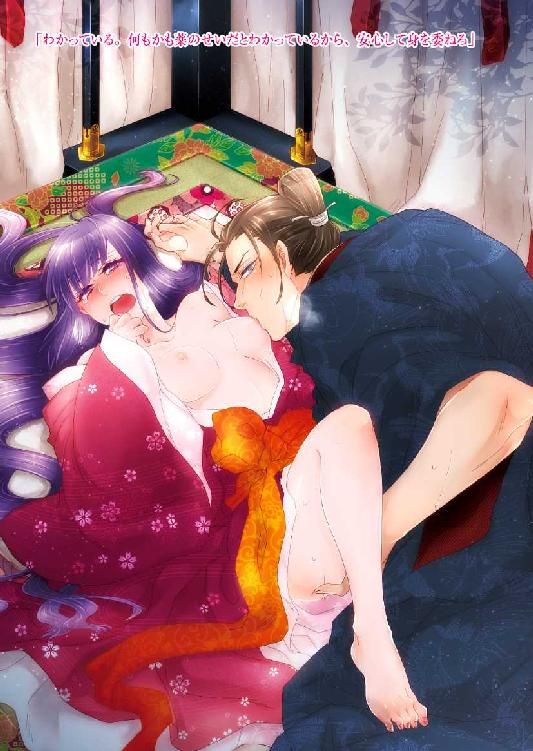
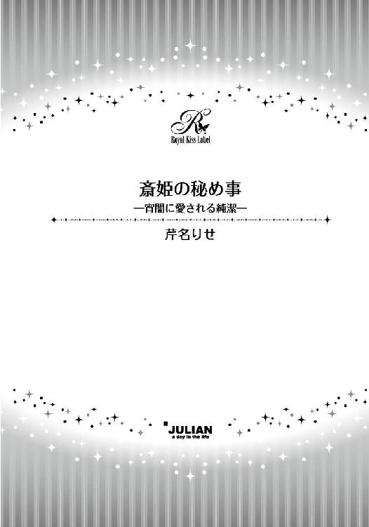
この物語はフィクションであり、実在の人物・団体・事件等とは、いっさい関係ありません。
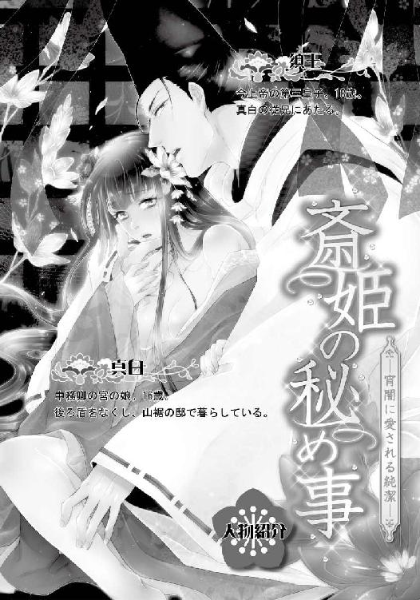
イラスト・九重千花
序章 邂逅
それは今から八年前、中務卿の宮と呼ばれていた真白の父がまだ存命で、左京の二条に構えた邸に住んでいた頃のこと──。
今上帝とその弟宮である父は幼い頃から仲が良く、帝にとって父宮は片腕のような存在であった。そのため年に一度二条の邸を訪れることを、帝は何よりもの楽しみとしていた。
帝が内裏を出て他所へ出向することは行幸と呼ばれ、大掛かりな準備が必要とされる一大行事であるが、迎える側にもそれ相応の用意が必要となる。
その日は朝から邸内中が浮足立っていた。室内外を整え、競馬や鵜飼などの余興を準備し、船楽に用いる船の用意や饗宴で振る舞う食事の準備と、何事にも不備のないように皆忙しそうに立ち回っている。
八歳の真白は乳姉妹である常葉とその妹の早代と三人、子供たちだけで西の対に放っておかれた。雛遊びや絵描きなどで時間を潰し、昼をまわったところで宴に出席する格好に着替えさせられる。
「姫様、どうぞ大人しくなさっていてくださいませね」
「わかったわ、萩乃」
乳母の萩乃に念を押されるまま、真白は素直に頷く。濃い袴の上に白袴を重ね、五つ衣の上には衵や汗衫。普段の軽装な衵姿と比べれば窮屈でならなかったが、色鮮やかな衣装は見ているだけでも楽しく、袖を通すと心が躍った。
寝殿の広廂の一画に設けられた女人用の席に入り、母と共に帝の来訪を待つ。
「真白、あまりきょろきょろしないように」
「はあい」
母に注意されつつも、身を乗り出すようにして御簾の向こうに目を凝らさずにはいられない。
多くの上達部や殿上人を伴っての行幸は賑やかで華々しく、簀子に一列に並んで坐した公卿方が色とりどりの下襲を高欄に掛けた様子も美しかった。母屋や対の屋の御簾の下からは、女房装束の袖口の襲色目をわざと見せる打出も行われており、室礼に一層の華やかさを添えている。いつもと同じ邸宅であるはずなのに、まるで違う場所に迷い込んでしまったかのようで、自然と真白の気持ちも昂揚する。
帝が到着した後は、父宮と共に寝殿の座に就かれた帝に相伴する形で、真白も御簾越しに様様な余興を楽しむことができた。
雅楽も公卿の子供たちによる童舞も、その日は全てが寝殿の前池に浮かべられた二隻の双胴船の上で行われた。それぞれ四人の童たちによって舞われる『迦陵頻』と『胡蝶』は対の舞で、衣装や小道具にも凝った見応えのある演目だ。
上半身が人で下半身が鳥という伝説の生き物『迦陵頻伽』に扮した少年たちの中の一人に、真白は視線を奪われていた。
（あれ？ どうして......？）
平絹白地の袴に赤地の袍、背には鳥の羽を模した飾りを背負い、みずらに被った宝冠には桜の枝を挿すという服装は皆同じはずなのに、その人物だけがまるで異なって見える。
他の三人より背が高く、立ち姿も舞う姿も優雅で、凛とした横顔のその少年は、実は今上帝の第三皇子なのだと母がそっと耳打ちしてくれた。
「皇子様？」
「そうですよ。ですから真白とは従兄妹になられますね」
「従兄妹......」
生まれて初めて目にしたその姿をもっとよく見ようと、真白は自然と前のめりになる。このままでは御簾から転げ出てしまいますよと母に苦笑されたほどで、それでも食い入るように見物することをやめられなかった。
季節は秋、庭に植えられた木々の紅葉も美しく、酒や料理も存分に振る舞われ、夕暮れが近付いても宴は賑やかさを増すばかりだ。
しかし庭に篝火が焚かれ、酔いのまわった公卿たちが各々の得意な楽器を奏で始める頃合いになると、さすがにそろそろ西の対に帰って休むようにと母に促された。
本当はまだ賑やかな席に居たかったのだが、いつもならば床に就く時間をとうに過ぎていたこともあり、真白は仕方なく乳母の萩乃と共に西の対に引っ込んだ。
寝殿前の南庭で催されている宴の賑わいは、寝所としている塗籠に入ってもまだ遠く漏れ聞こえてくる。夜が更けるのも忘れたかのような、華やかな楽の音と人々の楽しそうな笑い声。名残惜しげに寝殿の方角を見ると、萩乃にやんわりとたしなめられる。
「姫様は、もうお休みの時間ですよ」
「......はい」
しかし何枚も重ねていた衣を脱いで身軽になり、畳に敷かれた茵の上で丸くなっても、目が冴えてしまってまったく眠れる気がしない。
「おやすみなさいませ」
萩乃は隅に置かれた燭台の灯りを消して塗籠から出ていってしまったが、真白は衾代わりの袿を鼻の上まで引き上げ、大きな瞳をしっかりと開いたままその足音を聞いていた。
「おやすみなさい」
枢戸を閉め、廂を抜け、簀子へと出ていく足音が聞こえなくなると、辺りからはまったく人の気配が感じられなくなる。通常ならば真白が寝付くまで傍に居てくれる萩乃も、今宵は宴の手伝いで忙しくそこまでつきあってくれない。
三方が土壁に囲まれた塗籠の中に居るとはいえ、喧騒からは遠く離れた西の対でただ一人、真白は心細かった。
時々遠くで上がる大きな笑い声に、びくりと肩が震える。頭まで袿を被ると固く瞳を閉じた。
（大丈夫、今宵はお客さまもたくさん泊まられるのだもの、怖い夢なんて見ない）
ここ数日、真白は夢見の悪い日が続いていた。何か恐ろしいものに追いかけられているような夢をくり返し見るのだが、それが何なのかわからない。後ろから近付かれ今にも捕まりそうになったところで目が覚める。
その距離が日ごとに近付いており、今朝はもう背中のすぐ後ろに何かの気配を感じた。今宵こそは捕まってしまうのではないかと考えると、眠ることが怖ろしい。
（やっぱり......）
遠く楽の音も聞こえることだし、このまま起きていようと決意し、真白は畳の上で半身を起こした。その瞬間、塗籠へと入る枢戸が音もなく開く。
「え？」
一瞬、萩乃が戻ってきたのかと思ったがそうではない。明かりがないため顔はよく見えないが、そこに立つ人物は姿形が萩乃よりはかなり小さい。どうやら子供のようだ。常葉か早代かとも思ったのだが背格好がというより服装が違うようなので、真白は首を傾げる。
「誰？」
歩み寄ってきたのは、真白より幾つか年上らしい少年だった。間近で顔を確認して、真白は思わず声を上げてしまう。
「あ！」
それは先ほど童舞を見ていた時に、どうしても視線を引き寄せられずにはいられなかったあの少年だった。自分とは従兄妹に当たると母から教えられたその少年が、ふいに塗籠に現れたことが信じられず、果たしてこれは夢なのか現実なのかと、真白は訝しむ。
「皇子様......？」
思わず呟くと、少年が表情を少し険しくして首を傾げた。
「私を知っているのか？ お前は誰だ？」
「あ、真白と申します」
寝床である畳から下り、板間の上に座り直すと真白は頭を下げた。不思議な気分だった。
（どうして皇子様がここに？）
帝の行幸に従ってきた者たちの休む場所は、寝殿の北側の北の対と東側の東の対に設けられている。そのため西の対に戻った真白は普段の生活空間に帰った気の緩みで、貴人が同じ邸内に宿泊する予定であることもすっかり意識の外だったのだが、ひょっとすると西の対も接待の場とされていたのだろうか。
寛ぎきった姿を晒してしまったことが恥ずかしく、なかなか顔を上げられないでいると、皇子が思いがけない言葉を漏らした。
「誰かに呼ばれたような気がしたのだが、呼んだのはそなたか？」
「え？」
気まずさも忘れてつい顔を上げてしまった。凛々しさを絵に描いたような真剣な面差しで、皇子が真っ直ぐに真白を見下ろしている。
「私の名前を何者かが呼んだのだ」
「いえ、あの......」
真白は皇子の名前を知らない。恐る恐るそう告げると、俄かに皇子の表情が緩んだ。
「そうか。そういえばそうだな」
「はい」
納得してくれた様子なのでこのまま塗籠を出ていくのかと思いきや、思いがけなく真白の前に皇子は腰を下ろす。
「私の名は須王だ」
「須王様？」
「そうだ」
真白が小さな声で復唱すると、須王は困惑したように眉根を寄せた。
「やはりそなたの声だと思ったのだが......」
しかし真白はたった今彼の名前を知ったのだ。それには間違いはない。もう一度そうくり返すべきかと躊躇う真白に先立ち、須王は一人で納得したかのように頷いたかと思うと、そのまま話題を変えてしまう。
「まあいい。そなたは中務卿の宮様の娘なのか？」
「はい」
「ならば私とは従兄妹同士ということになるな」
「はい」
自分から人に話しかけることがあまり得意ではない真白にとって、須王の方から様々に問いかけてくれ、短い返事にも気を悪くした様子もなくそこからまた会話を続けてくれることは、とてもありがたかった。おかげでこれまで会ったどの人物よりも話しやすい。
お互いのこと、今日の宴のこと、止めどなく語りあった後にはいつの間にか怖い夢のことまで打ち明けてしまっていた。乳兄弟である常葉にもまだ話していないというのに、初対面の須王にどうしてそこまで話ができたのか、真白は自分でも戸惑うばかりだ。
（口調は淡々としているけれど、こちらの話をちゃんと聞いてくださっているようで安心できるから？ まるで大人みたいに落ち着いていて、とても頼りになりそうだから？）
懸命に答えを模索していると、須王が思いがけない提案を持ちかけてきた。
「ならば私がそなたを助けるから、危なくなったら私の名を呼べ」
「え？ 夢の中で......でございますか？」
「そうだ。呼ばれれば必ず助けに行くから」
「......はい」
しかしどうやって他人の夢の中に入るのだろう。真白は疑問を感じながらも、自信に溢れた堂々とした宣言に気圧されたかのように頷いてしまう。さすが皇子様だ。まだ元服前の童姿でありながら、持って生まれた風格と威厳のようなものはやはり人並み外れている。
真白は感心したように須王を見つめた。意志が固そうで自信に溢れ、真白が持ちあわせていないような部分をたくさん持っている。それなのに気後れしないで話ができるのは、相手に距離を感じさせず気安い須王の独特の雰囲気のせいだろう。
結局、怖い夢を見ても助けに入ってくれると約束した須王はその後もまだ真白に様々に問いかけ、真白もそれに懸命に答え、二人の語らいはいつまでも終わらないままだった。
そのためいったいいつ自分が眠りに落ちたのか、真白ははっきりと覚えていない。ただ目覚めた時には傍らに須王が居り、その上固く手を繋いでくれていたことに、翌朝塗籠に入ってきた萩乃の驚いたような声で気が付いた。
「ひ、姫様？」
「......あ」
萩乃の悲鳴に真白が身じろぎしても、須王はまったく目覚めない。固く閉じた双眸は開かれないままだ。繋いだ手も放してくれなかったため、彼が目覚めるまで真白はそのまま隣に居続けた。
皇子様はこちらでお休みでしたと萩乃が慌てて寝殿の方に伝えに行ったところを見れば、須王が姿を消してあちらの女房たちは捜していたのかもしれない。申し訳なく思うことだったが、目覚めた須王は悪びれもせず首を横に振った。
「いや。きちんとあちらの塗籠で休んでいるふうに見せかけてきたし、おそらく誰も気が付いていないはずだ」
「そうなのですか」
「ああ。それよりも、昨夜はいつもよりもよく眠れた。朝から大掛かりな移動とその後の舞で疲れきっていたはずなのに、もうすっかり身体が軽い」
言い終わるが早いか須王はその場に立ち上がり、着の身着のまま眠ったためすっかり乱れてしまった服装を整える。
その溌剌とした様子を眩しげに眺めながら、真白も小さな笑みを零した。
「私も、久しぶりに怖い夢を見ずに済みました」
「お互いに良いことがあったのなら、これからも共に眠ることにするか？ そなた、私の妻になるか、真白？」
「え？」
突然の申し出に心臓は跳ね上がりかなり焦った真白だったが、須王の表情が昨夜からずっと見続けていた大人びたものではなく、今だけは年相応の少年らしい悪戯めいた笑顔をしていると気が付き、どうやらからかわれているのだと思い当たる。
「まだ無理です」
何故だか腹立たしく少し怒ったように首を振ると、須王はそのまま真白に背を向けた。
「ならば、また来る」
「え？」
来ると言っても二日間にわたって行われた行幸はもう今日で終わりだ。今日のうちには須王も帝と共に内裏に帰る。また来年の行幸のことを言っているのだろうかとちらりと思いながらも、これもまたからかわれているのかもしれないと真白は判断した。
「はい」
建前上は頷きながらも、本音ではそれを寂しく思った。それなのに──。
約束を違えることなく、それから須王は本当に頻繁に二条の邸を訪れるようになった。風流人として名を馳せる真白の父に和歌の手ほどきを受けるためと理由づけてはいるが、実際に父が住まう寝殿へ行っている時間はかなり短い。
「真白」
むしろ当たり前のように真白の住む西の対を訪れ、話をしたり遊んだりをして帰って行く。その習慣は、須王が元服し日の大半を朝廷で過ごすようになってからも、真白が裳着を終え御簾越しでしか会えなくなってからも、絶えることなく細々と続いた。
帰り際ふり向きざまに残されるのはいつも、初めて会った時から変わらない言葉と視線を釘付けにされずにはいられない眩い笑顔。
「また来る」
まるでそれが当然のことであるかのように──。
第一章 『斎姫』の宣下
「お願い......誰か......誰か......！」
何者かが助けを呼ぶ悲痛な声を耳にし、真白は固く閉じていた瞳を開いた。
しかし視界は未だ深い闇に覆われており、どうやらここはまだ夢の中らしいと悟る。嫌な予感が胸を過った。
斎宮を務めたこともある内親王を母に持ち、遥拝と信心の日々の中で静かに育てられた真白は、幼い頃より気付きの良い子供だった。夢に見たことが現実となった経験が幾度もあり、それを知る者たちからは斎の力を持つとも言われている。
しかし見る夢はどれも彼女にとって楽しいものではなく、両親の死を予見した後も、住んでいた邸の火事を予見した後も、真白の境遇は辛く厳しいものへと変化するばかりだった。
そのため彼女は、現実となり得るかもしれない夢を見ることがあまり好きではない。
できることなら今も両耳を塞ぎ、助けを求める声を無視してしまいたかったが、それができるほど無情な性分ではない。かえって情け深く他人の不幸を見過ごすことができないような性格で、自分にとって不利益になるかもしれないとわかっていながら、今宵も暗闇の中を手探りで歩き始めた。
「どこから聞こえてくるのかしら？」
声に出して呟いた瞬間、前後左右何もなかったはずの闇の中に、突如としてどこかの邸の門が現れる。その不自然さに戸惑うこともなく、やはりこれはいつもの夢なのだと嘆息しながら静かに門を潜った。
そこは、これまでに一度も訪れた覚えのない、どことなくうら寂しい雰囲気の邸だった。
寝殿を挟んで東西に対の屋が設けられたごく一般的な造りだが、広い邸内のどこにも人の気配はない。黒色に塗られた奇妙な形の中門を抜け、雑草が伸び放題となった前庭を進めば、手入れをされていない白砂利に足を取られて転びそうになる。
ところどころ築地も崩れ、池さえ涸れ果てた庭園は数歩先まで闇に沈み、その中では何か怖ろしいものが、息を潜めてこちらの様子を窺っているような気がしてならない。
不気味なまでの静けさの中を心なし足を速めながら歩けば、寝殿があると思われる方角に、ようやく微かな明かりが見える。
「あそこかしら？」
逸る気持ちを抑えながら向かった先では、前庭から直接簀子へと上がる五段の階が、両脇に掲げられた篝火の灯りに照らされ、暗闇の中にぼんやりと浮かびあがっていた。
「誰か居られるのですか？」
数回呼びかけても奥からは何の返答もない。ためらいつつも階に片足をかけた瞬間、辺りの静寂を引き裂くかのように、松明の薪がパシリと鋭い音を響かせて爆ぜる。
ドキリと大きく跳ねた胸を衣の襲目の上から手で押さえ、真白は長い黒髪を揺らして背後をふり返った。漆黒の闇に紅蓮の火の粉が舞い、篝火の焔が大きく揺らめく光景が目に飛び込んでくる。
あたかもそれに炙られでもしたかのように熱く艶めかしい声が、どこからか漏れ聞こえてきた。
「あっ......ぁ......」
声は寝殿の奥──簀子と廂を仕切る蔀戸の向こうから聞こえるようだった。
不安に胸を焼かれながらもまるで引き寄せられるように、階を上がり簀子を進めば、しんと静まりかえった辺りの空気を震わせるような声が、更に奥から聞こえる。
「あっ......あぁ......」
妻戸を開いて廂に踏み入ると、開け放たれた襖の間からその奥に広がる母屋まで見渡すことができた。母屋の奥は一段高くなった祭壇になっており、注連縄で区切られた檀上には何かが祀られているようだ。中央でぼんやりと青白く光るものがある。
その手前に何故か貴人が休むための御帳台が据えられており、中では何かが激しく蠢いていた。それはどうやら人影のようだと、四方を覆い尽くす帳越しにもありありと見てとれる。
「やぁ......そんな......っは......ぁ......」
頼りなげに響く声はまるで何かに追いたてられるかのように、時に高く時に低く、甘く切なげに続く。
「もう......もうっ......っあ！」
聞いているだけで胸の鼓動が速くなるような、悩ましげな声に誘われるままそっと帳を捲り、几帳の向こうを覗けば、繧繝縁の畳の上に敷かれた茵には、扇状に黒髪を広げた少女がしどけなく横たわっていた。
少女以外の者の姿はない。しかし彼女はまるで何者かに上から押さえ込まれているかのような格好で、それからなんとか逃れようと細い首を右へ左へと懸命に振っている。
その度にまるで生き物のように大きくうねる長い黒髪。それは透き通るほどに白い額から赤く染まる頬にかけて汗で幾筋かしっとりと貼りつき、はっきりと顔は見えないながらも艶めいて美しい少女の風貌にいっそうの色香を添えている。
固く閉じられた双眸を縁どる長い睫毛の先には涙が滲み、濡れた唇はうっすらと開かれ、ろう長けた横顔はまるで現実から目を背けようとするかのように、頑ななまでに横を向いたままだ。
「こんな......っぁ......あ」
少女は夜着となる小袖から細い首筋や華奢な双肩、円やかな胸の膨らみまでが露わになるように、襟元を大きく寛げられていた。浅い呼吸を継ぐたびに、瑞々しい胸の膨らみが柔らかな弾力を感じさせながら激しく上下に揺れる。
若く美しい肢体からは袴も取り払われ、腰紐が結ばれた腹部しか布に覆われておらず、小袖の裾も捲られてしまっていた。祭壇の左右に置かれた燈台の灯りは御帳台の中までは及ばず、かなり薄暗い状態であるのに、その太腿の白さばかりがくっきりと目に痛い。
「やっ......や......ぁ」
膝立てた両脚を大きく左右に開かされた少女の格好が、同じ年頃の娘としてはとても黙って見ておられず、真白は帳を捲り上げて御帳台の中に踏み込んだ。
瞳を見開いた少女が驚いたようにこちらをふり返り、真白と正面から視線を結ぶ。
「そんな！」
悲鳴にも似た声を上げ、驚きのあまりに両手で口元を覆ったのは真白の方だった。
少女の方はといえば、黒目がちの大きな瞳からぽろぽろと涙を零し、嬉しいのだか悲しいのだかよくわからないような表情のまま、消え入りそうにか細い声でくり返し懇願する。
「助けて......お願い......」
それがたとえ自分にとって不利益となるかもしれなくとも、誰かが困っているのならば見過ごすことはできないと、暗闇の中を必死にここまで辿り着いた真白だったが、少女にかけてあげられる言葉が思い浮かばない。ガタガタと震えだした身体を自分自身で抱きしめるだけで精一杯だ。
あられもない姿で茵に仰臥し、泣きながら助けを請う少女は真白のよく知る顔をしていた。
それは少なくとも日に一度は鏡の中に見る──真白自身の顔だった。
「............！」
夜具として身体に掛けていた袿を跳ね除け、真白は弾かれたように茵の上に身を起こした。胸を突き破らんばかりに激しい鼓動がいつまで経っても収まらない。身体はどうしようもなく震え、全身にかいた汗で小袖は肌に貼りつくほどに濡れていた。
「夢よ......夢......」
自分に言い聞かせるかのように何度もくり返しながら、手の甲で額の汗を拭う。
寝所として使っている塗籠の隅には八稜鏡を掛けた鏡台が置かれているが、できることならもっと目につかない場所に遠ざけてしまいたい。今は自分の顔を見たくなかった。
瞼の裏には、御帳台の中で助けを求める自身の姿がはっきりと焼きついている。
「ただの夢......現実になどならない......」
口にすることでそちらの方を現実にしようとでもするかのように、願うように何度もくり返す。汗に濡れた小袖を新しいものに替え、衣桁に掛けていた単と袿に袖を通し、身の回りの世話をしてくれる常葉や早代が起き出す前に、そっと塗籠を出た。
辺りはまだ薄暗く、東の空だけがぼんやりと白んでいる。どうやら夜が明け始めたばかりの頃合いのようだ。少し考えたが、真白はそのまま妻戸を開け簀子にまで出た。
通常、女性──それも真白のように妙齢の娘は、いくら早朝とはいえ、誰に姿を見られるかもしれない簀子になど出ないものだ。しかし彼女を取り巻く環境は少し特別だった。
先々帝の内親王を母に持ち、先帝の親王を父に持つ真白は、本来ならば高貴な血筋の姫君として、大内裏にも近い場所で何不自由なく暮らしている身分だ。事実幼い頃には、京の二条にあった邸で両親から慈しまれ、華やかで幸せな日々を過ごしていた。
しかし三年前に両親を相次いで亡くし、一年前に火事で邸まで消失してしまってから状況は一変した。火事で一切を失い、取りあえずの間と、もともと別邸であった山裾に近いこの邸に避難したものの、邸を再建する目途も立たず、身を寄せるような縁者もおらず、京に戻る術もない。自然とそのままこの地で生活を続けている。
十六になったばかりの花盛りの年頃でありながら、後ろ盾もなく寂しい暮らしの真白の許からは使用人たちも一人減り二人減り、遂には乳母の萩乃とその三人の子供たちしか居なくなってしまった。
「これでいいのよ」
小さいながらもよく手入れされた前庭には、常葉や早代と共に真白自身が植えた花や木もある。その手入れは真白自らが行うこともある。
邸から出ることこそないが、たまたま通りかかった者が崩れた築地の隙間から偶然姿を見かけたとしても、誰が主で誰がそれに仕える女房だか、おそらくわからないであろう。
「本来ならば女御様として、次の帝に入内されてもおかしくない身分ですのに......」
乳母の萩乃は時折悔しげにため息を吐くが、真白自身にその気持ちはない。もともと両親も、一人娘の真白を内裏に上げることに積極的ではなく、それよりは少しでも長く手元に置き、その成長を見ていたいといったふうだった。
そのため真白は今の境遇をそれほど儚んではいない。華やかな京中とは遠く離れたこの場所で誰からも忘れられ、豊かな自然に季節の移ろいを感じながら亡き両親に思いを馳せ、ただ静かに慎ましやかに生きていくことこそ、自分に合った生き方だと思っていた。
それなのに──。
朝の澄んだ空気の中を、次第にこちらへと近付いてくる馬の蹄の音と、微かな嘶き。それらを耳にし、真白はそっと簀子を離れた。
「あ......」
妻戸を潜って廂へ戻り、几帳の陰に姿を隠す。小柄な身体をいっそう小さく丸め息を潜めていると、いつものように馬を勝手に車宿りに預けたらしい人物が、規則正しく歩を進めて前庭に現れ、そこから呼びかけてくる。
「真白、いるのだろう？」
冬が近付いた朝の肌寒ささえ忘れさせてしまうような、明るく溌剌とした声で名前を呼ばれ、思わず返事をしそうになった。しかし桜貝のような唇をキュッと噛みしめ、真白は声を呑み込む。
「私にわからないとでも思っているのか？」
階を踏む音と共に声は近付き、真白は簀子に背を向けて几帳の陰で自分自身を抱きしめる。
（もうここには来ない方がいいのに......！）
それでも声の主は数日おきには馬を駆り、遠く京から真白の許を訪れるのだ。それはまだ両親が健在だった頃から続けられている習慣であり、彼女が天涯孤独の身の上となり住まいを京中から山裾に移した後も、途切れることはなかった。
真白の決して豊かではない生活を気遣い、様々な品を届けてくれることは有り難いが、昔馴染みの従兄妹同士というだけで彼にそこまで甘えていいものかと、常々申し訳なくも思っている。
「真白の香りがする。梅花に似ているが、もっと深くて甘い。これは母宮様がそなたのために特別に考えられた練香だ。私が間違えるはずないだろう？」
声は難なく簀子を抜け、真白が廂に急ごしらえで造った避難場所に易々と辿り着いた。遠慮も躊躇もなく几帳の裏側にまで回り込んでこられ、扇など準備もしていなかった素顔を、板間に膝をついた格好ですぐ目の前から覗き込まれる。
「ほら見つけた」
逃れることなどとてもできそうにない、きりりと鋭く強い眼差し。それは真白を取り巻く環境がどれほど変わろうとも少しも変化することなく、昔から真っ直ぐに彼女に向けられ続けている。
見つめ返すことさえ気後れしそうであるのに、視線を引き寄せられずにはいられない豪胆な笑顔。それはまさに今、山の端から顔を出した朝日のような眩さだった。
「須王様......」
狩衣姿の青年の名前を口にした途端、身体から力が抜けたことは真白自身にもわかった。いつもこうだ。実際に顔を合わせるまでは、もう会わない方がいい、きっぱりと断って今日こそこのまま帰ってもらおうと無駄な抵抗を試みるのだが、いざ須王を目の前にしてしまえばその決意はもろくも崩れ去る。
今上帝の第三皇子であり真白の従兄に当たる須王は、今の御世で最も貴い帝と東宮に次ぐ身分だ。本来ならばこのような京の外れまで、供も連れず馬で訪れていい人物ではない。
真白は何度もそう諌めるのに、慣例も風潮も顧みずに自分の思うがまま行動する須王は、邸を訪問することを決して止めようとはしない。
しかも何故だか、真白の気持ちが落ち込んでいる時に限って、こうして必ず現れる。
「泣いていたのか？ 目が赤い」
まるでそこに涙の跡でも見つけたかのように指先で頬を撫でられ、真白は必死に首を横に振った。
「いいえ......ただ、少し夢を見て......」
「また悪い夢か？」
幼い頃から親しくしている須王は、真白の夢見が悪いことも、それが時折現実となってしまうこともよく承知している。──見たことが現実となってしまう不思議な夢。それはいつも真白の傍から大切な何かが欠けてしまうといったふうな、不吉な暗示を感じさせる内容ばかりだ。
だからこそ須王にだけは悪い未来を予見せずにすむよう、なるべく自分とは関わりあいにならないでいてほしいのに、真白が俯きながら「はい」と答えた瞬間、「気にするな」と笑いながら、勝手に細く白い手を取られてしまう。
「それよりも見せたいものがある。来い」
手を引かれるままに立ち上がった真白は、須王の大きな背中の後をついて再び簀子へと戻った。
少年の頃の頼もしさそのままに、身体つきも人となりも大きく成長した須王はもう十八歳。本来ならばとうに正妻を迎えている年齢だが、今のところまだ独身を貫いている。その理由を考えれば、真白は気が重くならずにはいられない。
連れて行かれた簀子には庭から階を上ったところに竹を編んで作った籠が置いてあり、中には数匹の魚が並べてあった。
「土産だ。今捕ってきた」
「須王様が、ですか？」
驚きのあまり、真白は須王の顔をまじまじと見上げた。
「正確には、桂川の鵜飼いが......だが、その手伝いをして私が捕まえたのは本当だ」
しかし自信に溢れた笑顔を間近で見せられ、息が苦しくなりすぐに面伏せる。
「ありがとうございます。皆も喜びます。すぐに萩乃に言って......」
不自然に視線を逸らしたことを誤魔化すように口早にお礼の言葉を述べていると、その途中で顎を須王の指に捕らえられた。再び顔を上向けさせられ、切り込むように鋭い眼差しを注がれる。
「そなたは？」
「......え？」
驚きに目を瞠る真白の顔に、須王の顔が近付く。顎に添えられた指はひんやりと冷たく、狩衣の袖も濡れており、本当に彼が自ら魚を捕ってきたことを物語っていた。貴き身分を考えれば決して褒められた行動ではないが、自分のためにと思えば胸の奥が熱くなる。真白の鼓動は俄かに加速し始めた。
「そなたも嬉しいか？」
「はい」
問いかけられたのですぐに頷いたが、相手の心の奥底まで見透かすような須王の強い視線は緩まないままだ。よく整った精悍な顔が、真白の小さな顔に更に近付く。
「それでも笑わないのだな。喜ぶ顔が見たかったのに」
「あ......」
そのまま頬に頬を寄せられそうになり、真白は慌てて両手で須王の胸を突いた。逃げるように身体を引く。
顎から手を離した須王もそれ以上詰め寄るようなことはせず、二人の間の距離は微妙に開いた。自らつくりだした距離でありながら、その遠さがちくりと真白の胸を刺す。
簀子にあった円座を自分の方に引き寄せた須王はその上に座り、真白にも隣に座るように指示した。真白が素直に従うと、改まって彼女に向き直る。
「ここは静かでいいところだが、寂しすぎる。もっと賑やかな場所で楽しく過ごした方が、きっと怖ろしい夢も見ずに済む」
「ですが本邸はもう......」
火事の後の土地は既に、是非にと願い出た貴族に譲ってしまっていた。両親の残してくれた全てが灰となり、土地を譲った代金がなければ今の慎ましやかな暮らしさえ危うかったのだから仕方ない。
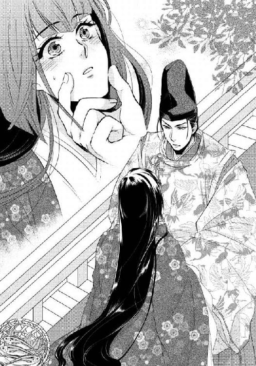
そのため京の中心に戻ろうにも、真白にはもう住む邸がなかった。何度も説明した事柄を今日もくり返そうとするとそれを遮り、須王が既に耳に馴染みつつある言葉をまた口にする。
「私の許に来ればいい。以前からずっと言っているだろう。真白と萩乃たちが住む場所くらいいくらでもある」
「............」
須王は事あるごとにそう提案するが、真白はいつも了承できずにいた。
今上帝の親王である須王は、現在は内裏の中に舎を賜り、そこで生活している。しかしそれも東宮である兄宮が即位するまでのことで、それに先立って臣下に下り、皇族出の公卿として兄帝の治世を補佐する立場になることは既に決まっている事柄だ。その際、無意味な対立を避けるためにも、有力な貴族の娘の中から正妻を迎えることは必至だった。
もし真白が先に須王の許に身を寄せていたならば、彼が正式に妻を迎えた時、その貴族の姫君は真白のことをどのように思うだろう。真白自身も様々に思い悩むことは間違いなく、須王の立場をも難しいものにしてしまうかもしれない。
それならば初めから、彼の優しさに甘えたりなどしない方がいい。須王の将来の邪魔にだけはなりたくないと、真白は常々思っている。
「真白」
胸に染み入るような声で名前を呼ばれ、ドキリと心臓が跳ねる。伸ばされた指に髪の先を絡められ、そのまま須王の胸に頬を埋めてしまいたい衝動を真白は必死に堪えた。
まだ父宮が存命だった頃、二条にあった邸に遊びに来る度に、須王は大きくなったら真白と結婚し、共に三日夜の餅を食べるのだと声高らかに宣言していた。
他愛もない約束を父宮は笑って見守り、真白も恥ずかしいながらもそれを嬉しく受け止め、まだ子供らしい屈託のない笑みを浮かべていた日々──。
世の理など何もわからず、何に憂いを感じることもなく気持ちに素直でいられたあの頃が懐かしい。須王は未だにあの約束を貫こうと言ってくれるが、真白にはそうするだけの自信も希望もない。須王のことを思えばこそ、凋落した宮筋の姫である自分が妻となっても、決して彼のためにはならないという気持ちばかりが大きくなる。
「いえ。私はここに居ります」
傾きそうになった気持ちと身体を立て直し、真白が居住まいを正してきっぱりと首を横に振ると、須王がその場に立ち上がった。
「そうか。では、また来る」
「もう......」
ここには来ないでいいという言葉は、決して口にさせてはもらえない。凛とした眼差しで高い位置から見据えられ、声に力を込められる。
「また来る」
念を押すようにもう一度くり返してから背中を向けた須王が、階を下り足早に前庭から立ち去っても、真白は座り込んだ簀子の端で高欄にもたれかかったまま、微動だにできずにいた。
来ないでいいと口では言いかけながらも、今日も彼がその要求を呑んでくれなかったことに、心のどこかでは安堵している。
（須王様......）
会えば苦しくなるのに、会えなくなることを想像すれば更に苦しい。持て余す想いをどうすることもできず表情を曇らせる真白に、背後から呼びかける声があった。
「え、姫様？ どうしたんです、こんなところに座りこんで......」
乳姉妹の常葉だ。真白と同じ十六だがしっかりとした性格で、いつも姉のように甲斐甲斐しく世話を焼いてくれる。真白が使っている西の塗籠とは対になった東の塗籠で、母の萩乃や妹の早代と共に休んでいたはずだが、もう起き出してきたらしい。先ほど山の端から顔を覗かせた朝日が、東の空に昇り始めている頃合いなのだから当然だ。
風邪をひかないようにと、真白の肩にもう一枚袿を羽織らせてくれる常葉の背後から、早代も顔を出した。
「姫様それ......あ、宮様が来られたのですね」
真白と常葉より二つ年下の早代は、機転が利く頭の良い少女だ。真白の前にある籠を持ち上げると、丸顔をニコニコと綻ばせる。
「母様に持っていって、今日の夕餉に出してもらいます。姫様お好きですもんね......よかったですね」
声音を変えて告げられた最後のひと言だけは、おそらく魚に対して発せられたものではない。それを持ってきてくれた須王について語られたのだとはわかったが、あえて言及せず、真白は静かに頷いた。
「ええ」
簀子に座り込んだままの真白の手を引き、立ち上がらせながら、常葉が苦笑する。
「その前に朝餉、いいえ......まずは身支度ですよ。姫様、その辺りに掛けてあった衣を適当に着ましたね？ 襲の色目がバラバラです」
「あ......」
そのような姿で須王と対峙してしまったのかと、真白は一瞬口元を手で覆ったが、気にすることはないとすぐに思い直した。須王はそういったことにはまったく頓着しない。現に、真白の間近に迫っても、襲の色目のことなど話題にするどころか気付いた素振りもなかった。
細かいことは気にしない豪胆な性格なのに、一度気にかけた者のことは決して見捨てないほどに愛情深い。初めて会った時にそう感じ取り、以来ずっと好ましいと思ってきた美点を思い返せば、また胸の奥が締めつけられるように痛くなるので、真白はもうそれ以上須王のことを考えないようにした。
「とにかく一度、塗籠に戻ってください。御髪も梳きますから」
「ええ」
魚の入った籠を両手に抱え台盤所へと向かう早代を見送ってから、真白も常葉に追いたてられて一旦塗籠へと戻る。
京の外れの山裾にある小さな邸で、慎ましく穏やかな一日が今日も始まった。
こぢんまりとした造りのこの山裾の邸で真白に仕えてくれているのは、乳母である萩乃とその二人の娘──常葉と早代、そして二人の兄である直輔のみだ。
直輔は、真白が京中に住んでいた頃は従八位上の官人として神祇官府で神祇少史を務めていたが、今は休職して家令のような働きをしてくれている。それでは申し訳ないと、真白は彼だけでも京に戻ることを勧めたが、聞き入れてはもらえなかった。
「私が居なければ、姫様も妹たちも母上もいったいどうやって暮らすんです？ この辺りには他に邸もない。夜盗に入られても誰も助けに来てくれませんよ？」
直輔の言うとおりだった。力仕事を任せられるのは直輔だけだし、もしもの時に頼りになる男手もやはり必要だ。自分と関わったばかりにと申し訳なく思いながらも、乳兄弟の兄というよりは実の兄のように近しい存在である直輔を、真白はかなり信頼している。
その直輔が、朝餉の後に簀子の床を修繕しながら、その奥の廂で繕い物をしている真白たちに問いかけてきた。
「宮様、今朝は濡れてらっしゃらなかったですか？ 道中雨が降ったようで、馬を繋いでらっしゃった車宿りはかなり濡れていたのですが......」
「え......」
手際よく動かし続けていた針を、真白は思わず止めた。
直輔の言う『宮様』とは須王のことだ。今朝はまだ夜が明けきらないうちに須王が現れ、勝手に真白に会って帰っていったので、常葉と早代は彼を出迎えていない。それぞれに「知らない」と答える声を耳にしながら、真白はいたたまれない気持ちになった。
ならば冷たいと感じた須王の指先も、濡れていた狩衣も、魚を捕ったためではなかったのだ。それ以前か、その後に、ここに着くまでに雨に打たれたから──。
そうまでして遠いこの場所を訪ねてきてくれることに、やはり有り難い気持ちよりも申し訳ない気持ちの方が勝る。
「風邪を召されなかったかしら？ そうまでして来てくださらなくても......」
胸を痛めながら呟くと、直輔が「違いますよ、姫様」と大きな声で笑う。
「宮様にとっては、雨が降ったからってここまで来れないことの方が一大事です。ねえ常葉？」
兄から話題を振られ、常葉は針を持った手だけは忙しく動かし続けながら、「もちろんそうですよ」と力のこもった返事をした。手にしていた縫いかけの単を膝の上に下ろしてから、改めて真白に視線を向ける。
「それに宮様は、それしきのことじゃ風邪なんて召されないと思いますよ？ 嵐の日に急きょ屋根の修理を手伝ってくださった時だって、散々雨に濡れて兄様は翌日寝込んだのに、宮様はケロッとした顔でいつものように姫様に会いに来られたじゃないですか」
「そうか。そういえばそんなこともあったな、ハハハ」
朗らかな直輔の笑い声につられ、真白の表情も緩んだ。その顔を見つめ、早代がほんの少し真白の方に膝を寄せる。
「姫様、あまり思いつめないで、宮様にもそういうお顔を見せてさしあげたら、きっと喜ばれると思いますよ」
「え？」
思いもかけないことを言い出され、真白は小首を傾げた。早代はいかにも年頃の少女らしい好奇心いっぱいの表情で、嬉しげに真白の顔を見上げてくる。
「姫様の笑顔が見られれば、たとえ雨に濡れたって道中疲れたって、全部吹き飛んでしまわれます！ だから笑ってさしあげたらいいですよ！」
無邪気な笑顔でそう提案され、真白は言葉に詰まった。
「............」
忙しい日々の合間を縫い須王がこの遠方まで足繁く訪れてくれることには本当に感謝している。お礼の言葉はもちろん伝えているが、それを喜んでいる気持ちの方はなかなか伝えることができない。それでは須王をこの邸から、ひいては自分から遠ざけることができなくなってしまう。
彼のためにはもうここに来ない方がいいと思っている真白の表情や態度は、早代の目から見ればかなり素っ気ないものなのだろう。そこを変えたらと助言してくれるのは親切心に違いないが、従うことはとてもできない。
困ったように黙り込んでいると、乳母の萩乃が娘を諌めてくれた。
「こら早代、姫様を困らせるものじゃありませんよ。姫様も、どうぞ気になさらないでください」
「ええ......」
小さく頷きながらも気持ちは晴れなかった。
「ごめんなさい」と首を竦める早代の、少女らしい素直な態度。そういった可愛らしさのようなものを、自分はいつ失くしてしまったのだろう。早代とは二つしか年が違わないのに、ものの考え方や受け止め方が自分はかなり冷めているように思う。その理由は──。
今朝方、須王が来る前に見ていた夢の内容がチラリと頭の隅を掠めそうになり、真白は慌てて手にしていた針を再び動かし始めた。
好ましいとはとても思えない未来を変え難い現実として夢に見る度、少女らしい無邪気さや明るさのようなものが自分から削ぎ落とされてきたように思う。真白がどれほど拒んでも嫌だと思っても、これまで先読みした夢は全て、後に現実のものとなった。邸の火事などは予めそれを周りに伝えていたにもかかわらず、防ぐことも逃れることもできなかった。
なにか大きな力が定めた運命の流れの中を、自分はこのまま抗うこともできずに生きていくしかない。どこかでそう諦めてしまったような気がする。
しかし全てを受け入れ、諦めようとする気持ちの片隅に、今度こそはと望みを繋ぐ小さな希望も、やはり完全には捨てきれずにいる。
だからこそ未来は自分の力で切り開くと宣言し、それを実際に実行してしまう須王を、真白は本当には拒めないのだ。彼のように自分を強く持つことで未来を決められるのならば、願うことはたった一つ。
──もうこれ以上誰も、自分の周りに居る者が不幸になってほしくはない。
そこには萩乃たち親子だけではなく、当然須王も含まれている。その願いを叶えるためならば、自分自身は情の薄い人間だと思われても構わない。
胸に秘めた決意をまた新たにするかのように唇を引き結び、手にした縫いかけの衣に真白は真剣な眼差しを落とした。
主の様子に合わせるように皆も口を噤み、山裾の小さな邸では、すぐ近くにある森で鳴く鳥の声と直輔が床板を修繕する音のみが、長く静かに続いた。
山に近い邸は京中よりも冬の訪れが早く、真白はその夜、眠る時に身体に掛ける袿を二枚に増やした。しかし三方を土壁、残る一方を出入りのための柩戸で囲まれた塗籠の中は、壁が存在しない廂よりは暖かい。寝ているうちに暑いほどになり、寝苦しさで夜半過ぎに目を覚ました。
掛けていた袿を一枚除けようかとし、しかしそうできないことに違和感を覚える。
「え？」
両腕がまったく上がらなかった。否そもそも、茵の上で仰向けになった真白は、取り除こうと思った袿を被っていないのだ。
「どうし......」
動かない腕の代わりに視線を廻らせ、辺りの様子を確認した瞬間、驚きのあまり声を上げてしまいそうになった。彼女が横になっているのは、いつもの自分の塗籠の中ではない。
あまり視界がはっきりとはしない薄暗がりの中、見上げた天井には白絹張りの明障子が見える。それは十二本の柱の上に渡された鴨居の上に載せられており、鴨居からは四方とも帳が垂らされていた。
帳の手前には東西と南の三方に更に几帳が置かれており、どうやら自分は塗籠よりもっと狭い空間──御帳台の中で横になっているのだと、真白は息を呑む。恐る恐る視線を下げた先では、きっちりと重ねていたはずの小袖の合わせが胸元にかけて大きくはだけられていた。
「あ！」
先日見た艶めかしい夢が一瞬にして脳裏に甦り、間違いなく自分は今、あの時の少女と同じ状況下に居るのだと理解する。御帳台の中の息苦しいほどの熱さも、仄暗さも、帳の色も几帳の色も何一つ変わらない。
ただ異なるのは、前回は訪問者として少女の痴態を違う場所から傍観していた真白だったが、今は茵の上に組み敷かれた少女としてこの場に居ること。両腕は単に上がらないのではなく、目には見えない何者かに力ずくで畳に押さえつけられていた。
「いや......や......っ」
両腕に一つずつ、確かに押さえられている手の感触があるのに、何故だか大きくはだけられた胸にも、何者かの手の感触がある。誰にも触れさせたことのない胸の膨らみを無遠慮に探られ、全身に鳥肌が立った。
「やっ......やあ......！」
あの夜、涙ながらに助けを乞うた少女の気持ちが、改めて自分の感情として心を焼いた。
どれほど目を凝らしても御帳台の中に自分以外の者の姿は見えないのに、胸だけではなく太腿にも脇腹にも、身体じゅうの至る所に無数の手が這いまわっている感触がする。
おぞましくて仕方がないのに指一本動かすことができず、ただ一つ自由になる声をふり絞って誰かに助けを乞うしかないのだ。あの夜の少女のように──。
「誰か......誰か！」
声は震え、望まぬままに熱い吐息混じりとなった。身体を無数の手が這いまわる感触など不快でしかないのに、壊れんばかりに胸の音は大きくなり、身体は熱く火照る。
「いやっ......いや......あ......」
これまで感じたこともないような感覚が肌の上に刻まれ、それに対する過敏な反応を自分の中から否応なく引き摺り出される。おぞましく怖ろしく、頬を伝う涙が止まらない。
「やめっ......や......あ！」
幾つかの手が両膝にかかり、袴を脱がされて剥き出しになった両脚を、あの夜のように大きく左右に開かされそうになる。真白は全身に力を入れて必死にそれを拒んだ。
「やだ......や......あっ」
しかし抵抗も虚しく、小袖の裾を捲られ、脚を左右に割り開かれる。誰の目にも晒すべきではない場所を目には見えない何者かの前に大きく曝け出し、その羞恥の格好のまま、両腕と同じように両足首をも床に固定される。
これからいったい自分の身に何が起こるのかを考えれば、恐怖で心が壊れそうになる。
「誰かっ......誰......っ！」
精一杯の声で真白が叫びを上げた時、頭上に位置する枢戸が、ばんと土壁に打ちつけられる音がした。
「真白！」
聞き違えようのない声を耳にし、真白の中で安堵と悲しみの思いがない交ぜになる。複雑に絡み合った感情が、涙として堰を切ったように溢れ出た。
「あ......あ......」
南に面した枢戸を壊れんばかりの勢いで開き、真白が横たわる塗籠の中に足音も荒く踏み込んできたのは須王だった。几帳の間を抜け、茵に仰臥する真白のすぐ傍に膝をつくと、恐怖に震える華奢な身体を抱き起こし、腕の中に抱きしめる。
「どうした？ 何があった？」
「あ......」
なりふり構わずその腕にしがみつき、真白は須王の胸に顔を埋めた。普段は決してそのような行動に出たことはない。しかし夢と現実の境もわからないほどにすっかり狼狽してしまっていた。
夢の中と違い、実際の真白の服装はまったく乱れてなどいない。きっちりと小袖や袴に身を包んだままだ。それでも身体じゅうを這う何者かの手の感触ははっきりと肌に刻まれており、それを打ち消そうとでもするかのように須王にしがみつけば、逞しい腕でしっかりと抱き止められる。肌着一枚越しに感じる温かな腕の感触に、ようやく安堵した。
身体の震えが収まるに従い、思考も正常になってくる。塗籠の中で横になっていたこちらの方が真白の現実だ。現実なのだ。奥に祭壇のある奇妙な場所でその中央に据えられた御帳台の中に寝かされ、目には見えない者たちから蹂躙されるなどという異常な経験は、今のところ単なる夢でしかない。
何度も自分に言い聞かせ、真白は縋るように掴んでいた須王の腕をそっと放した。
「ありがとうございました......」
抱きしめた腕は緩めないまま、須王が耳元で問いかけてくる。
「夢を見たのか？」
「はい」
「大丈夫か？」
「はい、もう......」
答えつつ身体を引こうとするが新たに強く抱き直され、真白はたじろいだ。
「須王様？」
真白を腕の中から解放しない須王は、「ああ」と返事はしたものの一向にその体勢を変える素振りはない。仕方なく真白は問いかけた。
「どうされたのですか？」
真夜中という時刻も、ここが塗籠の中であることも、通常ならばこうして須王と共に居ることさえ考えられない状況だ。
前触れもなく須王が邸にやってくるのは最早当たり前のことだが、夜遅い時刻にというのは珍しい。それに対峙する場所はいつも簀子で、須王が少し身体を休めていくことはあっても、せいぜい廂までしか邸の奥には入ってこない。ましてや真白が寝所として使っている塗籠まで踏み込んできたことなど、まだお互いに子供だった時分にしかない。
おそらく今は、助けを呼ぶ真白の声を耳にしてここまで来てくれたのだろうが、それを抜きにしても何もかもが通常とは異なっていた。
須王の服装は、馬を駆るのに楽だからと彼がいつも好んで着ている狩衣ではなく、昇殿する際に身に着けるような正式な束帯姿だ。そのことに気が付き、真白の中でますます不安が膨れあがる。宮中での正装のまま馬を駆ってここまで来たのかと、常にはないその行動に驚く。
「何かあったのですか？」
頑ななまでに自分を抱きしめたままの腕にそっと手をかけながら、真白が重ねて問いかけると、須王がようやく重い口を開いた。
「今宵、帝が改まってお話があるというので病床に参じてみたなら、私の縁談だった。左大臣家の二の姫と結婚せよと」
「あ......」
いつかはその時がと以前から覚悟していたはずだったのに、現実として須王の口から結婚のことを告げられると、心に刃を突きつけられたかのような気がした。
先ほどまで感じていた恐怖とはまた違った痛みで、真白の胸は締めつけられるように苦しくなり、須王の腕にかけていた手をそっと引く。
「それは......おめでとうございます」
喉の奥から熱いものが込み上げてきそうだったが、面を伏せて堪えた。そのまま須王から離れようとするのに、彼の方はまるで逃すまいとでもするかのように、真白を抱きしめる腕にますますの力を込める。
再び須王の胸に頬を寄せるような格好になった真白の頭上から、怒ったような声が降ってきた。
「本当にそう思うのか？」
声音に非難めいた色を感じればこそ、絶対に顔を上げることはできない。深く俯いたまま真白は頷く。
「......はい」
実際は、無理に祝いの言葉を口にし、本音とは異なる返事をする度に、胸の奥につかえた重石がせり上がってきてその場に泣き伏してしまいそうだった。
真白の虚言を信じて須王がこのまま立ち去ってくれれば、今すぐにでもそうできるのに、抱きしめる腕には解放するつもりがまったく感じられない。かえって力がこもり、ますます固く抱きしめられる。
静かだが確かな決意に満ちた声が、耳のすぐ上から聞こえた。
「私はそなた以外と結婚するつもりはない、真白」
「無理です」
大きく頭を振りながらの拒絶の声は涙混じりとなった。
両親が健在の頃ならばともかく、後ろ盾も失くした真白では、これから国政の中心を担うであろう須王の北の方はとても務まらない。
現東宮である須王の兄宮は右大臣家に縁のある大納言の血筋であり、その兄宮を補佐する立場となる須王が左大臣家の娘を娶るとするならば、それは賢明な判断だ。双方の大臣家と繋がりを持った次帝の御世は、無益な権力争いも減り長い治世となることだろう。
今後のために、今上帝が須王に最上の道を示されたことは、真白の目から見ても明らかだ。それに口を挟む権利は真白にはないし、またそうするつもりもない。
須王の胸から頬を離し、抱きしめる腕を無理に押し退け、真白は茵の上に座り直した。床に両手をついて改めて深々と頭を下げる。
「おめでとうございます」
「真白！」
震えを感じるほどの須王の真摯な呼び声にも、唇を真一文字に結んで必死に耐えた。眦からは堪えきれない涙が零れ落ちたが、決して顔だけは上げない。
下げた頭と落とした肩を伝い、これまで須王が真白に与えてくれた気遣いや愛情なども全て、零れ落ちてかき消えていくように感じる。それらはこれから、見たこともない深窓の姫君に全て捧げられるのだ。両親の死と共に真白が失ったものを全て有し、何不自由なく暮らしている姫君に──。
（私......）
他には何も望まないから、ただ須王だけはと本音を口にできる立場であったなら、どれほど幸せだったことだろう。これまでにも何度も感じたことのある悲しみを、今宵も無理に胸の奥にひた隠す。
ここで須王に本心を伝え共に歩む道を選んだとしても、不吉な未来を夢に見る真白は、これから先いつ彼に関する夢を見ないとも知れない。夢は決まって、真白から大切なものを奪っていく。
須王と共に生きたい、他の姫の許には行ってほしくない思いよりも、彼を不幸にしてはならないという思いの方を優先し、真白は自分から須王を遠ざけた。どれほど食い下がられても、決して顔を上げることはしなかった。
言葉を尽くして説得を試みても、声を荒らげて主張しても、決してなびかない真白に背を向け、「また来る」といつものように言い残して須王が山裾の邸を後にしたのは、もう夜半というより夜明けが近いような時刻だった。
それから一睡もすることなく、声を殺して気持ちのままに泣き続けた真白は、東の空が白み始める頃、ようやく泣き疲れて眠りに落ちた。太陽と共に常葉たちが身支度の手伝いに東の塗籠からやってきたが、体調が悪いと言って朝餉は断った。須王の縁談が決まるかもしれない一日を、真白は塗籠の中で一人静かに過ごすつもりだった。
何かがあった時のためにと、衣だけは取りあえず小袿姿に着替えておいたが、それは決して誰かの来訪を予想してのことではない。しかし真白の気付きが常人よりも遥かに冴えていることは確かであり、昼過ぎ、邸の前の通りへと通じる遠くの辻からは、賑やかな人々の声と牛車の音、それを先導するらしい馬の蹄の音が聞こえてきた。
「なにかしら？」
祭りの季節や花の季節ならば、わざわざ山裾のこの辺りまで足を延ばし、あえて鄙びた風情を楽しむ者もいるが、今はその時節からは外れている。
ならば道に迷った旅人だろうかと、御簾越しに聞くともなしに喧騒に耳を傾けていると、常葉が血相を変えて塗籠に駆け込んできた。
「姫様！ 姫様っ！ たいへんです！ 皇子様が......！」
『皇子』という呼び名に、真白は胸を跳ねさせた。今朝方帰っていった須王が、また出直して来たのかと思ったが、それにしては妙だ。
彼は邸へはいつも馬でやってくる。その方が速いし、わざわざ牛車を使い、行く先を周りに詮索されるのが面倒なのだそうだ。いかにも須王らしいもの言いだが、その彼が牛車に乗って戻ってくるとは信じ難い。
「皇子様？」
常葉に問いかけてみると、かなり狼狽しながらもしっかりとした答えをくれた。
「はい、日嗣の皇子様です。なんでも姫様に直々にお話があられるとかで......」
「東宮様が？」
真白自身も驚きを隠せなかった。
今上帝の第二皇子である東宮は須王とは一歳違いの兄宮だ。元々は四つ年上の第一皇子が東宮であったが、不幸にして夭逝したため、第二皇子であった現東宮がその地位を継いだ。
真白はまったく面識がないわけではないが、会ったのはずいぶん幼い頃のことで、当然両親が健在だった時分だ。須王のように頻繁に父宮の許を訪れていたわけでもなく、遠い親戚筋としてしか関わり合いはないはずだが、いったい何の用だろう。
訝しむ真白はそれでも礼を尽くして東宮を迎えた。
寝殿の母屋に御座を整え、真白自身は廂に下がって対峙した。内々の話なので女房の取り次ぎもいらないと言われるまま、萩乃を介さず自分自身で会話をしたが、御簾一枚隔てた状態で東宮と直に話すというのはかなり異例の事態だ。
「先の中務卿の宮の姫。久しぶりだな」
「はい」
言葉の通り、久しぶりに耳にした父宮の呼び名を懐かしく聞きながら、真白は御簾の向こうの東宮に深々と頭を下げた。それを上げきらない間に、声色を少し変えて小さく尋ねられる。
「先読みの夢はまだ見るのか？」
「あ......はい。時々......取るに足りないものではございますが」
真白の夢見の話は以前仕えていた使用人たちによって、一時内裏でも噂として大きく流布した。卜占の類と勘違いして、自分のことを見てくれと邸まで押しかけてきた人物も居たほどだ。
しかし真白が夢に見る内容は、あくまでも自分自身とそれにまつわる人々のものでしかないため、殿上人たちにはすぐに忘れられた。あの時の噂が東宮の耳にも入っていたのだと知り、気持ちが重くなる。
「最近、何か見るようなことがあったか？」
探るような声音で問いかけられ、心臓が大きく跳ねた。
「え？」
すぐに最近くり返し見るあの不思議な夢のことが頭に思い浮かんだが、とても東宮に語れるような内容ではない。
「いえ、ございません」
失礼にならないように頭を下げると、なぜか安堵したように息を吐かれた。
「そうか」
それがどうしたのだろうかと首を傾げる間もなく、元の尊大な声音に戻った東宮が、居住まいを正したらしい衣擦れの音がする。次いで一つ、ゴホンと咳払いも聞こえた。
真白も合わせて、檜扇で顔を隠したまま少し背筋を正すと、東宮の次の言葉を静かに待つ。聞かされたのは、思ってもみなかった事柄だった。
「実は今日は、神祇官府からの勅使を兼ねて参った。卜占の結果、そなたに『斎姫』の宣が下ったので、ここに申し伝える」
「斎姫？」
耳慣れない言葉に、真白は首を傾げた。帝に代わって伊勢神宮に奉仕し、御世の安寧を願う『斎宮』ならば知っているが、それとは異なるものなのだろうか。帝の代替わりに合わせて選定される『斎宮』が最近やむ得ない理由で途中退下されたという噂も聞かないので、おそらく別の役ではあるのだろう。
真白の疑問に答えるように、東宮が説明を足す。
「さよう。伊勢の『斎宮』のように、帝に代わって神に仕えるお役だ。阿敷という土地にある神宮で神に祈りを捧げてもらう。必要のある時にだけ遣わされる特別な役だが、帝のご加減が思わしくないので、今回急ではあるが、『斎姫』を派遣することを神祇官府が決定した」
「............」
今年の初めに病の床に就いた今上帝の病状があまり芳しくないことは、真白も須王から聞いて知っていた。ひょっとするとこのまま譲位ということになるかもしれず、それもあって須王を巡る環境は大きく変化しつつある。昨夜帝が須王を病床に呼び、結婚について言及した経緯もそういった現状から来たものだったのかもしれない。
「すぐに出立の準備にかかるように」
昨夜の須王とのやり取りを胸痛く思い返していた真白は、東宮の言葉で慌てて自分自身の問題に意識を引き戻した。
「はい」
卜占の決定には逆らうことは許されない。元より世俗に未練もなく、頼る後ろ盾もない真白にとっては、帝の代理として神に仕える役目はありがたいことでしかない。ただ一点を除いては──。
（須王様......）
『斎姫』となったならばいったいいつまでその阿敷という土地で奉仕することになるのかはわからないが、その後の東宮の説明によれば、おおよそ伊勢の『斎宮』になぞらえた存在であるらしい。
ならば少なくとも帝の代替わりまでは京を離れ、その土地で過ごすことになる。その間には須王も自分のことなど忘れ、立場に合った姫君と結婚しているだろうと思うと、裂かれるように胸が痛む反面、真白はどこかで安堵していた。
（きっとこれでいいのだわ）
どれほど須王が真心を尽くしてくれても、彼のことを思えばこそ、真白はその手を取ることができない。やはり決して重なり合うことはない運命だったのだと、卜占により離れることとなった実情から痛いほどに思い知った。
（須王様にとっては、私がここに居ない方がいい）
そう決意を固め、東宮を見送るとすぐに真白は旅立ちの準備を始めた。
「ずいぶんと急な話ですね」
慌てて荷造りを始めた常葉と早代は、神宮があるという阿敷まで共についてくることになったが、萩乃と直輔には山裾の邸に残ってもらうことにした。
自分も行くと萩乃は主張したが、京から幾日もかかる場所へ足の悪い萩乃を連れていくことは忍びなく、留守の間、邸をしっかり守ってほしいという願いでようやく納得してくれた。
直輔にはできるならば内裏勤めを再開してほしい旨を伝えた。
「姫様......」
これまで自分のせいで様々なことを犠牲にしていた人たちが、これを機に新たな一歩を踏みだしてくれればいいと思う。
誰よりもそう願わずにはいられない相手──須王は、今朝方「また来る」といつもの言葉を残して帰ったが、真白はその約束が成就されないうちに、住み慣れた山裾の邸を後にすることとなった。
東宮が準備してくれた網代車に揺られて内裏へと向かう間、須王の訪れを待って、せめて別れの言葉だけでも伝えるべきだったかとも思案したが、大きく首を振ってその考えをどこかに追いやる。
（いいえ、これでよかったの。きっとよかった）
会えば別れ難くなるかもしれないし、もし須王に引き止められれば、これまでひた隠しにしてきた本音が思わず漏れてしまうとも限らない。
一人きりの牛車の中では誰に気兼ねすることもなく、これまでの日々を懐かしく思い出し、全て思い出として心にしまうことができた。後ろ髪引かれるような愛惜の思いとも、内裏に着くまでの間になんとか決別することができた。
内裏に到着した真白たちは、そのまま東宮の住まいである昭陽舎に通された。卜占によってそのすぐ北に位置する昭陽北舎が初斎院に選ばれたからであるらしいが、説明に出てきた藤原典紀という男は神祇官の最高位にある人物としてはあまりに覇気がなく、正殿の奥に坐した東宮を終始気にしてばかりいる。
東宮の母方の家系は代々神祇伯を多く輩出してきた血統であり、神祇官府を内と外から支えてきた一族であるらしいので仕方がないことなのかもしれないが、まるで蛇に睨まれた蛙のように、東宮がひと言を発する度に竦み上がってしまう姿ばかりが印象的だ。
「......ということで、『斎姫』様におかれましては、これからすぐに潔斎に入っていただきます」
「すぐにですか？」
御簾の奥に坐した真白の代理として、典紀に対応している常葉が懐疑の声を漏らす。それを檜扇の陰で諌めつつも、真白も心の中では首を傾げずにはいられなかった。
伊勢神宮に奉仕する『斎宮』を例とするならば、選定を受けるとまずは内裏内に設けられた初斎院で潔斎に入る。そこで一年間の斎戒生活を送り、それから京外の清浄な地に設けられた野宮に居を移す。そこで更に数年の潔斎の日々を過ごしてから、伊勢の斎宮寮へと向かう習わしであるが、『斎姫』に関してはその一切が簡略化される。
「いずれの潔斎も一日......でございますか？」
「そうです」
常葉の問いかけに、典紀は額に汗をかきながらあまり要領を得ない返事をくり返す。
「なにしろ急なことなので、何もかも異例ということで......とにかく一刻も早く『斎姫』様には阿敷に向かっていただき、祈りの日々に入っていただきます」
「はあ」
納得のいかないような返事をする常葉に、真白は檜扇の陰で次の言葉を指示した。
「わかりました。それではこれからすぐに潔斎に入ります」
「はい！」
転びそうになりながらその場を辞した典紀の丸い背中を見送った後、隣に控えていた早代が真白にそっと耳打ちしてくる。
「なんだかとても慌ただしいのですね。こういうものですか？」
「そうね......」
真白自身も訝しく思っていた点を疑問視され、不安を覚えた。
勅使としてわざわざ邸を訪ねてくれたのは東宮であり、それを思えば憂える必要などないはずなのだが、確かに何もかもがあまりにも急すぎて、理解がうまくついていかない。
「本当に大丈夫なんですか？」
真白も早代も心の中には抱えていながらも、なかなか口に出すことはできなかった不安をあっさりと口にしてしまうのが常葉だ。
本音は同じように不安ながらも、付き従ってくれる二人だけはその憂いを晴らせるよう、真白は主人として毅然とした態度を崩さずに頷いた。
「もちろんです。帝の名代として神に仕える役目なのですもの」
「そうですよね」
安堵したように綻んだ早代の笑顔を目にし、かえって真白の方が勇気づけられる。
沐浴で身を清め、真新しい衣に着替えてから、臨時の神域となった昭陽北舎に通された。
昭陽舎と対である昭陽北舎は普段は使われていない建物だそうで、その分準備も早く進んだようだが、そこから更に北に進んだ建物が淑景舎であると聞き、真白の胸は鈍く痛んだ。桐壺とも呼ばれる淑景舎は、須王が住まいとしている舎だ。
潔斎場所として外からは何も見えないように格子も蔀戸も下ろされ、厳重に御簾と几帳に囲まれた中にありながら、ともすれば北方に意識を集中し、何かの気配を感じ取ろうとする自分を真白は戒める。
（気付くはずなどないのに......）
須王が約束通り、近日中に山裾の邸を訪ねても、もうその時はおそらく真白自身はこの宮中にも京にも居ないだろう。京から北に三日という阿敷に辿り着いているか、あるいはその道中か。いずれにしても既に潔斎に入った真白は男性と会うことは叶わず、須王とは顔を合わせることもできない。
（会えば別れが辛くなる）
そうわかっていたからこそ、会わないままに京を出ようと決意していた。それなのに──。
コンコンと母屋の北側の蔀戸を叩く音と共に、小さな声が聞こえる。
「真白」
これまでに一度も聞き違えたことのない声を耳にし、胸の音が早鐘のように鳴り始めた。
「どうして？」
思わず漏らした呟きが運よく聞こえたらしく、蔀戸の向こうの声はいよいよ近くなる。
「そこに居るのか？」
「はい」と答えてしまいそうになる口を両手で押さえ、真白は蔀戸に背中を預けてその場に座り込んだ。常葉や早代さえ近くに控えていない母屋の中はしんと静かで、戸板を隔てているにもかかわらず、須王の声がまるですぐ背後に立っているかのように聞こえる。
これまでどのような苦境にあっても自分を守り支えてくれた声に背を向け続けていることは耐え難く、手を伸ばして縋りついてしまいたくなる衝動を必死に堪えた。
「そなたが今回、神に仕える『斎姫』に選ばれたということは萩乃から聞いた。だが妙だ......」
声を潜めて問いかけられる事柄に耳を澄ましながらも、真白は何も返答しない。しかしそこに真白が居ると疑いもせず、須王は己の考えを語り続ける。
「阿敷などという神宮はこれまで聞いたこともない。『斎姫』という役職もだ。聞けば神祇官の先頭に立って兄上が動いているというし、こうして準備された初斎院も兄上の舎である梨壺の一画だ。ひょっとして......」
思いつめたような声に、傲慢さを感じさせる声が重なった。
「おや......そこにいるのはもしかして須王？ どうした？ 私の住まいに何か用でも？」
昼間に耳にしたばかりの東宮の声を聞き、まるで自分が見られてはならないところを見つかりでもしたかのように、真白の心臓は縮みあがった。
しかし当の須王の声音からはまったく焦った様子は感じられず、かえって常より落ち着き払った口調で、悠然と東宮に対峙しているように聞こえる。
「兄上。ちょうどよかった。二、三お聞きしたいことが......」
さすがに蔀戸に寄り添って立っている状況は憚られたのか、東宮を伴って須王はその場を離れたらしく、真白には二人の話の内容が聞こえなくなる。
しかししばらく経つとすぐに声音が二人共に大きくなり、どうやら何事かを言い争っているふうなのが漏れ聞こえてきた。
「それでは納得がいきません！ なぜ真白なのですか」
「おかしなことを言う。卜占で選定されたからだと何度も言っているだろう」
「ですが！」
「阿敷神宮で帝の病の治癒を祈る『斎姫』は非常に大切な役目だ。それに反対するということは、帝への叛意を疑われても仕方がないな、須王」
「私はただ！」
このままでは須王の立場が悪くなるばかりだと思い、真白は急いでその場にあった料紙に筆を走らせた。直接ここから声をかけることはできないが、自分のために須王が執拗に東宮に食い下がっていることはわかる。それをどうにか止めようと、昭陽舎の女房と舎人を介し、急いで文を届けさせる。
梨壺と桐壺の間で口論を続けていた二人の許に、思いがけないほど早く文は届いたようだった。書を開いたらしい紙の音がした後、須王は口を噤み、東宮は笑い含みに「姫君の方がよほど常識を持ちあわせておられる」と嫌味な言葉を残したきり、声が聞こえなくなった。
母屋の奥で板床の上に座り込み、俯いたままの真白は、自分が須王に送った書の文面を胸痛く思い返していた。
『私のことなど、どうかお忘れ置きください。数ならぬ身ではありますが帝のために真摯にお役をまっとうして参ります。須王様も、妻となられる姫君とどうぞお幸せに』
己自身の心をも引き裂くような別離の言葉を、須王はどのように受け止めただろう。無情な女として今度こそ愛想を尽かされただろうと肩を落とす背後で、ドンと一度強い調子で蔀戸が叩かれる。
ビクリと肩を震わせ、真白が恐る恐る後ろをふり返った瞬間、心に染み入るような須王の声が彼女の名前を呼んだ。
「真白。私はそなた以外と結婚するつもりはない」
「............！」
変わることのない言葉を耳にし、溢れる涙が止まらない。泣き止むまで彼女を抱きしめてくれるはずの腕は、今は戸板一枚隔てた向こう側にある。
その温もりに思わず手を伸ばしてしまいそうになりながらも、真白は必死に首を横に振る。
（無理です）
逃げるように蔀戸から離れ、母屋の中央で床に突っ伏す。厚い戸板の向こうで須王が立ち去った気配はなく、いつまでもそこに居続けていることはわかっていたが、真白はもう蔀戸に近付くこともしなかった。
自分のことなど早々に忘れ、本来彼が居るべき場所で存分に力を発揮してほしいと、須王の幸せを願うことしかできなかった。
翌日、夜明けと共に内裏を出発した『斎姫』の一行は、日が暮れる頃に京の北の外れに位置する野宮に無事到着した。
『斎宮』が二度目の潔斎を行う野宮はその都度新しく造営されるが、『斎姫』の場合はその限りではなく、今回は滞在が一日だけということもあり、吉方にある使われていない邸を野宮として使用することとなった。十年以上人が住んでいない邸らしく、うらさびれた佇まいを糸毛車の簾越しに垣間見た瞬間から、真白は落ち着かない気持ちになった。
（ここで一夜を過ごす......）
山裾の質素な別邸に自ら手を入れ暮らしやすいように改装を重ねた真白にとっては、建物が古いこと自体はあまり苦ではない。しかし最近は、荒れた邸を目にすると例の悪い夢のことが思い出されるので、建物自体は古くともできれば人の手が入っている様子が感じられる方がよかった。
真白の気落ちを察してくれたのだろう、牛車の外で常葉が東宮の付けてくれた女房たちに提案をしている声がする。
「姫様が入られる前に、せめてもう少し小綺麗に掃除しませんか？」
どちらかと言えば気難しそうで無愛想な女房ばかりを東宮は付けてくれたようにも思われたが、本人たちもあまりにもさびれた宮で一日を過ごすことは嫌だったらしく、渋々ではあるが常葉の提案に応じてくれたようだ。
「それじゃあ姫様は、少しここで待っていてくださいね」
「ええ。ありがとう、常葉、早代」
野宮の目印として簡易的に建てられた黒色の鳥居の横に止めた牛車の中で、真白は一人きりになり、宮の準備が整うのを静かに待つこととなった。
『斎姫』のために準備された糸毛車は物見窓がなく、外がどのような様子なのかは窺い知れない。しかし京中の喧騒から遠ざかり、かなり辺境へと進んだことは確かで、耳を澄ましても虫の声くらいしか聞こえない。しんとした雰囲気は山裾の邸のそれとよく似ており、宮中に居た時よりは遥かに落ち着いた。
「真白」
虫の声に混じり、不意に小声で呼びかけられた時には屋形の中で小さく飛び上がったが、真白は悲鳴を上げずに済んだ。野宮に入るまでのどこかの場所で、もしかするとその人物が姿を現すかもしれないと半ば予想していたせいかもしれない。
「須王様」
初斎院を出た真白は、野宮にこもる前にまた改めて潔斎を行う。その前であるならば男性と言葉を交わすことも一時的に可能で、東宮からも道中の無事を祈る言葉を送られて出てきた。
つれない態度を貫く真白をもしそれでも引き止めたいと思ってくれるのなら、須王がこの機を逃すはずはなく、自ら彼に背を向けながらその来訪を待つ心境の自分を、真白は本当に愚かだと思う。
「誰かに見咎められる前にお帰りください」
身を切られるような思いで口にするのに、須王はまったく耳を貸そうとはしない。
「本当に行くのか？」
ここまで来ても進退を確認されるので、それ以外は答えようのない言葉を真白は何度でもくり返した。
「はい、それが『斎姫』に選ばれた私の務めですので」
「これまで役目を終えて京に戻ってきた『斎姫』は居ないと言ってもか？」
「え？」
驚きに声を曇らせた真白に、須王は更に声を潜めて語りかけてきた。牛車越しに語られる不穏な話に、真白の気持ちは次第に落ち着かなくなっていく。
「居ないのだ。直輔に神祇官時代の伝手を使って調べてもらった。記録に残っているだけでもこの五十年ほどで三回、確かに『斎姫』という役を担った内親王や女王がどこかの神宮に遣わされたようだが、出立については記述が残っているのに、いずれも帰ってきたという記録はない。当時を知るという者にも実際に会ってみたが、わからないの一点張りだ。まあ......あの顔は嘘を言っているふうではないと思う」
若干言葉を濁した最後のくだりが気にかかり、真白は眉をひそめた。
「ひょっとして、その方から無理に話を聞き出そうとなさったのではありませんか？」
「まあ......」
歯切れの悪い声を耳にし、真白は言葉に力を込める。
「どうぞ、お立場が悪くなるようなことだけはなさらないでください」
「ああ、わかっている」
須王はすぐにそう答えたが、真白はできることなら「いいえ、絶対にわかってらっしゃいません」と彼に詰め寄りたい心境だった。
須王は細かいことを気にしない豪胆な性格で、おそらく多くの人に好かれているであろうことは、聞かせてもらう宮中の話からも、昨日垣間見た彼を取り巻く人々の様子からも容易に想像できる。しかしそれとは裏腹に、時折残忍なほどに厳しい顔を見せる一面を持ち合わせていることも確かだ。
彼がその一面を覗かせるのは決まって真白に関することで、自分のせいで須王が冷静さを失い、宮中に敵をつくってしまうことを真白は深く怖れていた。
この短時間で『斎姫』の情報を集めるには、かなり無茶をしただろうに、「そなたが気にすることはない」と須王はくり返す。須王が真白を心配するように、真白もまた須王を心配するということには、どうやら留意してくれないらしい。
「どうか気を付けてください」
もう一度念を押すと、深い響きの声が更にもう少し屋形の近くに寄った。
「ならば真白、どこにも行くな。私が無茶をしないように傍で見張っていろ」
「............！」
「それは無理です」と真白がいつも通りの答えを返す前に、屋形の乗り口に垂らされていた後簾が捲られる。そこから顔を覗かせた須王が、手を差し伸べてくる。
「怪しげな神に頼らずとも、帝はきっと全快なさる。そのための加持祈祷も夜を徹して行われている。お前がたった一人で、どことも知れない場所で祈りを捧げる必要などない」
「............」
しかし昨日、真白が一夜を過ごした内裏は、思い描いていたような華やかな場所ではなかった。沈んだ雰囲気で、扇の陰から見る人々は皆どこか冴えない表情を浮かべていた。それが帝の体調不良によるものならば、真白は自分にできるだけのことはやりたいと思う。
しかし須王は頑ななまでに、真白がこのまま京を離れることを阻もうとする。
「ダメだ。行かせない。いやだと言うのなら、無理やりそなたを攫ってでも......」
「そのような無茶は、戯れにも口になさらないでください！」
それではまるで須王が、帝の体調などどうなってもいいと考えているような、不敬な皇子に成り下がってしまう。決してそのようなことはなく、病床を頻繁に見舞い、言伝通りに行動し、実際は帝の手足となって動いているのだ。それが悪しざまに罵られるような事態だけは、絶対に避けなければならない。
真白は唇を引き結び、畳敷きの床に手をついて深々と頭を下げた。
「どうぞこのまま、私のことは見捨て置きください」
「真白」
衣の袖を掴みにきた須王の手をふり払う。その仕草に誰よりも自分が心を痛めながら、それでもその本心を気取らせるような言葉は決して口にしない。
「今生の別れでございます、須王様。帝の病の回復と共に、宮様のご多幸も遠い地からお祈り申し上げております。どうか私のことは、もうお忘れになって......」
「真白！」
屋形の中にまで須王が乗り込んでこようとした時、遠くに人の声が聞こえ始めた。もう一刻の猶予もないと、真白は顔を上げて涙ながらに言い放つ。
「行って須王様！ もう行ってください！」
屋形の最奥に逃げるように後ずさった真白の必死な顔と、背後の状況を比べ見た須王は、苦しそうに顔を歪め、後簾を掴んでいた手を離した。
踵を返してその場から立ち去っていく足音と共に、「また来る」といつもの言葉が残されたようにも聞こえたが、嗚咽を堪えることに必死だった真白の記憶の中では、それが真実だったのか空耳だったのか定かではない。屋形の中で泣き崩れながら、どうにか皆が戻るまでに平静さを取り戻そうと、気持ちを割り切ることに必死だった。
幼い頃から大切なものを次々と失い、諦めることにもすっかり慣れていたはずだったのに、須王への想いを断ち切ることは、身を裂かれるほどに難しい。
どれほど自分が彼の存在に救われ、これまで心の支えとしていたのか、改めて思い知らされるばかりだった。
第二章 真夜中の祈祷
常葉たちが整えてくれた野宮で一夜を過ごした真白は、翌日その寝殿に整えられた祭壇の間で『発遣の儀』に臨んだ。
伊勢へと向かう『斎宮』の場合は、川での禊を行った後に一度大内裏へと戻り、帝が執り行うはずのその儀式も、『斎姫』の場合は簡素化され、野宮まで帝の代理が出向き、行われるのだという。
儀式が行われる場に現れたのは東宮であり、名実ともにれっきとした帝の名代であったことには安堵したものの、しっかりとした禊を行うこともなく臨む儀式に、真白は不安を隠せなかった。
それとなく東宮に尋ねると、穢れを怖れるような何かがあったのかと逆に怪しまれる。
須王に連れ去られそうになった昨日のことを思い返しながらも、気持ちを強く持って拒んだ経緯をふり返り、真白は「いいえ、大丈夫です」と頭を垂れた。
儀式は『斎宮』の式になぞらえて行われ、祭壇の前で「阿敷神宮へ帝の病の回復祈願として真白を遣わす」という宣誓があった後、東宮自らが真白の髪に別れの御櫛を挿した。
以後、野宮を出るまでふり返ってはならないしきたりに従い、真白は僅か一日限りの潔斎の場であった野宮を、まるで追いたてられるように大急ぎで後にする。
「本当に大丈夫なんでしょうか？」
何事にも前向きな常葉でさえもそう何度もくり返さずにはいられないほど、確かに何もかもが慌ただしい。真白自身も不安を覚えずにはいられなかったが、常葉や早代に心細い思いをさせないように気丈に答えた。
「大丈夫よ。これから向かうのは祈りの場なのですもの......悪いことなど起きるはずもない」
「そうですよね」
市女笠を被って歩く常葉を遥か頭上から見下ろす真白は、葱華輦と呼ばれる輿の上に居た。屋上に葱華型の吉祥飾りを付けたそれは、本来は帝の乗り物で、帝以外には東宮や皇后、斎宮にしか使用を許可されていないものであるらしい。
高貴な方々にしか許されない乗り物を貸与されたということは、やはり『斎姫』もそれに準じるような大切な役なのだと真白は安堵の息を吐く。気を引きしめて臨まなければと心した。
群行と呼ばれる神宮までの旅は、東宮に付けられた女房や従者を伴い、長奉送使に任ぜられた藤原典紀に守られ、厳かに粛々と進んだ。京から北へと向かい一日分を進むと、夜は仮の宮として急ごしらえされた頓宮で休み、翌日はまた北へ北へと進み続ける。それを三度くり返し四日目に、ようやく目的の地である阿敷へと辿り着いた。
「ここが......」
真白の覚悟と裏腹に、こちらが『斎姫』の住まいですと案内された邸は、真新しく小綺麗な邸宅だった。群行の途中もくり返し夢に見たあの荒れ果てた邸ではなかったことに、心から安堵する。
聞けば今回の派遣に先立ち、新たに造営された邸であるらしい。ならばこの『斎姫』の群行も、真白たちが憂えるほどに突発的なものではなく、以前から計画されていたものなのだ。
そこに卜占で名前が挙がったのが、皇族としてはもっとも世情に疎い真白だったというだけで、他の内親王・女王であるならこれほど不安を感じることもなかったのかもしれない。
そう思うとこれから果たさなければならない役目にも、名誉のような気持ちの方が強くなった。
（真摯にお役目を果たさなければ）
真白の祈りが助けとなって帝の病が回復したならば、内裏も京も今よりはもっと明るく活気づくことだろう。その中には意に反して自ら背を向けることとなった須王も含まれることを思い、こうして陰ながら遠くからではあっても、彼の役に立つことが嬉しい。
邸に辿り着いた当日はひとまず身体を休めることを優先し、明日から祈祷を行いましょうという命婦の言に従い、真白は一日をゆっくりと過ごし、夜まだ早い時刻に塗籠に入った。
命婦は東宮が付けてくれた女房の中でも最も古参で、宮中の神事にも精通しており、何もわからない真白に様々に助言をくれる。すっかりその言葉を信じ、長旅の疲れもあってぐっすりと寝入っていた真白だったが、皆が寝静まった深夜になって、その命婦がこっそりと寝所に忍び込んできた。
「姫様、姫様......斎姫様」
まだ呼ばれ慣れない呼称を耳にして、自分が呼ばれているのだと自覚するまで時間がかかった。しかし一旦目覚めた真白は、意識をはっきりさせるまでが早い。塗籠の入り口に命婦の姿を認め、慌てて茵の上に身を起こす。
「命婦......ですか？ どうしました、このような夜更けに......」
何かあったのかと焦る真白にしーっと口の前に指を立てて見せ、命婦は大きな声を出さないようにと指示した。明かりのない塗籠の中から見るせいか、昼間は物静かで慎み深いようにしか見えなかった顔に、今はどこか高圧的な雰囲気を感じる。
「斎姫様におかれましては、これより神事に臨んでいただきます」
「えっ？」
何を言われたのかわからないとばかりに、真白は瞳を瞬かせた。どう考えても時刻は真夜中であり、視線を廻らしてみても朝が近いような気配もない。
「今からですか？」
「はい」
命婦が頷くと同時に、二人の女房が塗籠の中に入ってきた。背が高く身体つきもしっかりとしたその者たちに真白は見覚えがなく、内裏から従ってきた女房ではないとわかる。
ならばこの阿敷で真白の到着を待っていた土地の者なのだろうが、今日到着したばかりで名前もわからない。
「あの......」
よく知らない者たちに出かける準備をしてもらうことも気が進まず、ましてや今は真夜中で、戸惑うばかりの真白に命婦が自信に満ちた顔を向ける。
「斎姫様が行われる神事は公にはしないしきたりですので、これまで皆様の前ではご説明も控えさせていただきましたが......実は御祈祷は真夜中に行われるのが慣例なのです。その分朝や昼はゆっくりと過ごしていただけますので、どうぞご心配なく」
「はい......」
もっともらしい説明を受けても、胸騒ぎを感じずにはいられない。しかし他にどうする術もなく、真白は命婦の言に従うしかなかった。『斎姫』としてお役を全うしようと決意はしたものの、何をしたらいいのかもわからない以上、その内実を知る者について行くしかない。
これから唐衣裳の正装に着替えるのかと思えば気が重かったが、思いの外、もっと簡素な小袿姿でよいと言われた。戸惑いつつも着替えを済ますと、なぜか化粧だけは念入りに白粉を塗られ、紅を差され、眉を刷かれる。
「まあなんてお美しい......ほら」
「............ええ」
夜目にも鮮やかな化粧顔を鏡で確認させられるのは、実を言えば真白にとっては苦痛でしかなかった。その面差しは、あの夢の中の自分の姿を思い出させる。
いよいよその時が近付いたのだろうと緊張しつつも、懸命に胸の奥の不安を無視しようと真白は心がけた。そうでなければこの夜更けに出かけるなど、とてもできなくなる。
もう一つの塗籠で休んでいるはずの常葉や早代に何も告げず邸を出ることは気が咎めたが、『斎姫』の奉仕の内容はできるだけ内密にと迫る命婦の迫力には勝てなかった。仕方なく二人を起こさないまま邸を出る。
階のすぐ前につけられた糸毛車に乗り込み、大柄な二人の女房と命婦のみを伴い、静かに邸を後にした。
神が祀られているという神宮まではそう遠くなく、すぐに牛車がどこかの敷地内に入ったということは、車輪の回る音が変わったことからも窺い知れた。
しかしその邸内はあまり整備されていないようで、かなり道が悪く、牛車の屋形部分が右へ左へと大きく傾き、真白は次第に具合が悪くなる。
「姫様、大丈夫ですか？」
言葉ばかりはかけてくれるものの、命婦は実際に真白を介抱することはなく、大柄な女房たちに至っては、隣に控えているにもかかわらず体勢を崩す真白を支えてくれようともしない。
おかげで「着きました」と命婦に声をかけられた時には、真白はすっかり体調を悪くし、顔を上げることさえできないような状態だった。
二人の女房に抱え上げられるようにして牛車から降ろされ、そのまま階を上って建物の中へと連れて行かれる。
「神域に入るのにこのような無様な姿でよいのでしょうか？」
申し訳なく思いながら命婦に問うたが、「かえってその方がよいくらいです」と不可解な返答をされた。
「............？」
首を傾げながら閉じていた瞼を薄く開いた真白は、それまで女房たちに両脇を支えられるようにしてやっとの思いで動かし続けていた足を、思わず止めてしまった。
薄暗く陰惨な雰囲気を感じさせる建物の設えに、どことなく見覚えがあったのだ。見覚えといっても、山裾の小さな邸からほとんど外出もしたことがない真白には、実際に訪れたことがある場所など限られている。
そうではなく──現実ではない中で足を踏み入れた場所──そう考えた瞬間、もうまったく次の一歩を踏み出せなくなった。
「そんな！」
カチカチと歯の根が合わなくなるような震えが、身体の奥から立ち上ってくる。
元々力が入らなくなっていた足からは全ての力が抜けきったというのに、今すぐその場に座り込まずにいられたのは、真白の両脇を支える女房たちの腕にますますの力がこもったからに他ならない。
「どうされました？」
これまでずっと素知らぬ顔を通してきた命婦の表情が、ここへきて急に気味の悪い笑みを浮かべているように見え始めた。
「私......！」
この先には進みたくないのだと、首を左右に振る真白の動作を無視して、命婦は無情にも女房たちに命じる。
「斎姫様はどうやら、畏れ多さのあまりこれ以上足が進まれないご様子。仕方がないので丁重に祭壇の間にお連れしなさい」
「はい」
遂に女房たちに抱え上げられ、真白はまるで荷物のように、建物の最奥の間へと無理やりに運ばれた。
「いやです......いや！」
手足をやみくもに動かして逃れようとしても、そうはできない真白の目に、忘れられない光景が飛び込んでくる。
闇に沈む前庭を照らす篝火の赤い焔。簀子と廂を抜けた先に広がる母屋。その最奥に設けられた祭壇と手前に置かれた御帳台。二つの燈台のみに照らされた室内はかなり薄暗いのに、祭壇に祀られた何かは仄かな青白い光を放っている。
「お静かに、姫様」
命婦に目配せされた女房たちは、つい先ほど着付けたばかりの真白の衣を順に脱がし始めた。色とりどりの衣が次々と床に落とされ、その中で小袖と緋袴のみに剥かれた真白が力なく倒れ込む。
「いや......」
本当にこの場から逃げだしてしまいたいのに、まったく四肢に力が入らない。這ってでも前に進もうと思うのに、どうすれば腕や足を動かせるのか思い出せない。ぼんやりとした頭は思考さえも遅く、言葉も上手く口から出てこない。
「何故......？ な......」
ここへ来てようやく真白は、邸を出立する際に清めとして飲まされた白湯に何かが入れられていたのではないかということに考えが及んだ。そうでなければいくら牛車に揺られて気分が悪くなったとはいえ、こうまで身体の自由が利かないことはおかしい。
「命......婦......」
東宮に付けてもらった古参女房は決して自分の味方ではなく、ひょっとすると敵ですらあるかもしれないとわかっていても、縋るようにその名を呼ぶしかない。
「はい、斎姫様」
真白の袴の紐を自ら緩めた命婦は、二人の女房に命じ、身体の自由が利かないままの真白を御帳台の中へと運び込ませた。
「いや......」
言葉の間に、熱い喘鳴が混じる。いったいいつの間にこれほど心音が速くなり身体の熱が高まってしまったのだろう。緩められた衣の襟元から吹き込む風が心地よいとさえ思ってしまう思考のずれを、真白は首を左右に振ることで頭の中からふるい落とす。
「初めてお会いしました時から、可憐でお美しい姫君だとは思っておりましたが......今宵は特に艶めいてとてもお綺麗ですよ、斎姫様。あなた様ならきっと阿敷の荒神様もお気に召され、願いも聞き届けてくださるはず......よくよく御奉仕ください」
「............！」
下卑た命婦の笑いを目の当たりにし、『斎姫』として神に祈りを捧げるというのはあくまでも形式上の言い回しで、自分はこの地に祀られた神に捧げられた生贄のようなものなのだと、真白は悟った。
捧げられたとはどういう状況を指し、これから自分の身に何が起こるのか、普通ならば想像もつかないような事態だが、幾度もそれを夢に見た真白はよく承知している。
夢の中で真白の身体を蹂躙していた目には見えないものが、この阿敷神宮に祀られている荒神だというのなら、それはおそらく人々の信心に応えて奇蹟をもたらしてくれる守り神などではない。願いを叶えんとする者にはそれ相応の対価を要求する悪しき邪神だ。
「いや！ いやっ......」
祈りと称してこのまま悪神に身体を穢されるなど耐え難い。なんとかこの場から逃れようと思っても、薬で自由を奪われた身体はまったく真白の思い通りにはならない。
真白を御帳台の茵の上に寝かせた命婦らは、祭壇に恭しく礼をした後、母屋から次々と出ていった。自分以外には誰の気配もない闇の中、声を発することを止めれば何者かが近付いてくる気配を察知してしまいそうで、真白は拒否の言葉を紡ぐことを止められない。
「誰か......誰か......っ」
いつしかあの夢の中の少女のように涙声で、助けを呼んでしまっていることに気が付いた。
しかしこれは夢ではない。目覚めることで逃れられる悪夢ではなく、現実として真白の身に降りかかっている凶事だ。
「助けて......す......」
思いがけずその人の名を呼んでしまいそうになり、心の奥底ではどれほど求めていたのかを思い知らされる。
（須王様！）
彼が幾度となく示してくれた好意に甘え、その後のことまで憂えたりせず気持ちのままに真白も想いを伝えていたなら、今頃幸せな花嫁として彼の隣に居ることができたのだろうか。
望んではいけないと思っていた。彼の将来を思うなら身を引くしか道はないと思った。それで彼が他の姫君と寄り添うことには歯を食い縛って耐えられても、自分が他の者に征服されることはこれほどまでに耐え難い。
ましてや相手は人ではなく、目には見えない何かなのだ。どのような目に遭わされるのかと考えれば、怖ろしさに肌が粟立つ。
小袖の中で総毛立った肌に、ふと何かが触れてきた感触がした。
「あ......」
指が一本と感じた次の瞬間にはそれは十にも二十にも増え、無数の手が一度に真白の無垢な身体に襲いかかる。緋袴は引き摺り下ろされ、小袖の襟は肩が丸出しになるほどに大きくはだけられた。剥き出しになった胸の膨らみを形が変わるほどに掴みあげられ、真白は悲痛な叫びを上げる。
「やっ......っあ」
両腕を頭の横に掲げられ、畳に押しつけるようにして固定される。既に夢で見た少女と同じ格好だ。身体じゅうに触れてくる手は数えきれないほどに多く、瞬く間に真白は呼吸を乱されていく。
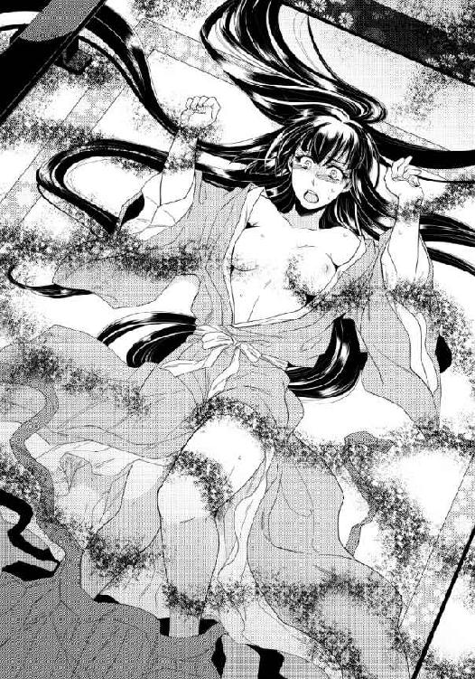
「こ、こんなっ......っや......あっ」
身体の表面全て、触れられていない場所はないかのようだった。胸の膨らみを大きく上下に揺するように揉まれながら、その先端にある小さな蕾を扱かれる。首を撫でるもの、脇腹を擦るもの、いたずらに耳の孔やへそに入るもの、それぞれが自由に真白の身体の上を這いまわる。
こちらに受けた刺激に反応する間に、また別の場所に違った感覚を刻まれ、気持ちも身体もまるでついていけない。頭がおかしくなりそうになる。
「やめて......やめっ......あ」
本来ならば一つ一つ順を追って徐々に慣らされるのかもしれない全身への愛撫を、無数の手から一度に与えられ、気が狂いそうだった。絶え間なく全身が総毛立つ。震えが止まらない。
「いやっ......や、あっ......」
まるで玩具のように身体を縦横無尽に弄ばれ、眦から涙を零しながら、いくら懇願しても通じる相手ではないと真白は実感した。ならばどうにかしてこの状態から逃れるしかないが、手も足も固定されており、身体の中央にも何か大きなものが圧し掛かっている感覚がする。身動き一つ取れない。呼吸を継ぐのでさえ苦しく、助けを呼ぶ声も小さく途切れがちになる。
「誰か......誰か......！」
夢の中で幾度となく自分がそうしたように、また一度はうなされている自分の声を聞きつけて須王が踏み込んできてくれたように、誰かが助けにきてくれ、この状態から解放されることなどあり得るのだろうか。
絶望的な気持ちで、真白は両膝を立てた脚を大きく左右に割り開かれた。──あの夢のように。
誰にも見られたことのない、ましてや触れられたことなどない場所に指のようなものを伸ばされる感覚に震え、きつく瞼を閉じ、唇を噛みしめる。
（いやあっ！）
絶望に打ちひしがれながら耐え難い現実を受け入れようとした時、御帳台の据えられた母屋へと通じる廂の妻戸が、軋んだ音をたてて開かれた気配がした。
息つく間もない全身への愛撫は止むことなく、大きく開かされた脚の間に感じる何かの気配にも気が気ではないのに、御帳台へと何者かが近付いてくる様子も真白は敏感に感じ取っていた。
（何故？ ......誰？）
助けを求める自分の声が届いたのだろうか。ここは神域であるのに、そこへと踏み込むことに躊躇いはなかったのだろうか。母屋の外で命婦たちは見張っていなかったのだろうか。
どの問いにも答えを見出せないでいるうちに、足音は御帳台のすぐ前にまで迫る。
それは真白に乗り掛かっている目には見えない何かのように実体がないものなどではない。明らかに生身の人間と思われる者が御帳台の簾を巻き上げ、几帳を押し退け、真白が仰臥する場へ踏み込んでくる。
「真白！」
「あ......」
期待半分絶望半分で頭に思い描いていた人物が、実際に目の前に立ったと自分の目で確認し、真白は潰れたような声を喉の奥で発した。
「須王様！」
御帳台の中に須王が踏み込んできた瞬間に、真白を押さえつけていた重みも手足を拘束していた手も全てがどこへともなく消え失せたが、彼女は今それにすら気が付いていない。
一番見られたくなかった人物の前にあられもない姿を晒し、恥ずかしさと悲しみのあまりに心が引き攣る。
「見ないで......見な......でっ......」
自由の利かない四肢では手で身体を覆い隠すこともできず、大きく開いたままの脚を閉じることもできず、ただ大粒の涙をポロポロと零し、悲痛な声で哀願する。
「真白！ どうしてこんな......」
傍らに膝をついた須王が半裸の身体を抱き上げても、真白は力なくその腕の中で身を捩るばかりだった。
「見ないでくださ......見ないで......」
泣き続ける真白の身体を強く抱きしめ、濡れた頬に須王が己の頬を押し当てる。
「見ていない。私は何も見ていない、真白。だから心配しなくていい。怖がらなくていい」
心に染み入るような声音で優しく囁きかけられ、真白が微かに顔を上げた時、唇に何かが重なった。
「んっ」
恐怖に乾ききってしまっていた真白の唇に潤いを取り戻させようとでもするように、離れては重ねてを何度もくり返すそれが、須王の唇だと思い当たり、心臓を握り潰されたような気持ちになる。
（どうして......須王様？）
取り乱した真白を落ち着かせようとしてくれているのだとはわかっても、平静には受け止められない。
須王と口づけを交わしている------そう思うだけで胸の鼓動は速くなり、身体からは力が抜けてしまう。つい縋るように、彼の衣の袖を握りしめた。
抱きしめてくれる腕がいっそう強くなり、重なる唇も激しさを増す。恐怖の感情も悲しみの感情も全て真白の中から消し去ろうとでもするかのように、情熱的に唇を重ねられ、心も身体も蕩ける。
ただ唇を重ねあうだけでも初めての経験であったのに、開いた口の隙間からお互いの舌を求めあって絡めあうような激しい口づけも、むしろ真白は積極的に受け入れてしまった。身の毛もよだつような怖ろしい体験の直後で、普段はあれほど取り繕っている表向きの顔が、すっかりどこかへ吹き飛んでしまっている。
須王のためにとあえて彼を遠ざけ、頑なに背を向け続けていた仮面が剥がれ落ちてしまえば、後に残るのはいつの時も変わることのなかった彼への想いばかりだ。
------他には何もいらない。ただこの人の傍に居られれば。
ましてやもう彼に会うことも適わないだろうと覚悟したその時、怖ろしい化け物に純潔を散らされる直前に救われ、いたずらに高まったままの身体の熱が災いし、火の点いた情熱にも歯止めが利かない。
------触れるのも触れられるのも他のものではいや。この人でなければ。
「んっ......んんっ......う」
口角から泡立った唾液が漏れるほどに激しく舌を絡めたまま、須王の手が真白の胸の膨らみに伸びてくる。掴みあげられても恐怖の感覚しか湧かなかった先ほどとは違い、大きなてのひらの中で柔肉を優しく揉まれる感覚が心地よい。
「んっ......ん」
それでも恥ずかしいことには変わりなく、真白が身を捩って逃げようとすれば、肩に僅かに掛かったままの小袖のいっそう奥まで手をさし込まれる。背中を上下に撫でられ、煽られた感情のままに真白は両腕を広げて須王に抱きついた。
「うん......っあ」
唇を離れた須王の唇が、真白の首筋を辿る。肩から滑り落とされた小袖は両腕から抜かれ、真白は須王の腕の中で、何も身に着けていない生まれたままの姿にされる。ゆっくりと茵の上に横たえられ、その上に須王も身を屈めてくる。
つい先ほどまで怖ろしい何かに押さえつけられていた御帳台の中で、瞼を開けば自分を見下ろすようにして須王の顔があることが、真白には未だに信じられなかった。
手を伸ばし頬に触れると、同じように頬に手が伸ばされる。しかしそれは真白の柔らかな頬を撫でるにとどまらず、そのまま首筋から胸元へと下り、豊かな胸の膨らみを再び掌中に収める。
「あっ......」
熱い吐息が漏れるのが恥ずかしく真白が顔を横向けると、てのひらに力が込められた。
「あっぁ......」
決して痛くはないほどの強さだが、強弱をつけて、胸を大きく上下に揺すられる。そうかと思えば指が食い込むように握られ、柔らかな膨らみが彼の意志のままに淫らに形を変える様を感覚で身体に刻まれる。
「あんっ......は、あ......」
自分の上に馬乗りになった須王に、両の胸を揉みあげられている姿などとても直視できず、顔を横に向け続けていた真白だったが、一瞬正面を向いた瞬間に再び唇を重ねられた。
先ほどのように深く舌を絡ませあったまま、ますます淫らに乳房を揉まれる。
「んっ......ん、っあ」
豊かな膨らみの頂点にある小さな蕾を指と指の間に挟まれ、扱きあげられた。そこをきつく摘まれる度に、胸だけではなく身体全体に得も言われぬ感覚が広がる。
小さな蕾は須王に触れられる度に、ますます硬くしこり、指の腹で押し潰すように捏ねられ、指先でつま弾かれ、痺れるような快感に真白は首を打ち振って悶えた。
「っはぁ......っん、ああっ」
離れた唇を須王はそのまま真白の胸へと落とし、甘い疼きの元となっている先端の蕾を舌でねっとりと包み込む。きつく吸い上げられ、真白は背中を弓なりにしならせる。
「やっあ、あああっ！」
背中と茵との間にできた隙間に腕をさし込まれ、そのまま須王に上半身を抱き上げられた。宙に浮かされた格好のまま胸に顔を埋められ、白い乳房も先端の薄桃色の突起も、余すところなく舐められ吸い上げられる。彼の唇が触れた白い肌には、赤い跡が点々と残った。
「あっ......あ......」
愛しい人の腕の中で快感に身を委ね、真白は身体をくねらすばかりだ。
ここは神域。神を祀る祭壇を前にしての情事などとうてい許されることではなく、今すぐ自分たちには神罰が下るかもしれない。そうでなくとも誰かに知られれば、神への冒涜とみなされ、真白は『斎姫』の任を解かれるばかりか二人共に厳しく罰せられるだろう。
そうとはわかっていても他のものに蹂躙されそうになって初めて思い知った自分の本音を、せめて一生に一度思うがままに貫きたいという欲望に抗えない。
触れられたいのは須王にだけ。全てを捧げたいのも須王にだけ。その想いをこのまま遂げてしまおうと、情熱に身を任せそうになる心理の裏側で、このままでは須王を己の身勝手に巻き込み、不幸にしてしまうという危惧が頭を過る。
今ならばまだ引き返せる。今ならば須王だけは救うことができると自分の心に言い聞かせ、真白は必死に言葉を継いだ。
「須王......さまっ......もうっ、あ」
胸元に顔を伏せていた須王が乳房の先端を口に含んだまま、上目づかいに真白の顔を見上げる。口の中でころころと乳首を転がされる感覚に唇を震わせながら、真白は懇願する。
「もう......おやめになって......っああ」
ひときわきつく乳首を吸い上げられ、大きな悲鳴を上げさせられてから、反対の乳房を鷲掴みにされた。
「何故だ？ 今更やめるつもりはない」
胸の先端を口に含んだままきっぱりと言い切られ、更なる刺激に真白は肌を戦慄かせる。
「ですが、これ以上はもうっ......ん」
やわやわと乳房を揉んだ手がそのまま脇腹を下り、大きく広げられたままの真白の脚の付け根近くにまで迫る。
「こんな状態になっているのにやめるのか？」
濡れそぼっている部分を下から上に撫で上げられ、真白は喉の奥でひっと悲鳴を上げた。
慌てて脚を閉じようとするも須王の手によってますます大きく開かされ、泉のように愛液を溢れさせている箇所が外気に晒されてひんやりと冷える。須王の指は濡れた割れ目をなぞり、それをぬちりと開いて真白の胎内にまで侵入してきた。
「ダメです......そこはっ......っあ」
これ以上許しては取り返しのつかないことになると、真白は力の入らない身体で必死に逃げようとするのに、須王はその腰を掴んで難なく自分の方に引き寄せる。
ぐちゅぐちゅと淫猥な音を響かせながら秘所を暴かれた真白は、まだ何も受け入れたことがない膣道に指を突き入れられ、濡れた襞を強引にかき分けられた。
「やめっ......や......もう......ああっ」
「いやなはずはない。いやならばこのように濡れたりなどしない、ほら」
指を前後に出し入れされ、真白はつま先までぴんと足を突っ張らせる。
「やっ、ああっ、あああっ」
自分は今、信じられないような場所に指を挿入れられている。初めての異物感に戦慄く襞を慣らそうとでもするかのように、須王が何度も出し入れする指が、得も言われないような感覚を真白の身体に刻みつけていく。
「こんな......こんなっ」
逃げようとする身体は再び腰骨を掴んで引き摺り戻され、いよいよ奥まで指を咥え込まされた。指先を曲げられ掻くようにして襞を擦られる。そうかと思えば執拗に指全体を膣襞に擦りつけられる。指は一本から二本に増え、隘路を広げようとするかのようにそれぞれが意志を持って艶めかしく動く。
「あんっ......あっ、あ」
身体の奥深くから熱い液体が滲み出し、須王の指を伝って胎外にかき出されていく感覚をまざまざと自覚させられた。流れる愛液には空気が混じり、蜜壺の中でじゅぼっじゅぼっと信じられないような淫らな音が生まれている。
「やっ、いやあ......ああ」
己の身体の変化が信じられず、淫音を打ち消そうとするかのように声を上げる真白の唇を、須王がもう一度唇で塞いだ。そうしておいてわざと蜜壺をかき混ぜる指の動きを大きくする。
「んっ、んんんっ......っああ」
しんとした辺りの空気を震わせ、恥ずかしいほどに淫らな音が響いた。ぐちゅぐちゅという淫音を耳にしているだけで、真白は腰から力が抜けて身体の奥が痺れたようになる。
わざとその音を聞かされ耳を犯されることで、自分がますます胎内を濡らしてしまっていることはよくわかっていた。閉じようとしていた脚さえも、いつの間にか須王の前に大きく開いてしまっている。そうしておいて中央に指を突き立てられ、身体を震わせてよがってしまっているのだ。
何に遮られることもなく縦横無尽に出し入れされる指が、いっそう激しく速くなる。
「うんっ......んんっ......ん」
声を上げることもできず敏感な器官を嬲られ、身体の奥底から湧き上がってくる不思議な感覚が堪えきれない。四肢に力が入り、突っ張るように緊張させた頂点で、まるで何かが弾けたかのような感覚が膣奥から頭先までを一気に貫く。
「んんんっ......っあ、あああ」
ビクビクと引き攣ったように蜜壺が痙攣すると同時に四肢にも力がこもり、身体が勝手に弓なりにしなった。かと思うと次の瞬間には谷底に突き落とされたかのような感覚に襲われ、もう指一本動かせないほどの虚無感に囚われる。
「あ......あ......ぁ」
唇は既に解放されていたが、真白は喘ぐように胸を揺らし短い息を繋ぐことしかできなかった。蜜壺の中は蕩けそうに熱く、不規則な収縮をずっとくり返している。
身体の奥で不思議な感覚が弾けたと思った瞬間に、堰を切ったように愛液も胎外に溢れだしたように感じたが、それをどうすることもできない。秘めたる部分をしとどに濡らし、須王の下に力なく横たわるだけ──。
須王は蜜壺に指を挿し込んだまま、脱力する真白の上に上半身を重ねてきた。熱っぽい声で耳元に囁きかけてくる。
「もっとよくしてやる」
言い終わるが早いか指を引き抜かれ、ぱっくりと口を開けたままの濡れた秘所に、熱くて硬いものが押し当てられた。
「あっ、いやあ！」
いつの間にか袴をずらして己のものを取り出していた須王に、そのまま押し入られそうになり、真白は力の入らない両手を必死で動かして抗う。
「いけません、それだけはっ！」
蕩けそうに熱くなっている秘所に、同じように熱い陽物を押し当てられ、表面を嬲るように何度も前後に揺らされる。
「何故だ？」
つられて自ら腰を動かしてしまいそうになる衝動を必死に堪え、真白は激しく首を左右に振った。
「私はっ......神に仕える『斎姫』で......ここは、祈祷を捧げる神殿で......っ」
「そこで今何をさせられるところだった？ わからなかったのか？」
胸の先端を指先で摘まれながら問われ、真白は再び頭を振った。
「わかっております......ですがそれが私の務めで......」
「務めであるなら得体の知れないものにも身を任すというのか？」
「............！」
痛いほどに蕾を摘み上げられ真白は顔を歪めたが、須王の言葉の方が胸に痛かった。
決してそうではない。目には見えないものに襲われた時、真白は真っ先に須王のことを思った。この身を委ねたいと思う相手は後にも先にも彼しかいなかったのに、気持ちに正直になれなかったことを悔やんだ。
しかし冷静になって考えれば、神に背くような行為に須王を巻き込み、それでもし彼が不幸に見舞われたならば、その時こそ真白は悔やんでも悔やみきれないだろう。
だからせめて最後の一線だけは越えずにいようと懇願するのに、須王は聞き入れてくれない。
「いやだ。そなたを他の者には触れさせたくない。私以外のものに身を捧げるのが務めだと言うのなら、もうそれができないように、今ここで私がそなたの身を穢してしまおう」
両脚を須王の肩にかけられ、自然と持ち上がった腰に狙いを定めるように、再び熱い楔がその場所に押しつけられた。
「いけません、おやめくださっ......ああっ」
真白の制止の声を無視して、須王が腰を進め、剛直の先端が濡れた入り口を割る。
「やめっ......や......あ、ああっ」
「やめない」
真白が拒めば拒むほど須王は狂気じみた独占欲に駆られるようで、狭い膣道を硬い楔で半ば強引に押し開いてくる。
「ダメっ......もうっ......あ！ あああ！」
耐え難い激痛に真白は涙を零し、華奢な身体を震えさせるのに、その身体を征服することに執念を燃やす須王は、情け容赦なく己の欲望を真白の胎内に突き入れていく。
「ああっ、あああっ」
最奥に突き当たり、もうこれ以上ないほどびっちりと熱棒で胎内を埋め尽くした状態で、須王はようやく真白の両脚を肩から下ろし、痛みと恐怖に震える身体を抱きしめ直してくれた。
「真白、辛いか？」
本音を言えば、真白は痛く苦しかった。しかも神域で須王と身体を繋げてしまった罪悪感でいたたまれないような気持ちである。しかしその中にも微かに、愛する人に純潔を捧げた喜びのような感情が混じっている。
これは確かに神に背いた行為で、自分はこれからどのような目に遭うのかを考えれば、怖ろしいことに違いない。しかしたとえどういう運命が待ち受けていようとも、真白が初めてを捧げたのは須王──その事実と彼と一つになれたこの時を忘れなければ、心ばかりは常に強く持てる気がする。
散々拒んだにもかかわらず無理やりのように奪われた行為であったのに、不思議と真白の中に怒りの感情はなかった。その思いのままに彼の背に腕を廻す。
「大丈夫......です」
「真白......」
須王ももう一度抱きしめ直してくれる。胎内に受け入れたままの彼の剛直が中を突き上げ、真白は小さな悲鳴を上げた。
「っ......あ」
「痛いか？」
心配げに顔を覗き込まれるので、今度は正直に頷く。
「はい」
「ならば、忘れさせてやる」
唇を重ねられ、深く舌を絡められた。須王とそういう行為を行ったのは正真正銘今日が初めてであったのに、真白の中では既に口づけに対する躊躇いはなくなりつつある。
求められるままに自らも彼を求めれば、その行為に夢中になり、下半身の疼痛も忘れられる。
そう思った刹那、膣襞が蠢動してしまい、その刺激で自ら大きく肌を戦慄かせた。
「っ......真白......」
胎内に入ったままの須王もその動きを直接感じたらしく 熱い吐息を漏らしながら剛直の根元を真白の入り口に擦りつける。
「あっ......あ」
回すような動きで胎内をかき混ぜられ、蕩けるような声が出た。前後に出し入れされるように動かれるとまだ痛みを感じるばかりだが、今の動きならばさほど辛くない。その気持ちが伝わったかのように、須王が二度、三度と同じ動きをくり返す。
「あんっ、あ......ぁ、須王様」
自ら強請って唇を重ね、須王の動きに合わせて真白もぎこちなく腰を動かした。じゅくっと粘着質な音が二人の結合部から聞こえ、その音が次第に大きく卑猥になっていく。
「んんっ......んっ......あ」
貪るように唇を求めあうと同時に、結合部も緩やかに揺らす。その行為に須王がゆっくりと律動を加え始めたことにも真白は気が付いていない。
最初よりはかなり楽になった交わりにホッと息を吐きながら、口づけの心地よさに身を委ねる。いつの間にか結合部から聞こえる水音はかなり大きく、耳にするのも恥ずかしいようなものへと変化していた。
「んっ......う、んっ......あ」
耳を塞ぎたくなるような水音と共に、須王のものが真白の胎内から引き摺り出され、また深深と突き入れられる。初めは苦痛でしかなかったはずのその行為が、指を挿入れられた時とはまた違った感覚を真白の中に刻んでいく。
気が付けば背中に回した手に力を込め、須王の動きに合わせて真白も微かに腰を揺すっていた。突き入れられる度に腰を浮かせば、肉に肉をぶつけるような律動はますます激しさを増し、真白を二度目の頂へと誘い始める。
「あっ、あっ、ああっ」
舌を絡ませることができる体勢をやめ、須王が上半身を起こして本気で真白を突き上げ始めると、半開きになった真白の可憐な唇からは、甘い喘ぎが途切れることなく続いた。
「こんなっ......こんな......あっ」
髪を振って乱れてしまっている自分が信じられないとばかりに、真白は頬を赤く染めて扇情的な表情で須王を見上げる。
その顔を目にした須王はますます欲情を煽られ、我を忘れて真白の身体を揺さぶる。次第に激しさを増す行為はとどまることを知らないかのようだった。
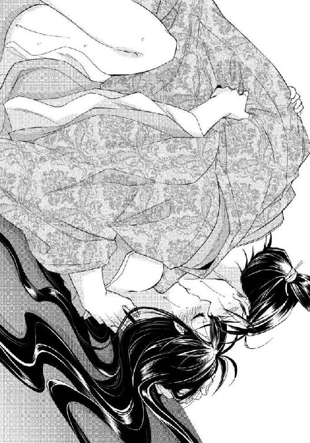
「うんっ......ッぁ......ああっ」
打ちつけられる衝撃に耐え、真白が右へ左へと首を振る。その動きは熱棒に深々と貫かれながらも尚、神前での背徳の行為を拒んでいるかのようで、須王の嗜虐心をくすぐる。
「真白」
脚を抱え上げられ、ぱんぱんと大きな音を響かせて、これみよがしに腰を打ちつけられた。まるで須王が祭壇に向かい、真白は自分のものであると宣言しているかのようだ。されるがままに身を委ねている真白は、自分が彼に征服し尽くされたことをまざまざと実感する。
しかし本当の意味での征服はまだこれからだった。
次第に速く規則的になる須王の動きが、その時が近付いていると真白に告げる。すでに男を知らない無垢な身体ではなくなってしまったが、さすがにこのまま胎内に須王の精を受けると、神の傍近くで仕えることも憚られる。
「いけません......須王様っ......っはあ」
彼がこれから何をしようとしているのかに思い当たり、真白は喘ぎ混じりではありながらも制止の声を上げた。
「それだけはっ......あっ、あぁ」
しかし逃げようとすればするほど腰を押さえつけられ、ますます須王を受け入れやすいような体勢に抱え直される。奥深くまでぐりぐりと押しつけるように、剛直を咥え込まされる。
「いや、逃がさない真白。全て私のものにする」
怖ろしい宣言の後、細い腰を掴まれ、まるで腹壁を突き破らんとするかのような勢いで容赦なく連続で突かれた。
「あっ、あっ、ああっあ」
ガクガクと身体を揺すられ、反射的に大きな声を漏らす真白の胎内で、須王のものがこれ以上ないほど大きく膨らみ、熱く滾っていることがわかる。
「ダメ......ダメっ......それだけはっ.........っは」
首を打ち振る真白を更に突き上げ、奥の奥まで熱棒を打ち込んでから、そのまま最奥で須王は熱い飛沫を迸らせた。
「全て受け入れろ、真白」
「あっ、あアア──っ、やあぁ......っ」
胎内の奥深く、びくんびくんと収斂する肉襞の間まで、余すことなく須王が放った精に充たされ、全てを彼に浸食される。
それは須王に想いを寄せる真白にとっては嬉しいことに違いないのに、神に仕える身としては、その資格を失った証に他ならない。
「ダメ......ですのに......あっ......あ、あん......っ......やぁ......」
身体を弛緩させ四肢を投げだしたままポロポロと大粒の涙を流す真白の胎内からズルリと一旦己自身を引き抜いた須王は、真白の上半身に自らの身体を重ね、細い身体をしっかりと抱きしめてからゆっくりとまたその胎内に押し入った。
「あっ、あ、ああっ」
極めたばかりで胎内が敏感になっている真白は、緩やかな挿入であっても過剰に反応し、びくびくと大きく腰を跳ねさせる。その反応すら楽しむようにゆっくりと数回出し入れする須王は、真白の中に放った精を改めて胎内に馴染ませているようにも感じられる。
注ぎ込まれた精液と真白の中から溢れた愛液の混じった液体が、未だ硬さを失っていない熱棒にかき出され、真白の胎内からとろとろと垂れ落ちる。
その感覚をまざまざと身体に刻まれながら、嬉しいのだか悲しいのだかわからない涙に、真白は泣き濡れる。文字通り欲望に塗れ、未だ須王と深く繋がったままの下半身は、とても己の身体の一部だとは信じられなかった。
「怒っているか？」
広い胸に背中から抱きしめられ、首筋に顔を埋めるようにされながら、密やかに問いかけられる。
「いいえ」
心のままに首を横に振ると、耳元で軽く安堵の息が聞こえた。
「だが恨んでいるだろうな」
温もりを背中に感じつつ真白はそっと目を伏せ、胸の前で交差された須王の腕に自分の手を添える。
「そのようなことはございません」
もう一度きっぱりと頭を左右に振った。
真白にとっては、須王に抱かれたことは喜びこそすれ悲しむようなことではない。むしろ長く想い続けた相手に思いがけず身を任せることができた、忘れることのできない幸福なひと時であった。
しかしこれまで頑なに背を向け続けてきた須王には、それがわからないだろう。無理やり事に及び、傷つけてしまったかのような心配をされるので、真白は自分から彼の腕に頬を寄せる。
「私ならば大丈夫です。でも須王様が......」
彼は神域に踏み入り、そこで祈祷を捧げていた真白を穢したことになる。
この地に祀られているのが悪しき神であるにせよ、かえってその方が神罰のようなものが下りはしないかと、真白は気がかりでならない。
真白が何を言いよどんだかに思い当たったらしく、須王が抱きしめる腕に力を込めた。
「平気だ。このような忌まわしい祈りを捧げなければならない神が、崇め奉るべき存在だとは到底思えない」
「ですが......」
不安を拭い去れない真白に、須王は当然のように言い放つ。
「京に帰るぞ」
真白にはとても同意することができなかった。
今回は祈祷の途中で役目を放り出してしまったが、だからと言って自分が卜占によって選ばれ、この地に送られた『斎姫』であることには変わりない。
ここに至るまでに執り行われた儀式、その全ては神祇官による正規の手順を踏んでおり、やりたいかやりたくないかという個人の感情だけで役を辞退できるような類のものではない。
ましてやその理由が、清廉でなければならない身をも顧みず須王に身を任せたためと知られれば、彼の身の破滅にも直結する。
「こうなった以上、やはりそなたを私の妻にする」
耳元で囁かれる言葉に、真白は力なく首を振った。
「いいえ......それはやはり無理です」
「真白！」
「私が悪いのです。私のために須王様に犯させてしまった罪を償うためにも、やはり私はこのままこの地に残り、神に祈りを捧げる生活を送ります。清らかな身でなければ祈ることさえ許されないようでしたら、その時は......」
京に戻って罰を受け、仏門に入るしかないという決意を口にする前に、抱きしめる腕に更に力が込められた。
「そのような必要はない！ どうしてそなたがそこまでしなくてはならない！ 罰ならば私が受ける」
怒りと悲しみが混じった声に胸を痛めながらも、真白は懸命に腕の中で身体を捩る。
「いいえ。悪いのは全て私です！ 須王様には何の咎もありません。だから今宵のことは忘れてください。どうか......！」
「真白！」
二人のお互いを想う気持ちが強ければ強いほど、どれほど言葉を戦わせても結論は出ない。力任せに真白の動きを封じ、そのまま連れ去ってしまいそうな勢いの須王だったが、何度も抵抗にあい仕方なく腕の力を緩めた。
長く寄り添い続けていた身体の温もりがふいに遠退き、自ら遠ざけたにもかかわらず真白はそれを悲しく思う。
「わかった」
真白から離れその場に立ち上がりつつ、須王は静かな声を発した。
「ならばここに祀られているのは神などではなく、そなたが縛られる必要はないという事実を証明する。そして改めて迎えに来る」
「............！」
思いもかけない言葉を耳にし、真白は驚いたように須王を見上げた。このような時でさえ、強い信念に裏打ちされた自信に溢れる顔を、胸震えるような思いで見つめてしまう。
「そなたは言い出したら聞かないからな」
それは須王の方こそだと真白は思うのだが、須王の目にはどうやら真白もそういうふうに映っているのらしい。
「だが無理はするな。しなくていい。私の助けが必要になったならいつでも呼べ。たとえどこに居ても、すぐにそなたの許へ来る」
「そのようなこと......」
こうして何度真心を示されても、危機を救ってもらっても、真白には須王を拒むことしかできない。それなのにまた助けばかり望むなどあまりにも身勝手すぎる。もう二度と顔を合わせないことこそ正しいと思うのに、須王は声に力を込めて何度でもくり返す。
「いいから呼べ。必ずだ。知らない間にそなたを失うことを、私が最も恐れているのだと忘れるな。いいな、必ずだ」
しかしたとえ真白が呼んだとしても、すぐに駆けつけるなどということは不可能だ。
気休めの約束のようなものとして真白は須王の言葉を受け止めたが、どうやら彼にとってはごく真剣な誓いであったらしい。
「そなたの声はどこに居ても必ず私には聞こえる」
ふざけている様子など微塵も感じさせないごく真剣な顔でそうくり返されるので、不思議な気持ちになる。
そういえば須王は、これまでにも真白が来てほしいと思った時にはよく駆けつけてくれた。気持ちが落ち込んだ時、怖ろしい夢にうなされた時、初めて出会った時のように自覚もないままに心のどこかで願っていた時などにも必ずだ。
「聞こえるのはそなたの声だけだ。そなたが先のことを夢に見るように、誰にも説明のつかないようなことが、この世には他にもいくつもある。そういうことだ」
偶然なのか、須王の言うように不思議な力なのか。判断はつかないままだったが、自信に満ちた須王の言葉を、真白も信じてみたくなった。
それにもし本当に自分と須王の間にそれほどの深い縁があるとするならば、それだけでも嬉しい。
「はい......わかりました」
ほんの数刻前まで深く身体を繋げあっていた相手とは思えぬほどの距離を取り、闇にも近い中でしっかりと視線だけを結び合って、それで誓いの約束とする。
「また来る。じゅうぶんに気を付けろ」
これまでと同じ言葉を残し、雑草の生い茂る前庭に分け入って行く須王の背中を見送りながら、真白は深々と頭を下げた。
「はい」
今度こそ離れなければと決意したが、今宵もかなわなかった。須王に会う度、自分の浅ましさと内に抱える醜い感情を思い知るばかりだというのに、これで今生の別れにならなかったことを、やはりまたどこかで安堵している。
「どうぞ、あの方だけは......」
祭壇の方へと向き直り、真白は低く頭を垂れた。ここに祀られているというあの化け物のような神が、祈祷を成就できなかったことに対してもし罰を下すのならば、どうかその対象は自分だけにしてほしい。須王を巻き込みたくない。
「須王様だけは......」
本当に願いを叶えてくれる神なのかわからない存在にでも、祈るように願わずにはいられなかった。
「どうやら首尾よく御祈祷は済まされたようですね」
翌朝、脱がされていた小袿と緋袴だけはなんとか自分で身に着けたものの、それ以上はもう衣を整える気力もないといった様で御帳台の中に力なく横たわる真白の姿を確認し、命婦は口の端を吊り上げて笑った。
「............」
何も返事をしない様子も命婦にとっては当然の反応だったようで、ぐったりとした真白は大柄な二人の女房によって御帳台の中から運び出される。
「『斎姫』様の祈祷は必ずやお一人きりで。他の者が居ては荒神様の怒りに触れてしまうので、確認できないことは歯痒い限りですが、これは『斎姫』様にしかできない大切なお役です。お疲れさまでした。どうぞ後はゆっくりとお休みください」
目には見えない存在に散々に弄ばれたのだろうことを揶揄して、命婦は真白にそう告げたと思われる。それは真実ではなかったが、実際に須王との行為とその前後の心労で疲れきっていた真白は、牛車に揺られて帰るうちにうとうとと眠りに落ちてしまった。
目覚めたのはそれからほぼ半日が過ぎた夕刻、もう一日も終わろうかという時分で、枕辺で誰かが言い争う声を耳にし、ようやく重い瞼を開いた。
「だって、黙っていられるわけないじゃないの！ 私たちの知らない間に姫様を酷い目に遭わされて！」
「でも姉様、まだそうと決まったわけじゃないから......」
「そうに決まってる！ こんなにやつれてしまわれて」
「姫様......」
何かに憤っている声が常葉、それを止めつつも涙ぐんでいる様子の声が早代だと聞き取り、茵に横たわる自分には背を向けている格好の二人に、真白はそっと声をかけた。
「常葉、早代」
はっとしたようにこちらをふり返った早代の瞳は完全に涙に濡れており、目が合った常葉も吊り気味の細い目にみるみる涙を浮かばせた。
「姫様！」
にじり寄ってきた二人に対峙しようと、真白は身を起こそうとした。けれども身体の節々が痛み、思うように動けない。須王に無理をさせられたからと思い出し、心なし頬を赤らめながらようやく起き上がった。
常葉と早代はまるで壊れ物にでも触れるかのように、恐る恐る手を差し伸べてくる。
「大丈夫ですか、姫様」
「無理はなさらないでください」
悲愴感の漂う二人の表情に首を傾げながら、真白はひとまず「大丈夫よ」と答えた。
初めての経験は無垢な身体には確かに辛かったが、二人に青い顔をしてこれほど心配されるような傷を負ったわけではない。それに身体の奥に残る疼痛と異物感には辛いよりも恥ずかしい気持ちの方が大きく、誰に知られたはずもないのに、誤魔化そうと必死になる。
「それよりも今日はごめんなさい。ここに来て初めての日だったのに、私一日を寝て過ごしてしまったのね」
軽く頭を下げる真白に「いえ」「そんな」と口々に答えた常葉と早代は、共に何かを胸に秘めた様子で、しばらく視線だけで意思の疎通を行っている。
そのうち意を決したように常葉の方が口を開いた。
「姫様、実は昨夜のうちに初めての祈祷をもう済まされたのだと、命婦さんから話は聞きました。姫様のように若くて清らかな娘が夜にしかできない祈祷だとも......命婦さんは意味深に笑うし......姫様はすっかり疲れきって眠り込んでおられるし......その......手に......」
「手？」
常葉が言い難そうに言葉を濁しながら視線を向けた先に真白も目を向け、軽く息を呑んだ。真白の細い手首には、くっきりと何者かの指の跡が付いていた。
「足も......」
「あ！」
言われるままに確認してみれば、両足首にも同じような跡が付いている。
目には見えない何かに力ずくで押さえ込まれた時のものだと真白はすぐに思い当たったが、それを常葉たちにどう説明していいのかわからない。
「あの......」
言葉に詰まる真白の様子を早合点し、常葉がきりっと表情を引き締めてその場に立ち上がった。
「やっぱり私、命婦さんに抗議してきます！」
「私も！」
早代までも後をついて立ち上がり、そのまま塗籠を出ていってしまいそうな勢いだ。真白は慌てて二人を呼び止める。
「常葉！ 早代！」
昨夜の須王との思いがけない出来事を、恥ずかしいからと二人に隠している場合ではない。その前の怖ろしい体験も含めてきちんとした説明をしなければ、主人想いの二人が今度は危険な目に遭うかもしれない。
「実は昨夜......」
覚悟を決めて語り始めた話は、全てを伝え終わるのに長い時間を要した。
そして伝え終わった後も、話す前と同じようにやはり常葉は憤り、早代は瞳に涙を浮かべた。
「やっぱり！ 祈祷っていうのは怪しげな儀式だったんですね。よりによって姫様をそんなものに捧げようだなんて！」
つい大きな声で叫んでしまう常葉を落ち着かせるのは、真白にとってはなかなかに骨の折れる仕事だ。それに対し──。
「よかった......本当によかったですね、姫様」
駆けつけてくれた須王に危ないところを救われ、そのまま彼と結ばれた経緯を伝えると、早代は自分のことのように喜んで涙を流した。
「お互いにあれほど想いあってらっしゃったんですもの......！」
指先で涙を拭う早代を、真白は思わず両腕で抱きしめる。
「ありがとう、早代。常葉も」
こぶしを握りしめたままの常葉にも心から礼を告げた。
須王の立場や未来ばかりが気になり、自分の気持ちを押し殺している真白のことを二人はずっと見守ってくれている。もどかしい思いもあるだろうに真白の意志を尊重し、決して口は挟まず、それでも陰ながら幸せを祈ってくれていることは痛いほどにわかっていた。
共に生きる決意をしたわけではないのだが、真白が須王と結ばれたことをどれほど嬉しく思ってくれているのか。それは早代のみならずいつもは強気な常葉さえも、また瞳に涙を浮かべたことでも明らかだ。
「母様と兄様にもお伝えしなくては！ きっとみんな大喜びです！」
今にも山裾に文を送ってしまいそうな早代に、真白は待ったをかけた。
「待って！ だけど......」
自分は神に仕える『斎姫』であり、その任に背いて須王に身を任せたことには変わりない。これは決して公にして祝うようなことではないのだ。それにこれから須王と一緒になるわけでもないのだとくり返す真白の言葉に、常葉は首を傾げた。
「それで、宮様はどのようにおっしゃっているのですか？」
「それは......」
この地に祀られている神について調べ、真白が仕える必要などないと証明し、それから改めて迎えに来るという彼の昨夜の決意を伝えると、常葉はもっともだとばかりに頷いた。
「そうでしょうね。枕を共にされた以上、どんな障害があっても、もう宮様は絶対に姫様を諦められることはないと思います。まあ元々そうですけど......」
「常葉......」
須王のそこまでの想いを、嬉しい反面困ったように感じてしまう真白には、常葉ほどには喜んで受け止められない。
「無理をされるのではないかしら......」
それこそが一番心配だと表情を曇らせると、早代が衣の袖をそっと引いた。
「だったら姫様、私たちの方でも少し調べてみませんか？」
「え？」
「以前の『斎姫』様の記録とか......この地にこそ残っていると思いませんか？」
「あ......」
須王がどこから情報を得ようとしているのかはわからないが、確かにこの地にこそ多くの手掛かりが残っているのかもしれない。それを得ることで須王の危険が少しでも減るのならば、ただ彼の身を案じているばかりよりもよほどいい。
「そうね。私の方でもできる限り情報を集めてみましょう」
それが須王の予想したような結果であったとしても、なかったとしても、なんらかの結論が見られればそれで彼の気は済み、真白との関係にも否応なく一つの区切りがつくはずだ。
その時に自分はどのような決断を下すのか、真白には今はまだ彼と共に歩く未来などまったく想像もつかないが、この地を離れ、また京の外れのあの山裾の穏やかな日々に戻れるのならば、もちろんその方がいい。
「二人とも手伝ってくれる？」
「はい」
「もちろんです」
常葉と早代の答えに、真白はようやく長く強張らせていた表情を和らげた。そして決意も新たに、『斎姫』の情報を集めようと翌日から秘密裏に動き始めた。
第三章 祀られしもの
『斎姫』に準備された邸のうち、西の対は真白のための住居となっており、近しい存在である常葉と早代もそこで共に生活している。
渡殿を通った先にある寝殿は来客があった際に使う正殿であり、普段は使用されていない。更に渡殿を進んだ東の対は、廂部分を細かく区切り、東宮に付けてもらった女房たちの曹司としていた。中でも命婦は、最も奥まった北廂の一画を私室として使っている。
「これまでの『斎姫』についてでございますか？」
その日、真白から突然の訪問を受けた命婦はいかにも不審げな対応をしたが、その要求を耳にするとなおさら訝しげな顔となった。
この姫は突然何を言い出したのだろうとでも言いたげに首を捻り、真意を探ろうとするかのように真白の姿を頭の先から足の先まで繁々と何度も見直す。見られている真白の方はあまりいい気はしなかった。
「はい。皆様どのような心構えで祈祷に臨んでおられたのかが知りたくて......」
「ああ」
理由を聞いてようやく腑に落ちたらしく、命婦はいつもの表情に乏しい顔へ戻った。それをそのまま真白に向ける。
「それでしたら、十五年ほど前の『斎姫』様が残された書がございます。それ以外の方は何も......なにしろお勤めを果たされたらほとんどの方がその後......」
曹司の隅に置かれた文机の隣で、硯箱の中を漁りながら滔々と語り続けていた命婦は、そこではっとしたように口を噤んだ。口が過ぎたとでも言いたげに文机の上から取った扇で口元を隠しながら、古い料紙の束を真白に渡す。
「これですか？」
「ええ、そうです」
真白は神妙な面持ちで丁寧にそれを開いた。中から現れたのは上下も左右も関係なく、紙いっぱいに自由に書き散らされた文字群だ。
「これって......」
どれも意味の通じる文ではない。しかし記された文字の中には、おそらく同じ経験をしただろう真白だからこそ胸に痛く響く語句もある。
──『お願い』『誰か』『どうして』
あの夜に胸を焼いた苦しい思いをまざまざと思い出し、身体が震えだしてしまいそうだった。
「ありがとうございます。少しお借りしてもいいですか？」
紙片を握りしめた真白を見つめながら、命婦は口の中でぶつぶつと答える。
「それは、まあ......別に構いませんけど......」
相変わらず、何かを含んだようなもの言いだ。実際何か真白と話したいことがあるらしく、チラチラと周りを気にしているのだが、常葉と早代が傍に居るため言い出せないでいる雰囲気がある。
真白としても、神への祈祷が実は遂行できていないことや、須王とのことに気付かれるのが恐く、あれ以来なるべく命婦とは二人きりにならないようにしていた。
守るように両隣に座ってくれる常葉と早代の存在を頼もしく思いながら、何かを問われる前に、急いで命婦の曹司を辞す。
「それでは少しの間、お借りいたします」
西の対に帰り、念のために塗籠に入って枢戸を閉めてからもう一度、十五年前の『斎姫』の手蹟であるというその書を開く。何度見てもやはり意味を成している文章は見つけられないが、その全てをひとまず違う料紙に書き写しておく。
「大変ですね」
横から覗き込んできた早代はそう声をかけてくれたが、真白は静かに頭を振った。
「大丈夫よ。元は癖のない綺麗な手蹟ですもの......ただ、やはり自分の境遇をひどく悲しんでらっしゃるみたい......」
文字からその人の人となりを読み取る能力は、ほぼ邸から出ることもなく、身の回りの世話をしてくれる女房以外とは会うこともない貴族の姫君であるならば、幼い頃からおのずと身につくものだ。
真白は特に自分も書くことが好きなので、筆跡から書き手の細かい心の襞まで読み解こうとする傾向が顕著だった。
「お可哀想に......」
常葉の呟きは、自分自身のこととして真白の心に強く跳ね返った。
「ええ」
もし須王の助けがなければ、今頃自分もこの姫のように世を儚み、悲嘆に暮れていたに違いない──。
そこまで考え、真白はふと、先ほど命婦が言いかけて口を噤んだ言葉の先がわかったような気がした。
（もしかして？）
あまりに不吉な予想なので、常葉と早代に告げることもできず、己の胸の中にだけ秘めた。
（あれほど怖ろしい体験をして、これほど世を儚んでいたなら......）
行き着く先は自ら命を絶とうという決意なのではないかと思いつつも、その考えを頭の中から追い出すように真白は何度も首を振る。
「姫様、どうしました？」
問いかけてきた常葉に心配をかけないよう、真白はいったん筆を文机に置き、笑顔をつくった。
「やっぱり疲れたわ、少し休みましょう」
「それじゃあ白湯と、何か摘むものでも準備してきますね」
塗籠を出ていく早代の後を追い、真白も常葉と共に廂まで出た。
三方を土壁に囲まれた塗籠の中は薄暗く、書写は本来ならば廂で行う方がいいのだが、極力他の者には知られたくなかったため、塗籠の中に引きこもって行っている。
暗いところで文字を綴り続けていた疲れからか、簀子から垣間見える外の眩さに目を細め、真白は小さく伸びをした。
とその時、遠くに見える庭の隅で何かがキラリと光った。
「？」
不思議に思った真白はそのまま簀子の方に向かい、常葉も後をついてくる。
「どうしました、姫様？」
「ええ」
夜は蔀戸を閉じるその場所も、今は格子と御簾という簡単な障壁でのみ、邸の内と外を仕切っている。真白は廂の端で腰を下ろし、格子の隙間から庭を眺めた。
水を引き込んで造った小さな池が広がる更に向こうで、確かに何かが陽の光を反射してキラキラと輝いている。
「何かしら？」
山裾の邸であったなら自ら確かめに行く距離だが、さすがに東宮が付けてくれた従者たちも行き来する邸の中では、簡単に庭に下りることもできない。
気になりつつも見つめ続けていると、隣に腰を下ろした常葉もどうやらそれに気が付いたようだ。
「いったいなんでしょうね？」
顔見知りになった土地の女房を介し、誰か男衆に言付けようかと言ってくれたが、真白は断った。常葉と早代以外には味方が居るのかも危ういような状況で、何をするのにもあまり他の者の手は借りたくない。
「いいのよ、気にしないで」
常葉にはそう答えつつも、実は長く気になっていた。
その夜、皆が寝静まった時分にそっと塗籠を抜け出し、真白は庭へと向かった。
月の明るい夜で、目を凝らせばかなり遠くまで見渡すことができる。これならば昼に見かけた眩い光の元が何なのか、見つけて確かめることもできるだろうと思った。
念のため袿を一枚頭から被って懸帯を垂れ結び、簡素な外出着である壺装束の格好となった。これならば万が一仕丁などに出会っても、顔は見られずに済む。
もう一つの塗籠で眠る常葉たちに気付かれないように足音を忍ばせ、簀子を抜けて階を下り、塗籠から持ってきた緒太の草履を履き、池の畔を反対側へ廻り込む。
この邸に来てから庭に下りたことはおろか、庭の造作をしっかりと見たことも初めてで、真白は改めてその手入れが行き届いている様に驚いた。
これほどよく設えられているところを見ると、やはり『斎姫』としての務めは短期間ではなく、かなり長いものになるのかもしれない。その中ではいったい何度、あの忌まわしき祈祷を捧げることになるのかと思うと、足が止まってしまうほどに気が重かった。
（だからこそ、これが本当に必要な務めなのか、私も知ろうとしているし、須王様だって調べてくださっているのだもの......）
それが上手くいき、山裾の邸に帰れる日だけを心待ちに、真白は再び歩み始める。
庭に出てみて改めてわかったことは、邸は真新しいがこの庭はそうでもないということだ。
池の縁の岩は苔に覆われており、中で泳ぐ鯉たちも大きく立派なものばかりだ。最近放たれたものではなく、かなり以前からここで飼われているのに違いない。植えられている木々も幹が太く、見事な枝ぶりのものばかりだった。
ひょっとすると邸だけ新しくし、庭などは以前のままなのかもしれないと思うと、不思議と親近感が湧く。十五年前の『斎姫』も自分と同じようにこの池を眺めたのかもしれないと思いながら見つめた先で、水面に映った真白の背後に何者かの影が迫った。
「え？」
ふり返った時にはもう遅かった。その何者かに真白は背中から抱きすくめられている。慌てて逃れようともがいたが、それをすぐにやめた。以前須王が真白の所在は香りでわかると言っていたが彼女も同じだ。その人物の衣に焚き染められた香を聞き、逃れようとしていた腕に逆に身体を預ける。
「真白？」
確かめるように降ってきた声はやはり須王のものだ。「はい」と小さく答えながら、真白は袿に隠れた頭を須王の胸にそっと付けた。
「もしやと思ったらやはりそうか。こんなところで何をしている？」
それは本来彼の方こそ問いかけられるべき言葉なのだが、須王が口にするとあまりにも違和感がない。真白もつい素直に答えてしまう。
「探し物を......」
「何だ？」
真白を腕に抱き直しながら、須王は歩み始める。当然の如く寄り添って歩きながらも真白の心は落ち着かなかった。
須王が纏う黒方に似た渋みのある甘い香は、衣に焚き染められているだけでなく彼自身からも香るのだということを、真白はつい先日知った。その香りに包まれながら肌を重ねた夜のことが思い出され、激しく脈打つ胸がどうあっても治まってくれない。
「どうした？」
いつも通りに顔を覗き込む仕草で尋ねられると、いっそ須王の前から逃げ出してしまいたくなる。
「い、いいえ」
真っ赤に染まった頬を見られないように袿を深く被り直し、真白は前方の前栽の奥を指差した。
「昼間、廂からこちらを見ていた時に何かが光っていたのです」
「何か？」
真白にそこで待つように手で合図し、須王は一人で繁みの中に分け入っていった。
しばらくしてから真白も来るようにと手招きされる。先に行って危険がないか確かめてくれたのだと思うと、その心強さがやはり嬉しかった。
前栽の先、邸の敷地の終わりとなる築地を目の前にしたその場所は、ここまでの庭とは異なる土の色をしていた。草履も微かに沈み込み、おそらく元の土の上に何かが重ねられているのだとわかる。何がと思い身を屈めてみると、ツンと焦げたような香りがした。
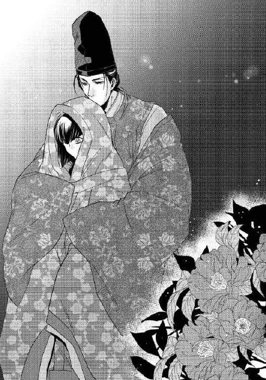
「これ......」
「ああ、何かを燃した灰が撒かれているようだな」
先にその場にしゃがみ込んでいた須王は土を指先にすくって見ているようだが、さらさらと地上に戻した後も指先が黒く染まっている。確かに灰のようだ。
「燃え残りがある。ほら」
紙の切れ端のようなものを須王は拾い上げて見せ、真白も彼の隣にしゃがみ込んだ。
「よせ、汚れるぞ」
「須王様こそ」
珍しく狩衣ではなく二藍の直衣を着て烏帽子姿も凛々しい姿を正面から見ていると、どうしようもなく胸が苦しくなるので、隣に並んでいる方がよほどいい。
須王が拾い上げた紙片に何気なく視線を移した真白は、そこに記されてあった文字をどこかで見たような気がした。
「あら？」
男性の手蹟ではない、女性の、それもおそらく若い女性のものだ。
ごく最近目にしたような覚えを頼りに記憶の糸を手繰り、今日の昼に必死で書き写した十五年前の『斎姫』の文字によく似ているのだと思い当たる。
「あ！」
「知っているのか？」
「はい......」
須王が紙片をてのひらに載せてくれ、そこに書かれた言葉を改めて確認し、真白の胸の鼓動は俄かに速くなった。
『祈祷の本当の目的は──』
その後に続く言葉が何だったのか、どうにか知る術はないかと辺りを見回す。しかし土に撒かれたこの灰が、目的の言葉が記された料紙が焼かれた跡だとするなら、知ることはもう永遠に不可能だ。
「そんな！ どうして？」
昼間に命婦から借り受けた料紙には、こういった内容の文はなかった。そもそも文章というものが存在せず、書き連ねられていたのは意味ありげな言葉の羅列に過ぎなかった。
しかし見れば見るほどその紙片に残された筆跡は十五年前の『斎姫』のものに間違いなく、とすれば命婦がこの書の方は真白に見せずに隠し持っており、今後も見せるわけにはいかないと燃してしまったのかもしれない。
「どうしたんだ、真白？」
尋ねる須王にことの経緯を語ると、真白が考えたのとほぼ同じ推測を述べてくれた。
「おそらく、そなたに見られては困る内容が書かれていたのだろうな」
「そんな......」
途方に暮れた思いで辺りをもう一度見回した真白は、須王の後ろ辺りにキラリと月光を照り返す何かを見つけた。
「あ！」
元はそれを探して真夜中に庭に下りたことを思い出し、そっと須王の袖を引く。
「須王様」
視線で示された方をふり返った須王は、灰の中からその何かを注意深く取り上げた。
「鏡？」
「そのようだな」
それは灰の中に半ば埋もれた立派な八稜鏡だった。焼け焦げた部分は鏡面が黒ずんでしまっているが一部焼け残っており、そこに陽の光や月光が当たって光っていたようだ。
「どうして？」
身支度に使うものでも鏡筥に大切にしまい、魔を払うための調度品として飾られることも多い鏡を、いったい何者が何のために意図的に焼き捨てたのだろう。
考えればそら恐ろしい答えに辿り着くような気がして、真白の背筋はぞっと冷えた。
「これは私が預かっておこう。修復できるかやってみる」
「はい」
不安の種を全て真白の眼前から取り除こうとしてくれる須王に感謝し、頭を垂れる。
長く掴んだままだった袖に気が付きはっと手を離すと、須王が苦笑しながらその場に立ち上がった。
「気になるならば、供に京に帰り、これを修復するか？」
「え？」
「そなたさえその気ならば、もうここを出ても構わないと思うのだが」
「ですが......」
『斎姫』がどのような存在で、なぜこの地に遣わされているのか、真白はまだ確かな情報を掴んではいない。聞けば須王の方も同じ状態で、ここで京に帰ってしまえばやはり真白は、朝廷から派遣されたにもかかわらず、そのお役を途中で放り出したことになってしまう。
それを唆したと須王が責められる可能性がある以上、まだ勝手に京に戻るわけにはいかない。
「私はまだ、他に手掛かりがないかこの地で探してみます」
「そうか......『本当の目的は──』と以前の『斎姫』が記しているのだから、何らかの意図があってあのような忌まわしげな祈祷が捧げられていることは確かだ。それを調べる役など、本当はそなた自身にさせたくはないのだが......」
しかし他に頼りにできる人間も居ない地で、情報を得ようと思えば真白と常葉たちが動く他はない。それは真白自身もよくわかっていることで、表情を厳しくする須王にこれ以上心労をかけないためにもさりげなく話題を変えることにした。
「須王様は、今宵はどうして急に？」
難しい表情で何事かを考え込んでいた須王が視線を下げ、真白を見つめて柔らかく微笑む。少し艶めいたその笑みはつい先日までは見たことのなかった表情で、何故と理由を考えれば俄かに真白の胸の鼓動は速くなる。
優しさと愛情に満ちたその微笑みを見つめていると、切なさと恋しさの感情の方が表立ってしまい、思わず須王の胸に頬を預けたくなるので、真白は今居る場所から動きださないように懸命に足に力を込めた。
「そなたの近くにいた方がよい気がした。虫の知らせというやつだろうか......？ とにかくそなたに関してだけは、私は自分の直感を信じることにしている。その方がおそらく、あれこれ悩んだ末に後で後悔することがない......近くに居るから、何かあったなら遠慮なく呼べ」
「須王様......」
胸の奥がどうしようもなく熱くなった。何か悪い予感がすると、ただそれだけで、京からここまで駆けつけてきてくれたのだろうか。
山も越えなければならない遠路を、馬を駆ってきてくれただけでもありがたいのに、おそらくこれから彼は、呼べば声が届くほどの場所で朝まで真白を見守ってくれるつもりだ。
せめて客人として正式に迎えられればいいのだが、『斎姫』の住まいであるこの邸に、男子を招き入れることは不可能だ。こうして庭に居ることさえも、誰かに見咎められれば大騒ぎになるに違いない。
「そろそろ邸に戻った方がいい。私を罪人にしたくないのならば......もっとも神に仕える姫を我がものにした時点で、既に罪人なのだが」
悪戯めいた表情で伸ばされた指先が頬に触れ、真白は思わず瞳を閉じる。そのまま唇を重ねられそうな気配を察し、慌てて須王に背を向けた。
「わかりました。それでは今宵何事もなく、須王様が安心して京に戻られることを願っております」
「ああ、私もできればそうであってほしいと思っている」
胸の鼓動を大きくしたまま願うように祈りながら、真白は須王と別れた。
しかし二人の願いも虚しく、真白が塗籠へと戻り、小袖姿になって茵に横になろうとした時、枢戸を開けてそこに入ってくる者がいた。
「『斎姫』様......今宵これからご祈祷でございます」
「あ......」
自分が何のためにこの地に居るのか、真白は決して忘れていたわけではない。しかし命婦の訪れは前回と同じく何の前触れもなく突然で、気持ちの準備がついていかない。
反射的に後ずさった真白をどこにも逃がすまいとするかのように、あの大柄な二人の女房が無遠慮に塗籠の中に入ってきて左右から腕を取る。
目の前まで歩んできた命婦は真白と目線の高さが合うようにその場に座ると、どこからか丸薬のようなものを出した。真白の頤を摑み、それを呑ませようとする。
「............！」
前回、命婦に渡された白湯を何気なく飲んだことで身体の自由が利かなくなった真白は、それを呑んでなるものかと顔を背けた。しかし左に控えた女房に手で鼻を塞がれ、苦しくなって呼吸を継ごうと口を開けた瞬間に、無理やり丸薬を口の中に押し込められる。
そのまま今度は口を塞がれ、吐きだすことも適わずに呑み込んだ。
「うっ......ゴホッ......ゴホ」
咽る真白に適当な袿を着せかけ、女房たちは両脇を支えるようにして塗籠から連れ出した。いかにも衣はもうどのようなものであっても、祈祷の時にはどうせ脱ぎ去るのだから構わないと言わんばかりの適当な着替えだ。そのくせ化粧ばかりは念入りに施されることが、悲しくも腹立たしい。
（いやだ......いや......）
祈祷は神秘性を高めるためにあらかじめ日時を知らせることをしないのだそうで、『斎姫』に仕える者たちにもできるだけ知られないことがよいとされているらしい。
そのため常葉たちには気付かれないように、まるで人攫いにでも遭ったかのように真白はたった一人で邸から連れ去られる。
口に布を咥えさせられ頭の後ろで結ばれて、以前と同じ糸毛車に押し込められ、畳敷きの床に転がされた。余計な声を発して他の者を起こさないためだと先に説明を受けたが、命婦の話によれば、どうやら自ら舌を噛み切る危険を回避するためでもあるらしい。
「何故か『斎姫』様におかれましては、最初のご祈祷の直後か、次の御祈祷へ向かわれる道筋に、お命を落とされることが多く......そうならないための処置です。どうぞ、ご無礼をお許しください」
口では丁寧に謝りながらも、真白を見下ろす命婦の視線は冷たい。
「最初の祈祷でよい成果が得られれば、その後の祈祷は見送られることも多いのですが、今回はまったく成果がみられないそうで、京からわざわざ督促が参りました。それで今宵、急きょ二度目の祈祷が決まったのですが......妙なこと......前回ちゃんと祈祷を捧げられましたのに」
遂行できていない前回の祈祷のことを思い、真白は表情を強張らせた。その顔を正面から見つめ、命婦は事実を探ろうとしているようだ。
須王のためにも真実を知られるわけにはいかないと、眼差しに力を込める真白から顔を背け、命婦は大きく息を吐く。
「まあいいでしょう。どちらにしても今宵また祈祷を捧げていただき、阿敷の神様に今度こそお力を貸していただけるのでしょうから」
牛車は神宮内に入ったようで、相変わらず道が悪く、床に転がされた真白は右に左にと大きく身体を振られる。前回はこの時点でひどく気分が悪くなり、牛車から降りる頃には自分で歩くこともままならないほどだった。
しかし今回はそれを上回る身体の変化で、おぞましさのあまり涙ぐまずにはいられない。
（助けて......）
身体が熱くて堪らなかった。身に着けた衣を早く脱ぎ捨ててしまいたい衝動に駆られる。熱は身体の外だけではなく内から溢れてくるようで、肩を大きく震わせながら息を吐かなければ苦しいほどだ。
「んっ......んぅ」
言葉を封じられたまま、熱い吐息を漏らす真白の姿を嬉しげに見下ろし、命婦がその首筋に指を伸ばした。
「薬が効いてこられましたか？」
うなじに軽く触れられただけの行為が身体を跳ねさせるほどの刺激となり、真白の肌を大きく戦慄かせる。
「んふ......っう」
封じられた口から漏れる艶めかしい声を耳にし、命婦は満足げに唇の端を吊り上げて笑った。
「それほど先に身体を昂められていれば、ご祈祷も奉仕するばかりでなくご自分でもお楽しみいただけるやもしれませんよ。もっとも感度が良すぎて、気が狂ってしまわれなければの話ですが......」
真白の人格を無視してまるで物のように捧げるのは前回と同じだが、今回は更に抵抗する気まで最初から削いでしまおうとしているらしい。気持ちは逆らっても身体は受け入れるなど屈辱でしかないのに、楽しむなどできるはずがない。
真白の意志などまるでないもののように、勝手に薬を投与され、小袖姿に衣を脱がされ、御帳台の中に運び込まれる。これではまっとうな祈祷など捧げられるはずもない。完全なる生贄だ。
例の祭壇がある場所に連れて行かれても、前回ほど得体の知れない恐怖は感じなかったが、これから自分がどのような目に遭うのかわかっているからこそ、身体の震えの方はまったく治まらなかった。
口を封じた布を取り去ることもなく、茵の上に真白を転がした命婦と二人の女房たちは、念入りに御帳台の中の設えを整え始める。
「ん......んんっ」
せめて口に噛ませた布を取り払ってはくれないかと真白は懸命に出ない声を振り絞ったが、一顧だにされない。
「祈祷の途中で不幸にも命を落とされた『斎姫』様もいらっしゃいますので、御身の安全のためにもそのままにさせていただきます」
冷たく言い捨てた命婦の言葉を、真白は絶望に近い気持ちで聞いた。
こうなることを予感したからなのか、須王が京から駆けつけ、今宵は近くに控えていると約束してくれたのに、口を塞がれていてはその名を呼ぶこともできない。
前回はただ一つ自由になる声で誰かに助けを乞うことこそ、恐怖に怯える真白の僅かな希望であり、頼みの綱だった。それなのに今回は、それすら許されないのか。
諾々と過酷な運命を受け入れるしかない失意と絶望の中で、涙が止まることなく頬を伝い、真白の感情はすでに焼き切れそうになっていた。
しかしそれとは裏腹に、薬によって勝手に感度を昂められた身体もまた、自分自身ではもうどうしようもないほどに熱く敏感になってしまっている。今触れられたならば、それがたとえ何であっても、気持ちを裏切って身体の方は悦びに震えるかもしれない。
自分の気持ちと同時に須王をも裏切ってしまうような不吉な予感に、真白の胸はきりきりと痛んだ。
（いや......いやだ......）
命婦たちが御帳台のある母屋を出ていくとすぐに、上に何かの気配を感じた。まるで目には見えない何かが、この時を今か今かと待ち構えていたかのようだ。
堪えようのない熱に喘ぐ真白の身体から、乱暴に衣がむしり取られ、右へ左へと転がされながら裸に剥かれていく。半裸となった肌には、すぐに無数の手が伸びてきた。
「ううっ......んんんっ」
大きく仰け反る背にも胸にも腹にも、同時に数えきれないほどの手が這う。前回はおぞましいだけでしかなかったその感触に、薬のせいで心地よさを感じてしまうことが悔しくてならない。人ではないものに愛撫され、ますます体温が上がり感度も増す身体など、まるで自分のものであるとは思えない。
「んんっ......んう」
首を打ち振って嫌がる真白を押さえつけ、幾本もの手が柔らかな乳房を掴みあげた。脇腹を撫で、大きく脚を開かせ、乱暴なほどに乳首を捏ね上げる。
「んっ！ んんっ！」
通常ならば悲鳴を上げてしまいそうに強い愛撫も、薬に侵された真白の身体には甘い刺激となって伝わった。肌を戦慄かせて感じ入ってしまい、大きく開かれた蜜壺からはすぐにとろとろと愛液が流れ出る。
「んう......っう」
それをすくい上げるように、指のようなものが微かに真白の秘めたる部分に触れてきた。須王にしか触れられたことのない場所を穢されたくなく、真白が両脚を擦り合わせてそれを拒めば、幾本もの手が両脚にかかる。
足首とふくらはぎと膝と太腿を掴まれ、力任せに左右に広げられた。
（いや！ いやあっ！）
あられもなく曝け出された場所に、一斉に指が伸びてくる気配がする。高く上方に吊り上げられた足首を掴む手だけを残し、その他の手は滑らかな脚を撫でながら真白の身体の中心へと順に這い登ってくる。
「んんっ......んんんっ」
その気配を感じただけで、真白の秘所は大きく戦慄きますます濡れてしまった。溢れだした愛液が会陰を伝い、後方にまで流れ落ちてくる感覚がする。
嫌だと思う気持ちに反し、蜜壺の入り口の襞は期待にひくつき、もし今僅かでも触れられたならば、すぐにでも快感の頂に押し上げられてしまいそうなほどにどくどくと脈打っている。
（いやよ！ そんなのいや......！）
真白を押さえつけている何かに視覚があるのかはわからないが、もし真白の姿が見えていたならば、大きく腰を振って脚を這う手を払い除けようとする仕草さえ、欲情に駆られた痴態のように映っていることだろう。
右に左にと腰を振る動作も虚しく、また新たな手に両腰を掴まれ、もうどこにも逃げられないように空中に固定される。
「んんっ！ んんんうっ！」
抗議の声を無視して指の一本が蜜壺の入り口にかかった瞬間、身体を突き抜ける強烈な快感に耐え、真白は心の中でその名を絶叫した。
（いやあっ！ 須王様！）
「真白！」
時を同じくして、北に面した簾が大きく捲られた。憤怒の表情の須王が御帳台の中に踏み込んできてくれたのだと、涙に濡れた瞳で真白はその姿を認める。
しかし前回は須王の登場と共に身体の上から退いた重みが、今宵は消えない。
須王はまったく姿を隠していないし声を潜めてもいないので、真白の上に居るものも気が付かないはずはないのだが、無視するつもりなのか、真白の身体を貪ることに夢中になりすぎているのか、身体を戒める手の感触は一向になくならない。
「んっ......んんっ......！」
この窮地を訴えようと、真白は須王に向かって必死に語りかけた。声はまったく言葉にはならなかったが真意は伝わったようで、須王が真白の上で大きく直衣の袖を振る。
「消えよ！ 去れ！」
しかし手応えはなく、手は虚しく宙を切るばかりだ。
「真白！」
それなのに横たわる真白を助け起こそうと須王が傍らに屈み込んだ瞬間、その身体は真横に吹き飛ぶ。
「んん──っ！」
几帳と共に弾け飛んだ須王を追うように真白は起き上がろうとしたが、肩の辺りを押さえられており身動きできない。懸命に首だけ廻らして視線を向けた先では、柱に背中を打ちつけたらしい須王が几帳と共に床に倒れ込んでいる。
（須王様！）
自分を助けようとすることで須王に害が及ぶこともあるのだと知り、真白は更に怖ろしくなった。それならば助けてなどくれなくていい。須王さえ無事ならば自分などどうなってもいいという昔からの変わることのない信念が、瞬く間に真白の心を埋め尽くす。
「んんっ......んぅ......」
言葉にはできないので、心の中で必死に唱えた。
（逃げて須王様！ もう私のことはいいから！）
須王の言うように、真白の声だけはどこに居ても彼に届くというのなら、実際に声にならない心の叫びでも同じはずだ。
言葉を紡ぐことができない真白は、一縷の望みをかけて胸の中で念じ続ける。
（逃げて、須王様！）
やはりその声が届いたのか、部屋の隅で倒れていた須王が床に手をつきながらゆっくりと身を起こした。
「いやだ、真白。それだけはできない」
真白の頬を大粒の涙がぽろぽろと伝い落ちる。
もうこちらに来なくていいとの意を込めて懸命に首を振るのに、立ち上がった須王は迷うことなく真っ直ぐに真白の許へと向かってくる。
倒れた時にどこかにぶつけたのか、こめかみの辺りを切ったらしく、そこから精悍な頬を伝って鮮血が滴り落ちてくる様子を目にすると、まるで自分のことのように真白の胸は痛んだ。
もう一度真白の上で大きく袖を振った須王が、また何かに弾き飛ばされて後ろに体勢を崩す。しかし今度は御帳台の柱につかまり、後方にまで下がらされることはない。その代わり御帳台が大きく揺れ、横たわる真白の上に几帳が倒れかかってくる。
「危ない！」
須王が身を挺して守ってくれ、几帳は真白ではなく彼の背にぶつかって止まったが、そのはずみで真白の上に圧し掛かっていた目には見えない何かの重みも消えた。
ひょっとするとこれで居なくなったのかと思ったのも束の間、真白の身体が須王の腕からもぎ取られるように、ふいに宙に浮かびあがる。
「んっ......んんっ！」
手のようなものに支えられ抱え上げられている感覚はあるものの、真白は怖ろしくて堪らなかった。このまま連れ去られるのではないかという恐怖に怯える身体を、須王が自分の方に強く引き、腕の中に抱きしめる。
宙に浮いていた真白の身体は須王の腕の中に落ち、須王は急な重みで床に座り込む。その膝の上で真白は無我夢中で彼の首に腕を回した。
「んっ......！」
「真白」
ほっとしたように息を吐いた須王が、抱きしめる腕にますます力を込める。我も忘れて須王の首に縋りついた真白は、彼の隣で何かが鈍く光ったことに気が付いた。
「ん......」
それは円形の銅鏡だった。御帳台に飾られていたのが、須王がぶつかった弾みで落ちでもしたのだろうか。魔除けの意味を込め御帳台の中に飾られるのは、本来であるなら八稜鏡のはずなのに、丸鏡であることが珍しい。
何気なくその中を覗き込んだ真白は声にならない悲鳴を上げた。
あまり鮮明とは言えないくすんだ鏡面に、須王に抱かれた自分を見下ろす異形のものが映しだされている。黒く澱んだ空気が集まったような渦の中に、巨大な目だけが白眼を真っ赤に充血させてこちらを睨み据えている光景。塊からは無数の手が伸び、中には足のようなものまであった。
「んっ......んんっ」
真白は今だけは、布で声を奪われていたことに感謝した。そうでなければとても悲鳴を堪えることなどできそうにない。傍に須王が居て、その腕の中に抱きしめられているのでなかったなら気を失ってしまいそうなほどの恐怖だ。
あの見るもおぞましい化け物が、ほんの今まで自分の上に圧し掛かり、全身を弄っていたのだと思うと、忌まわしさと怖ろしさで身体の震えが止まらない。
「真白！ 真白！」
すっかり気が動転してしまった真白を正気づかせようと、必死に呼びかける須王も銅鏡に映るものの姿を確認したようだった。ぎくりとしたように息を呑み、それから改めて真白の身体を抱きしめ直す。
「このような醜いものが神でなどあるはずはない！ わかったな真白！」
この神に祈りを捧げることが自分の務めだと言い張っていた真白の義務感を、根底から打ち砕かんとするかのようにきっぱりと言い放ち、懐から何かを取り出す。
真白の顔の前に須王が掲げたのはあの黒く焼け焦げた八稜鏡だった。鏡としての用を為している部分は少ないが、塗布された水銀の量がまるで違うようで、床に転がる丸鏡の何倍もはっきりと禍々しい化け物の姿を映し出す。
真白がその鏡を手に取ると、背後に迫る化け物の気配が遠退いたような気がした。
「............？」
恐る恐る背後をふり返ってみても、瞳には何も映らない。しかし鏡越しにはその姿がはっきりと映し出される。
須王の膝の上で体勢を取り直した真白は、手にした銅鏡をまるで化け物に突き付けるかのように自らの頭上に掲げた。すると今にも真白を攫いそうに無数の手を伸ばしてきていた化け物が、その周りの不穏な空気ごと跡形もなく消え去る。
居なくなった様子も目には見えないが、鏡の中に映らなくなったこと、まるで割れんばかりに頭を締めつけていたどこから来るのかわからない苦痛が、突然消えたことからもわかる。
「............」
掲げていた鏡を力なく膝の上におろし、大きく息を吐いた真白の口元に結ばれていた布を、須王が取り去ってくれた。
「真白」
労るように頭を胸に抱き寄せられ、真白は夢中でその背に腕を回した。
「須王様！」
一度は自分のせいで失うかもしれないと思った人が、こうして無事で居てくれたことが何より嬉しい。
しかし力任せに抱きついた真白の勢いで須王がうっと低い呻きを漏らしたのは、柱や床に叩きつけられた時に、どこかを痛めたせいかもしれない。そう考えて離れなければと思うのに、腕を放したくない。
いつも自分の本当の願いには蓋をして、頑なに須王には背を向け続けた真白の鉄のような自制心がすっかり崩壊してしまっていた。
まるで、離れたくない、誰にも渡したくないという本心を体現するかのように、いつまできつく抱きついていても、須王はもう呻き声一つ上げない。乱れた真白の髪を指で梳いてくれながら、彼女が落ち着くまでただ抱きしめてくれている。
優しく穏やかな時間が流れた。
ようやく腕の力を緩めた真白の顔を上向け、須王が静かに唇を重ねる。それを優しく受け止め、あの恐ろしい化け物のこと、これからのことを話しあおうと真白は考えていたのに、とてもそういう状況ではなかったことを唇が重なった瞬間に思い出した。
雷にでも打たれたかのような衝撃が身体を上から下へと駆け抜け、もうただ抱きしめられていることさえ耐えられない。触れられた部分から灼けるほどの熱が全身に広がり、身体を蝕んでいく。
「はあっ......あぁ......」
熱っぽい声を上げて腕の中から逃れ出た真白を、須王は一瞬驚いたように見つめたが、彼女の身に何が起こっているのかすぐに思い当たったようだ。鋭く問いかけてくる。
「真白、ひょっとして何か飲まされたのか？」
声に出して返事をすることも辛く、真白はただ何度も首を縦に振った。
命婦に無理やり呑まされた丸薬は真白の全身をひどく火照らせ、肌を敏感にする。
目には見えない化け物に触れられた時はその愛撫にも感じ入ってしまい、自尊心を踏み躙られて泣きだしたくなるような辛さだったが、須王が来てくれたおかげでその症状はいったん和らいだかに見えた。
しかしその作用が反復性のあるものだったのか、それとも須王と唇を重ねたことによりぶりかえしたのか、身体の奥からじりじりと焼かれていくような感覚が今また堪えようもなく真白の全身を支配している。
はしたなく乱れた姿など須王には見せたくないので、腕の中を潜り抜け後退りながら逃げるのに、その真白を須王が追いかけてくる。
「真白」
掴まれた手首にも呼ばれた名前にさえも身体が反応して、甘い声を上げてしまいそうになった。それを必死に堪える真白を須王は引き寄せ、茵の上に静かに横たえる。
「無理だ。何を飲まされたのかは知らないが、そうまで感じてしまっているのなら一度極めなければ、とても疼きは治まらない。私に身を任せろ」
（極める......？ 疼き......？）
よくわからない言葉に首を傾げていられたのも束の間、上から乗りかかってきた須王が小袖の襟元を大きく寛げ、胸元に唇を押し当てると、もうとても声を我慢できない。
「きゃ......あっ！ ああっ」
びくびくと大きく、まるで陸に打ち上げられた魚のように身体が跳ねた。止めなければと思うのに、須王の唇があちらこちらに押し当てられる度に、大きな声が出てしまい身体がしなる。
「あっ、ああっ......あんっ」
以前も受けたことがある行為であるはずなのに、大きく喘いで助けを求めるように須王にしがみついてしまう身体が、まったく真白の言うことを聞かない。
太腿を抱え上げられ開かされた脚の付け根が、もう既にしとどに濡れそぼってしまっていることが恥ずかしくてならなかった。
「やっ、やめ......」
言葉ばかりの抵抗はまるで信憑性がなく、かえって真白の身体は触れてくる須王の手に自らを押しつけるかのように大きくくねる。秘めたる部分でさえも、こうして触れられるのを望んでいたかのように腰がせり上がってしまい、真白は悲嘆の涙に濡れた。
「違うの......こんな......違っ......」
いやいやと首を振る真白を宥めるように、須王が唇を重ねる。
「わかっている。何もかも薬のせいだとわかっているから、安心して身を委ねろ」
言葉と共に、泉が湧きだすように愛液を滴らせている蜜壺の中に、長い指を挿し入れられた。
「ああっ、あああっ」
大きく腰を跳ね上げさせて暴れる真白の中を、須王は迷うことなく奥まで指を進めてくる。
「薬ですっかり濡らされて解れてはいるが、やはりまだ狭いな」
「言わな......で......やあ...っんん」
ぐりぐりと膣壁を抉るように指を回され、真白は快感に咽び泣いた。そのようなところを探られるのは恥ずかしいと思う反面、もっと乱暴にもっと激しく責めてほしいと思う願望が心の奥に芽生える。
平素の真白ならば決して抱くことのないその欲望が、薬のせいで生み出されたものなのか、元々彼女の奥にあったものなのかは定かではない。しかし誘うように上下に揺れる腰を逆の手で掴んだ須王は、真白の胎内に挿し入れる指をすぐに二本に増やした。
どんどん中から溢れてくる愛液をかき出すように激しく抽挿され、中をかき混ぜるように指をばらばらに動かされると、得も言われないような嬌声が真白の喉をついてひっきりなしに漏れる。
「あっ、やあっ.........んんっ、はああっ」
がくがくと大きく腰を揺らせ、真白はすぐに快感の頂に押し上げられた。
四肢が突っ張るような緊張感の後、どこかに放り出されたかのような虚無感に苛まれる。身体じゅうからすっかり力が抜けきってしまっているのに、須王の指を呑み込んだままの肉洞ばかりが、更なる刺激を求めてまるで違う生き物であるかのようにどくどくと脈打っている。
「あ......あぁ......」
貪欲に快感を貪ろうとする己の身体の変化が、真白は怖ろしくてならなかった。
それで身体の熱とどうしようもない渇望が収まってくれればよかったのだが、須王が胎内に突き入れたままの指をぐるりと回した瞬間、蠕動を続ける肉襞は更に奥へと導こうとでもするかのように、その指をきつく締めつける。
「やはり、一度極めたぐらいでは収まらないか」
須王は真白の胎内に指を入れたまま、その腰を更に抱え上げ、あろうことか脚と脚の間に顔を伏せた。
「え？ や......！」
驚いたように瞳を見開いた真白が視線を上げ、須王が何をしようとしているのかを目で確かめる前に、熱く蕩けた部分に指ではない柔らかなものが触れてくる。
「あ......や......そんな！ ......っあ」
驚きと恥ずかしさのあまり頭の中が真っ白になった。
指とは違った刺激で、真白の敏感な部分を丹念に辿っているのはおそらく須王の唇と舌だ。時折掠める硬いものは、きっと彼の形の良い鼻。
「そん......な......はあっ......汚な......っあ」
顔を押し退けようとする真白の手を須王の手が掴み、抵抗できないように拘束される。指を引き抜かれた肉壺にはこれみよがしに舌らしきものがねじ込まれた。
「汚いことなどあるものか」
滴る愛液をじゅるりと音をたてて吸われ、未だ快感の余韻に震える肉洞をねっとりと舐め上げられる。
「真白はどこも美しい。身体じゅう余すところなく全て」
わざと胎内に息を吹き込むようにその場所に囁きかけられ、真白は大きく左右に頭を振った。
「は、ハアッ......っん、あんっ」
声も言葉も吐息も舌の感触も、何もかもに感じさせられる。
たとえ須王にでも、そのようなところに顔を伏せられ淫らな身体の変化をつぶさに観察されるのは恥辱でしかないのに、見られているのだと想像しただけで、腹の奥の方がぎゅっと切なくなり、またとろとろと胎内から愛液が溢れてしまう。
「きりがないな、真白」
「言......言わないで、くださ......っんっ」
じゅるっともう一度愛液を啜りあげた須王は、それが溢れてくる肉洞のすぐ上にある小さな粒のような塊を舌先で弾いた。
「はああああんっ、あっ」
いったい何が起きたのかわからない。軽く弾かれただけだったのに腰が抜けてしまいそうな快感が身体じゅうに広がり、あられもなく大きな声を上げてしまった真白は、思わず両手で自分の口を塞ぐ。
「私......？ んっ......」
戸惑うばかりの真白の表情を少し悪戯めいた顔で見上げ、須王はまたもう一度その小さな粒に狙いを定めた。
「はあっ、あんっ、ああっ」
上下に捏ねるように舌先で転がされ、蕩けるような声が出る。須王はもう動きを中断することはせず、執拗にそこを責め続けた。
「ダメ......ああっ......そこはダメです......っんん」
逃げようと暴れる真白の下半身を押さえつけ、須王が大きく舌を使って粒を舐めてくる。動物のように舐めまわされながら、その下で物欲しげにひくつく蜜壺にも深々と指を挿し入れられ、真白は悲鳴のような声を上げた。
「ああっ、ダメェ......ダメなのぅ......ううっん」
大きくくねらせた腰を茵から浮き上がらせて振ってしまっているのは、須王の責めから逃れようとしているからなのか、それとも感じ入ってしまっているからなのか、どちらともつかない。大きな声を上げながら頂へと再び無理やり押し上げられていく。
「やっ、やめてぇ......もうっ、もう......しないでっ、ああっ」
びくびくと大きく身体を跳ねさせ、蜜壺からたっぷりと愛液を溢れかえらせてから真白は四肢を弛緩させた。
「や、やぁ......ああ......」
真白の腰を抱えていた須王は、途絶えることのないような蜜を全てたっぷりと舐めつくしてから、ようやく彼女を茵の上に下ろした。
下半身にまったく力が入らない真白は、しばらくは起き上がることさえできそうにない。はあはあと肩で大きく息をしていると、上下する胸の先端の蕾を指先でぴんとつま弾かれる。
「ひゃあ......っあ」
閉じていた瞼を思わず開いた真白は、反対側の胸の膨らみへと須王が顔を伏せていく光景を呆然と見下ろしていた。
「もう薬の効果は切れたのか？ どうだ？」
快感に硬くしこっていた蕾を口に含まれ、ゆっくりと舌で転がされる。
「あっ......あ......ぁ」
ほんのつい今極めたばかりで、身体は疲弊しきっているのに、すぐにまた身体の奥深くで火が灯る。真白が太腿を擦り合わせたのを確認した須王は、わざとそれを大きく開かせた。
「やはりもっと本気で感じさせてやらなければならないようだな」
太腿が胸に付くように身体が折り曲げられ、その上に須王が覆い被さってくる。何の覚悟もしていなかった真白はその格好のまま、いきなり肉壺の最奥まで硬い楔を打ち込まれ、くぐもった悲鳴を上げた。
「ううっ......っ、あ、ああああっ」
まだたった一度しか男を受け入れたことのない隘路を無理に押し広げられ、凶悪なほどに太く硬いものをねじ込まれる。
「あっ、あ、ああっ」
途切れ途切れにしか息を継げない真白を宥めるように須王が唇を重ねてくれば、その剛直はますます膣壁の奥を抉り、これ以上ないほど胎内の奥深くに突き刺さる。
「そなたがいけないのだ。そんな切なげな顔で私を見つめるから」
ぐっと更に奥まで腰を押しつけられ、本当に息が継げなくなった。
「ずっと大切に見守ってきたのに、いっそこの手で壊してしまいたくなる」
胎内から抜け落ちてしまいそうにいったん腰を引かれ、その消失感にさえ戦慄いている肉襞を捲るように、強引にまた奥まで打ち込まれる。
「あっ、あああっ、ああ！」
「滅茶苦茶に啼かせてしまいたくなる」
引き摺り出しては打ち込んでの激しい抽挿を何度もくり返された。
その度に悲鳴を上げてしがみつく真白を愛しそうに抱きしめながらも、須王は責めを緩めない。それどころか身体に刻みつけるかのような律動を次第に速く激しくしていく。
「あんっ、あっ、あっ」
真白の脚は完全に須王の肩に担ぎ上げられ、出し入れされる度に華奢な身体は茵の上を上へ下へと大きく動いた。
「あっ、はあっ、あんっ」
それでも声音には、辛さよりも甘さの方が遥かに多く含まれている。受けきれないほどの抽挿に涙を滲ませながらも、細い腰は快楽を求めて微かに揺れ始め、蠢く肉襞は侵入してくるものを離すまいとするかのようにきつく締め上げ、更に奥へと誘う。
「あんっ、あっ、あ......須王さまぁ......」
甘く名前を呼ぶ声は、明らかに須王を誘っている。ここまで何度も彼によって押し上げてもらった快感の頂へと、今度は共に駆け上がろうと腰が揺れ、肉襞さえも蠕動する。
「はああっ、あっ、あっ」
切なげに眉根を寄せしがみついてきた真白を抱きしめ、須王も限界まで腰を使った。激しすぎるほどの交わりで、静かな室内が真白の嬌声と、肉と肉がぶつかり合う音、淫らな水音で充たされていく。
「真白」
最奥を貫かれたところで、精が放たれた実感があった。
「あああっ、あああああっ」
前回はあれほど慄いた胎内での吐精であったのに、それを憂える心の余裕も身体の余裕も真白にはない。ただ放たれるままに受け止め、奥を充たされるだけ。
一際大きな嬌声を上げて腰を茵の上に落とすと、思いの外早く須王が真白の胎内から楔を引き抜く。
「うっ......ん......んん」
白濁と愛液に塗れた熱棒がずるりと抜け落ちる感覚さえ快感になってしまい、ぶるりと肌を震わせた真白の身体を、須王は何を思ったかうつ伏せにひっくり返した。
「え？」
なぜ突然そのような格好にされたのかわからず瞳を瞬かせる真白は腰を抱え上げられ、膝立ちにさせられる。ほんの今まで須王を受け入れていた場所を彼の目の前に晒すような格好になり、狼狽えた。
「あの......須王様？ ......え？」
とろとろに蕩けた部分に、再び熱いものが押し当てられ、当然のように胎内に押し込められていく。ずぶずぶと耳を塞ぎたくなるような水音と共に、胎内に溜まっていた精液と愛液が剛直によってかき出され、真白の太腿を幾筋も伝い落ちた。
「やっ、ああっ......あぁ」
再び胎内を埋め尽くした熱棒に、激しく後ろから貫かれる。正面から抱きあっていた時とはまた違う部分に硬いものが押しつけられ、いっそう深く濃密になった交わりに、真白は首を振って啼き叫ばずにはいられない。
「あっ、あああっ、あんっ」
何度も極めさせられ、とうに限界を迎えているはずなのに、薬によって無理に昂められた感度と性欲は止まることを知らないかのようだ。背後から激しく打ちつけられる剛直を受け止める肉襞が、更なる歓喜に戦慄く。
「あんっ、あっ」
またすぐに頂上へと駆け上ろうとしていた真白の胎内から、須王はふいに彼自身を引き抜いた。
「え......あ？」
とろりとした目で背後に視線を向けた真白に、須王は押し殺したような声で問いかけてくる。
「よいか、真白？」
「え？」
「気持ちいいかと聞いている」
「あ......」
堪えきれずに上げる嬌声のせいで、真白の快感などとうにわかっているはずなのに、須王はあえてそれを言葉に出して言わせようとしているのだ。
引き抜かれた剛直の先端で熱く爛れた蜜壺の入り口を思わせぶりに擦られ、真白は消え入りそうな声で答えた。
「はい、気持ちいいです......」
恥ずかしさのあまりどこかに消えてなくなってしまいたい。
茵に顔を伏せると、膝立ちを強要された格好は、ますます須王の目の前に秘所のみを曝け出した卑猥なものになる。早く上から覆い被さって、また貫いてくれればいいのになどと、とても口には出せない願望が真白の中に生まれる。
ひくんと蜜壺が収縮したのを見逃さず、須王が更に乾いた声で問いかけてきた。
「もっと欲しいか？」
「............！」
何がと尋ねるまでもない。蜜壺の入り口に押しつけられた熱棒がほんの少し胎内に入り込み、真白が緊張に身体を強張らせた途端、またするりと抜け落ちていく。
「あ......」
受け止め損ねた熱棒を求め、蜜壺の中は激しく蠕動をくり返した。
「っ......はあ」
いたずらに煽られた身体が行き場のなくなった熱を持て余し、真白を苛む。腰を揺らして自ら強請ってしまいそうになるのを必死に堪え、茵に頬を付けた格好のまま背後を見ると、貫くような強い眼差しで、須王が真白の艶めかしい表情を真っ直ぐに見据えていた。
「欲しいのならば強請ってみろ」
誘うように再び先端で入り口を嬲られ、今度こそ堪えきれずに腰が揺れる。
「そんな......」
そのような恥ずかしく淫らな真似が、奥ゆかしい真白にできるはずもない。
しかし欲望に忠実になり存分に快感を享受しなければ、薬の効き目が切れることはないだろうと須王は言う。
「ここでやめてしまったとしても、私は別に構わないがな」
「っ......」
既に身体が熱く疼き始めている真白の方は、とてもそれでは済まないだろう。乾きが充たされない肉体を持て余したまま朝を迎え、須王が姿を消した後はどうしたらいいのかもわからない。
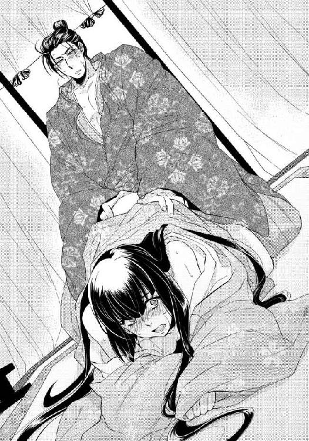
「自ら身体を慰めるか？ 他の男に身を任すか？ 後者は絶対に許さないがな」
冗談を言っているふうではなくあくまでも真顔で須王が語るということは、それはおそらく真実なのだろう。彼の言葉を真白は固く信じている。それならば他にもう道はない。
「もっと......してください......」
羞恥に顔を赤らめながら求めると、須王の表情がぐっと艶やかになった。
彼にそういう表情をさせているのが自分の痴態であり発した言葉だと思うと、それだけでまた真白の蜜壺は収縮する。頬はますます燃えるように熱くなった。
「どうしてほしい？」
真白の胎内から溢れ出る愛液と精液を熱棒の先端で蜜壺の入り口に塗りつけるようにしながら、須王は意地の悪い質問を重ねる。
真白は須王から顔を背け、茵に額を押しつけて消え入りそうな声で強請った。
「かき混ぜて......ください」
「こうか」
声と同時に剛直が円を描くようにしながら真白の中に押し入ってくる。敏感な襞を嬲るように体内をぐるぐるとかき混ぜられ、艶めかしい声が漏れた。
「ああっ、あぁ......ああん」
自ら強請ったこととはいえそのあまりの刺激に、引きそうになる真白の腰を須王が掴み、決して逃がさない。
ぐちゅぐちゅと淫らな音が二人の結合部からは絶え間なく聞こえ、真白は大きく肌を戦慄かせた。
「次は？」
背骨に沿って背中を人差し指ですっと撫でながら問いかけられ、真白は我も忘れて淫らな願いを口にする。
「突いてくださ......っ、ああっ」
言い終わらないうちに待ちきれないとばかりに大きく腰を打ちつけられ、そのまま倒れ込みそうになった。
腰を掴んで引き起こされたので、真白は更なる刺激を予想して半身を深々と倒したのに、次に挿入されたのは途中までで、いたずらに熱を煽られる。
「これでいいのか？」
「いやぁ......もっと......深くっ......あああぁ」
真白が願いを口にした直後の一突きこそ、須王は最奥まで真白の胎内を埋め尽くしてくれるものの、その後は焦らすように浅く出入りするだけで、真白の中には充たされない渇望ばかりがますます蓄積していく。
「ああんっ......もっとぉ......」
いつの間にか須王に促されるまでもなく自ら淫らに腰をくねらせ、強請る言葉を口に出していた。
「もっと......っあ、突いてくださ......っはあ」
甘えた声で蹂躙を強請り、すっかり濡れそぼった秘所を目の前で露わにし、淫らに腰を振る真白の痴態を前にしては、いかな須王といえどもそう長くは忍耐が続かなかったようだ。
いつしか両手で腰骨を掴み、真白の華奢な身体が壊れんばかりに熱棒を突き立ててくる。
「あんっ、あっ......あっ、あ......須王さ......こんなっ......あ」
完全に肩まで茵に突っ伏し、腰だけを高く上げた格好のまま激しく攻めたてられ、それでも真白は律儀に言葉を継ごうとする。
「いいです......須王様っ......いいっ、んっ、んんっあ」
「そうか」
淡々とした返事をくり返すのも、もう須王にとっても限界のようだった。
「ならば受け止めろ」
腰骨を持って引き寄せた真白の最奥までも大きく膨らんだ熱望でみっちりと埋め尽くし、膣壁へと向かって熱い滾りを迸らせる。
「ああっ、あああっ」
胎内に打ちつけられる熱い飛沫が最後の刺激となり、それで極めた真白は全身の力が抜け、その場に崩れ落ちた。
その腰を抱えたまま最後の一滴まで残さぬように白濁を注ぎ込んだ後、須王も大きな息を吐きながら、真白の横に身を横たえる。
「須王様」
瞳を潤ませ、頬を真っ赤に染めながらも、真白はそっと須王にすり寄った。
「ありがとうございます」
怪しげな薬に身体を蝕まれ、激しい性交でしかその熱を治めることができない自分を、すっかり癒されるまで抱き続けてくれる大きな愛情には、感謝の言葉を述べるしかない。
須王は短く「気にすることはない」と呟き、乱れきった真白の髪を大きなてのひらで撫でた。
その感触にまで身体の熱が昂まることはどうやらもうないようだ。真白はほっと息を吐く。
しかしどきどきと脈打つ胸の音ばかりは未だ治まらない。まだ二人の関係が清らかだった頃と同じように、ただ須王に寄り添っているだけで真白の気持ちは温かな幸せに包まれた。
まるで化け物にしか見えなかったこの阿敷神宮に祀られているものが去り、身体の熱もすっかり引いた後、乱れた御帳台や几帳を元の位置に戻し、これからについて真白は須王と話しあった。
「これでもう、そなたがどうしてもこの地に残らなければならない義務はなくなった。そうだろう？」
「......はい」
少し考えた後に、真白は須王の言葉に頷く。
卜占によって選ばれ、今上帝の病の回復を祈願するために特別に遣わされる存在だと説明されたからこそ、真白はこの地に赴く決意をした。しかし祀られていたのは、祈りによって人々の願いを聞き届けてくれる神ではなく、おそらく悪霊に類されるようなものであった。
ならば真白の方もこれまでのようにお役第一に振る舞う必要はないと思われる。
あの忌まわしきものに真白を捧げることで、本当に帝の快癒が望めるはずだったのかは、須王が京に帰って調べてみるという。
「おそらく兄上が何かを知っているはずだ。素直に答えてもらえるかはわからないが......」
難しい顔をしながら須王がその場に立ち上がる。
「だから共に帰るぞ、真白」
薬の効果というよりその後の須王との行為で、すっかり疲弊しきった真白の身体を須王は易易と両腕に抱え上げた。
そのまま本当に京まで連れて帰られそうな気配に、真白は慌てて制止の声をかける。
「いけません、須王様......私はまだ......」
正式に『斎姫』の任を解かれたわけではないと、これまでと同じ言葉を紡ごうとする唇を、歯と歯がぶつかるほどに乱暴な口づけで塞がれる。
「............っ」
激しい交わりの余韻を思い出させるかのように濃厚に口づけられ、骨が軋むほどに強く抱きしめられ、静かに諌めようとした冷静さを奪い取られた。
「須王様......？」
「だからなんだ！ 私にはもう我慢ならない！」
怒りの感情を露わにした須王は真白の頭を自分の胸に押しつけるようにして更に強く抱きしめ、そのまま御帳台のある母屋を後にする。
「そなたをもうこれ以上、危険な目に遭わせるわけにはいかない。あのような化け物に指一本触れさせたくない」
「須王様！ 須王様！」
激情に駆られた須王の胸を、真白は必死に叩いた。誰に隠すこともない須王の気持ちは、相変わらず真白の胸を締めつけるほどに嬉しいものだが、今はまだそれをそのまま受け止めることができない。
「いけません！ まだ無理です」
「何故だ......」
須王としてもその理由は重々承知しているはずなのに、それでも納得がいかないのだろう。真白の必死の叫びに歩みは止めてくれたものの、押し殺したような声で呟いたきり、抱きしめる腕からは力を抜く気配もない。
悔しげに唇を噛みしめている頬に真白はそっと手を伸ばし、須王の腕の中で伸びあがって自ら唇を寄せた。
「真白？」
驚いたように瞳を瞬かせた須王に、懸命に言葉を重ねて請う。
「あと少しだけ、ここで何か手掛かりがないか探させてください」
「しかし、それでは！」
また祈祷と称して淫らな行為を強要されるのではないかと憤る須王に、真白は緩やかに首を振ってみせる。
「今宵祈祷を行ったことになっているので、おそらくその成果があったのかわかるまでは、次の祈祷が行われることはありません。前回もそうでした」
「だが！」
自分を放す素振りのない腕を嬉しく思いながらも、真白は言葉を継ぐ。
「この銅鏡のように、ここでしか手に入らない手掛かりがまだあるかもしれません。せめてそれを確かめるまで......」
「ならば私もそなたと共にここに居る」
まるで聞き分けのない子供のように、頑ななまでに自分と離れることを拒む須王を、真白は愛しく思う。しかし今はまだその想いを告げることはできない。口にしてしまえば真白の方こそ、もう須王と離れられなくなるような気がする。元よりこの腕を出て他に行きたいところなどあるはずもない。
「いけません。須王様は京に戻られなければ......」
涙声で諭した真白の手に須王が自らの手を重ね、愛しげに口づけを落としていく。溢れんばかりの愛情を感じ、涙ぐまずにはいられない真白に、須王がすっと真摯な目を向けた。
「わかった。一度は戻る。しかしまたすぐにここへ来る。たとえ確かなことがわからなくとも、せめてこの鏡を修復して、そなたに持たせるために」
「はい」
二人が『斎姫』の邸の庭で見つけた鏡を掲げたことで、あの忌まわしき存在は頭上から消え失せた。鏡には古来より魔を照らし退ける力があるとされる。そのため魔除けに用いられることも多い。それで退けられたことこそが、ここに祀られているものが神などではない何よりの証拠である。
以前の『斎姫』が記した書と共に焼き捨ててあったこの八稜鏡は、特に退魔に優れた神鏡だったのかもしれない。修理して真白が持っていれば、何よりもの守りとなるはずだと須王は言う。
「だからすぐに戻る。それまで充分に気を付けろ」
「はい。須王様も」
それで話はついたはずなのに、真白が涙ながらに返事をした後も、須王はまだ彼女を腕に抱き上げたまま床に下ろそうとはしない。
本当は離れ難い本心のまま、しばらくはその胸に顔を埋めていた真白だったが、そのうち心配になった。
「須王様？」
黙り込んでしまった須王がいったい何を考えているのかわからず顔を上向けると、すぐに唇を重ねられる。優しく啄まれ、軽く吸われ、大切にされていることを存分に実感させられてから、やおら深く口づけられた。
「あっ......んっ、ん......」
奪うように唇を重ねられ、何度も舌を絡ませてから、ようやく解放してもらえる。
肩で息をしながら潤んだ瞳で顔を見上げる真白をいっそう強く腕の中に抱きしめ、須王は柔らかな頬に己の頬を押し当てた。
「それが最善だと頭では理解できても、気持ちは放したくないのだ。そなたと一刻も離れたくない」
「はい......」
胸の奥にひた隠した本音を吐露するような掠れた声にも、真白はまだ「私も同じです」と本音を伝えることはできない。しかしいつの日か、何を気にすることもなくそう答えることができるようになる日を夢見て、須王の胸にしがみつく。
この手を離したくないのは、本当は自分も同じなのだと、言葉にはできない思いを行動で示すかのように──。
「好きだ、真白」
「はい」
その言葉に自分も同じ言葉を返せる未来を手に入れるためにも、まずはこの理不尽な従属から解き放たれなければならない。そのためには、『斎姫』の務めの真実を暴くことが急務であり、情報を求めて奔走しなければならないとわかっているのに、抱きしめあった腕をお互いに離し辛い。
身じろぎした須王の動作に驚き、真白はつい縋るようにその袖を引いてしまった。
「どうした？」
優しく問いかける眼差しに心を射抜かれ、思いがけず本音が零れ落ちる。
「あと少しだけ......」
「ああ」
頬を綻ばせて笑った須王の顔が、斜めになりながら近付いてきたかと思うと、また静かに唇を重ねられる。言葉にできない想いを体現するかのような抱擁は、どちらからもなかなか解くことができなかった。
「必ず戻る」
「はい」
そのままいつまでも二人で居たい想いを押し殺し、まだ夜明けが遠い闇の中に真白はようやく須王の背中を見送った。
第四章 祈りの真実
京へと戻った須王はそのまま内裏内の自分の住まい、淑景舎へ帰り、泥のように眠った。
幼い頃よりどちらかといえば勉学よりも馬術や弓などの方が得意だった須王は、馬に乗るのも慣れたもので、午前に大内裏で仕事をした後に、京外にある真白の邸まで往復するくらいは苦ではない。しかしさすがに、山を越えた先にある阿敷の地まで一日で行って帰ってくるには体力を使う。
それでも行こうと思って訪ねた時には、決まって真白が困難な状況に陥っていることが多く、行かなければよかったと後悔したことはこれまでに一度もない。
行かずに後悔することこそが最も避けたいことなので、どれほど疲れても、今回のように傷を受けても、真白とひと時共に過ごせるのならば、無理を押して出かけて行く意味は充分にあった。
特に今は、これまで頑なに須王の求婚に背を向け続けていた真白とようやく情を交わすようになり、尚更何を置いても駆けつけたい衝動に駆られる。
ましてや自分以外のものが真白に触れるなど到底許せることではなく、本来ならばすぐ傍にいて片時も目を離さずに守っていたいほどだ。
どう考えても不条理な縛りから一刻も早く真白を解放するために、須王はこれから全力を尽くすつもりだった。
「宮様、お目覚めでいらっしゃいますか？」
塗籠の入り口から声をかけられ、まだ茵に横になっていた須王は「ああ」と短く答えた。
呼んだのは身の回りの世話をしてくれる女房の上総であり、そう気が付いてようやく自分は内裏に帰り着いていたのだと思い出す。
夢を見ており、夢の中では傍らに真白が居たので目覚めたことが口惜しかった。
阿敷まで真白を訪ねる際はいつも昼間のうちに翌日の分まで仕事を済ませ、夕刻からかの地へと向かうので到着はいつも夜更けになる。しかし仕事を切り詰めた分、翌日は休んでもいい算段で、昼まで寝ていてもいいはずなのだが、なかなかそうもさせてもらえない。
上総から「東宮様の使者が参られました」と聞かされ、須王はまたかとため息を吐いた。
淑景舎の隣にある昭陽舎に住む一つ年上の兄宮とは、もともとあまり親しくはない間柄だ。幼い頃は何かと目の敵にされ、あちらが東宮として立ってからは逆に完全に無視で、どちらかと言えばあちらの方が表立って須王を遠ざけてきた。
それがここ最近、珍しい香木が手に入っただの、季節の果物をお裾分けするだの、どうでもいいような内容で数日に一度の割合で使者が訪ねてくる。
兄弟とはいえあちらは次期帝となる東宮で、無下に断ることもできず仕方なく対応するのだが、ほぼ寝ていない状態なので体力的にはかなり辛い。
急いで直衣に着替え、使者を待たせているという廂に行くと、思った通り藤原鉦次といういつもの男が簀子で待っていた。
「待たせたな」
須王が快活に語りかけても「いえ」と口の中でもごもごと返事をし、落ち着きなく視線を彷徨わせ、そのくせ観察するかのように時折繁々とこちらを眺めてくるような男なので、会ってもあまりいい気がしない。
今朝は遠縁が届けてくれたという鹿肉を東宮から預かってきており、須王は丁寧にお礼を述べた後、礼状をしたためるために文机に向かった。
料紙に筆を走らせていると右肩に違和感を覚える。
「っ......」
おそらく昨夜、真白を助けようとして目には見えない化け物に挑み、弾き飛ばされて柱に背中を打ちつけた時にでも痛めたのだろう。馬を駆って帰ってくる間は気が付かなかったが、上総に言って後で塗り薬でも準備してもらわなければと考える。
軽く顔をしかめ肩をさすると、鉦次が上擦ったような声をかけてきた。
「どうかされましたか？」
声音に少し喜色が混じっているように感じられるのは須王の気のせいだろうか。
「いや、少し痛くて」
「それはいけません。大事になさいませんと」
「ああ」
見舞いを言って気遣ってくれているようでありながら、その表情にはやはり堪えきれない喜びが見え隠れする。
気持ちの悪い男だと思いながら、須王は書きあがった礼状を鉦次に預けた。
「またお見舞いに参ります。どうぞ大事になさってください」
「ああ」
それほどの大事ではないと何度告げても通じないので、最終的には須王が鉦次の言葉を聞き入れ、それでようやく無粋な訪問者は渡殿を通って昭陽舎へと帰って行った。
どっと肩に圧し掛かってきた疲れを感じながら、須王はため息を吐く。
「どうか、放っておいてくれないだろうか」
隅に控えていた上総が、声を殺して笑う。
「最近頻繁にお見えになられますね」
「ああ」
「山裾の姫君がかの地に赴かれたあたりからでしょうか？ ......しかも宮様がはるばる訪ねて行かれた翌朝には必ず......通ってらっしゃるのを、どなたかに知られてしまったわけではないのですよね？」
「そのはずはない」
神に仕える『斎姫』として祈りの地にいる真白に、須王が時折会いに行っているということは、今はまだ誰にも知られてはならない秘密だ。
あれは正規の務めではないと信じているため須王はあえて気にしていないが、真白は本来男性と会うことを禁じられている立場だ。二人で会っていることを誰かに知られれば密通の罪に問われることとなり、特に禁域に踏み入った須王は、いくつもの罪を重ねた大罪人となる。
そのため須王は、仕えてくれている者の中でも上総を含めたごく数人にしか、自分がどこへ通っているのかを打ち明けていなかった。
真白の派遣に関わっている節がある東宮の使いである鉦次になど、特に知られるわけにはいかない。
「大丈夫だ」
「それならばよいのですが」
上総の安堵したような声を聞きながら、この危険な日々を長く続けていくことはやはり周りにも気苦労ばかりかけると、須王は再認識した。
一日も早く真白をあの場所から連れ帰り、晴れて傍に留めるために、今自分に何ができるのか思いを馳せる。
（鏡の修復、『斎姫』の情報収集......）
後者に関しては、真白がそれに選定されたと聞いた時にもできる範囲で情報を集めたが、思うようにいかなかった。
祭祀を取り仕切る神祇官の長は代々一つの家系が務めており、東宮の母君がそこの出身であることから、神祇省の須王への対応は殊更に素っ気ない。その傾向は下位の者にまでよく浸透しており、何を尋ねても「私ではわかりかねます」という返事しかない。
ひょっとすると本当に、『斎姫』の実態についてはごく一部の人間しかわかっていないのではないかとも須王は怪しんでいた。
神祇官府に勤める者でさえ知らないような役が、ある日突然置かれることとなり、そこに真白が選ばれたと言われても、そもそも正式に卜占が行われたのかさえ疑わしい。
（これはおそらく正規の神事ではない......）
そう確信しているけれども証明することは難しい。
須王が阿敷を訪れていることを公表できない以上、阿敷の神と実際に対峙し、その実態は化け物と確かめたと証言することもできなかった。
（誰か居ないか......十五年前にも『斎姫』がかの地に遣わされたのならば、それを知る人物......神祇省の関係者以外で......）
もし母が存命であったなら訊いてみるところだが、残念ながら須王の母は彼がまだ幼い頃に他界してしまっている。上総はその母の代から仕えてくれている古参の女房だが、『斎姫』などという役は聞いたこともないという。
やはりある程度『斎姫』に関わった人物でなければ、その存在さえ知らないのだ。情報を集めるのは容易ではない。
（誰か............そうか！）
すっかり頭から抜け落ちていたとある人物のことをふいに思い出し、須王は思わず自分の膝を叩いた。母に思いを馳せた時、同時に思い浮かべるべきだったのだろうがすっかり失念していた。勢い込んで上総をふり返る。
「上総、今日は父上を見舞うことにするぞ」
「主上を、でございますか？」
「ああ」
「わかりました。すぐに知らせを送ります。ですが、それでしたらお着替えになりませんと」
「やはりそうか？」
「はい」
今日は内裏を出て大極殿まで行くつもりもなかったので手近にあった直衣を適当に着たが、帝の御前に参じるとなればそういうわけにもいかない。
「では準備を頼む」
「はい」
いそいそと出ていく上総を見送り、須王自身も準備を始める。
十五年前に先代の『斎姫』を阿敷に派遣したはずの父帝ならば、おそらく何かしらは知っているだろうと思うと、気持ちが急いた。
今上帝の住まいは内裏の西方中央に位置する清涼殿である。
しかしその寝殿の母屋に設えられた昼御座に、帝の姿はなかった。奥に据えられた御帳台の中で床に臥す姿を目の当たりにし、須王の気持ちも落ち込む。
「ご加減はいかがですか？」
御帳台の外から声をかければ「今日はだいぶよい」とかろうじて本人から答えがあるので、それには安堵した。
今年の初めに病を得てから、父帝は長く床に就いたままの状態が続いている。加持祈祷が頻繁に行われ、陰陽師や薬師なども入れ替わり招かれているようだが、病状が回復している様子は見られない。
須王は頻繁に見舞い、その手足となって動くように心がけていたが、東宮周辺の者はどうやらその行為を快く思っていないらしい。
今日も父と二人きりで会えるとばかり思っていたのに、母屋の隅には右近中将が控えており、須王は気落ちした。
（どうするかな......）
右近中将は右大臣の嫡男であり、右大臣の弟である大納言を祖父に持つ東宮とは縁戚関係にある。そのため須王のことを快く思っていない節があり、思うように父帝と会話も交わせない。この場で『斎姫』の話題を出すのはかなり困難に思われた。
「すっかり紅葉の美しい季節となりましたよ」
「そうであろうな」
当たり障りのない会話をしばらくくり返した後、ようやく思う方向に話を進めることができる。
「山裾の紅葉もとても見事です」
「山裾と言えば......姫君は息災か？ 時には見舞ってくれているのだろう？」
「はい」
父帝が真白のことを忘れずにいてくれて、須王はほっと胸を撫で下ろした。
須王が真白を訪ねるのは、ただ会いたいからという理由ではあるが、身寄りをなくした弟皇子の忘れ形見をこうして今上帝が心にかけているからという理由もある。折に触れて心遣いを送るのに、須王がその役目を自ら買って出ているというところだ。
父帝の方から真白の話題を出してくれたことをありがたく思いながら、須王は用心深く言葉を継いだ。
「しかしあちらに行かれてからのことは、私にもわかりません。文をお送りするのも憚られるようなお役ですので......」
「あちら？ お役？」
しばらく沈黙した末、帝は再び重い口を開く。
「姫君は今、山裾には居ないのか？」
真白が『斎姫』に選定されたことを父帝が知らないふうなのは衝撃だった。帝に代わって祈祷を捧げるという名目の『斎姫』に、誰が選ばれたか帝が知らないということがあり得るのだろうか。
確かに父帝は体調不良で、真白をかの地に送り出す『発遣の儀』も東宮が代行したらしいが、それでも耳にも入っていないという事態はおかしい。
嫌な胸騒ぎを感じながら、須王はひとまず父帝の問いに答えを返す。
「はい。『斎姫』に選定され、阿敷の地におられます」
「斎姫......阿敷......！」
はっとしたように父帝が息を呑んだのを、須王は聞き逃さなかった。
帝は落ち窪んだ目を零れ落ちんばかりに見開きながら、血管の浮いた枯れ枝のような手を須王に差し伸べてくる。
「まさか......！ まさか、そのような......！」
身体に掛けていた衾を自ら押し退け、帝が半身を起こした姿を見たのは、須王にとってもほぼ十カ月ぶりだった。力が入らず倒れ込みそうになる身体を支えようと手を伸ばせば、その間に右近中将が割って入ってくる。
「大丈夫でございますか、主上！ 誰か、薬師を呼べ！ すぐに人払いをして祈祷の準備を！」
「父上！」
目の前でかすめ取るように奪われ、帝の手を取り損ねた須王に、右近の中将は燃え上がらんばかりの眼差しを向けてくる。
「今日のところはこれにてお引き取りください、須王の宮様。お話は主上の体調が回復されましてからまたいずれ」
「だが！」
父帝は『斎姫』について何かを知っているふうだった。それに目の前で肉親が倒れたというのに、どうして自分の方がこの場から追い立てられなければならないのだろう。納得のいかない須王は、負けないほどの鮮烈な眼差しで右近中将を真正面から見据える。
「私は父上の子だ。父上のためにできることをする！」
きっぱりと言い切った須王を見つめ、右近中将は唇を歪めて笑った。
「それでしたらすぐに東宮様がお見えになられます。須王の宮様におかれましては、どうぞ何事もご心配なく......」
「............！」
東宮よりも須王が帝の傍に居ることは、右大臣派としては絶対に許可できないのだ。
親子の情さえも退ける政治的算段を歯痒く思う気持ちを、須王は両のこぶしを強く握りしめることで必死に堪える。
「ならば出直す！ またすぐに見舞う！」
床を踏み鳴らして立ち上がった須王を、右近中将は勝ち誇ったような表情で見送った。
「どうぞお気になさいませんよう」
声音を強めてくり返される言葉に、憤然とした態度で須王は背を向けた。
（父上！）
どれほど心配に思っても、近く臣下に下ることが決まっている自分は今からもう親王ではないかのような扱いだ。右大臣派でなければ病床に侍ることも許されないことが口惜しい。
（くそっ！）
父帝に大事なく、また元気を取り戻してくれることを、ただ祈るしかできない自分が須王は歯痒かった。
その頃真白は、常葉と早代と共に壺装束に身を包み、『斎姫』の邸の前庭にいた。
「昨夜一人で庭に下りられたなんて......どうしてそんな危ないことをされたんです！」
「あ、それは......」
「言ってくだされば私たちも手伝いましたのに」
「でも......」
「誰にも見つからなかったからよかったようなものの、もし見つかっていたらどうするつもりだったんですか？」
「ええと......」
「もう一人で危ないことはなさらないでくださいね」
「ええ」
常葉と早代にかわるがわる問い詰められて責められ、真白はもう素直に頭を下げるしかない。
「ごめんなさい」
「わかってくださればいいんです」
「そうです」
「はい」
いったい誰が主人なのか、袿で顔が隠れていることも含め、知らない者が見たならおそらくわかりようもない光景だ。
昨夜遅くに須王と別れた真白は、そのまま阿敷の神宮で一夜を過ごし、夜明け前に命婦たちの手によってこの邸に連れ帰られた。前回のように身体に残った跡などもなく、実は夜中に攫われていた真白が人知れずどのような目に遭ったのかなど、常葉たちは何も知らない。
また真白と須王の手によって綺麗に整えられた御帳台の中に、明け方真白を迎えに来た命婦たちも、昨夜その場で何があったのか本当のことは知らない。
ただ念入りに、「今度こそ祈祷を遂行されたのですよね」とくり返されるので、真白は「はい」と頷いておいた。
その嘘がばれないうちに『斎姫』としての任を解かれなければ、おそらく今度こそ強引にでもあの忌まわしきものに捧げられるだろう。京に帰った須王が無事に何かを見つけてくれることを祈りつつ、真白自身も自分にできることをしようと思う。
その結果、昨夜鏡を見つけた場所を明るいうちにもう一度見てみようと思いたったのだが、その旨を告げると常葉も早代もと名乗りを上げた。
そして結局、昨夜一人で庭に下りたことを責められながら、今度は三人で仲良く庭に下りている。
「確かにここだけ、灰が撒かれているのですね」
「ええ」
昨夜鏡を見つけた場所に二人を案内し、他にも何か残っていないかと探した。しかし何も見つからなかった昨夜と同様、やはり陽の光の下でもそれ以上の手掛かりは見つかりそうにもない。
「やはり......」
落胆する真白に、常葉がある提案をしてきた。
「庭が駄目なら邸の中を探しませんか？」
「え？」
真白は驚いたように目を瞬かせた。
「ここって邸自体は新しいけれど、置かれている調度品はそうでもないですよね」
「あ......」
確かにと真白も思い当たった。
今回真白が『斎姫』として派遣されるに先立ち、住まいとなるこの邸は新たに造営された。しかし中の調度品は以前から使われていたと思われるものも多く、三人はよくそれを話の種にしている。
「何かないか探してみましょう、姫様」
「ひょっとしたら秘密の文が見つかるかもしれませんよ」
「ええ」
どこか面白がっているふうの常葉の言葉に表情を和ませながら邸の中へと戻った真白だったが、まさか本当にそのようなものが出てくるとは思っていなかった。
自分が普段使っている塗籠を探し、次いで常葉と早代が使っている塗籠を探す。根を詰めて探したのではなく、命婦たちに怪しまれない程度、数日をかけて調度品を一つ一つ丁寧に見ていっただけだったのだが、始めて二日目に、髪を整える道具などをしまっていた打乱筥の底が二重になっていたと気付いた。
「姫様それって......」
「ええ」
ひょっとしたらという思いを抱えながら、錦が貼られた底の一枚目をゆっくりと捲る。
中から現れたのは蓋裏と同じように蒔絵が施された二つ目の底で、小さく折り畳まれた紙片が間に入れられていた。
「まさか！」
信じられない思いでその紙片を取り出し、恐る恐る開いてみる。中に書かれていたのは、誰かが誰かに宛てた謝罪文の一部のようだ。
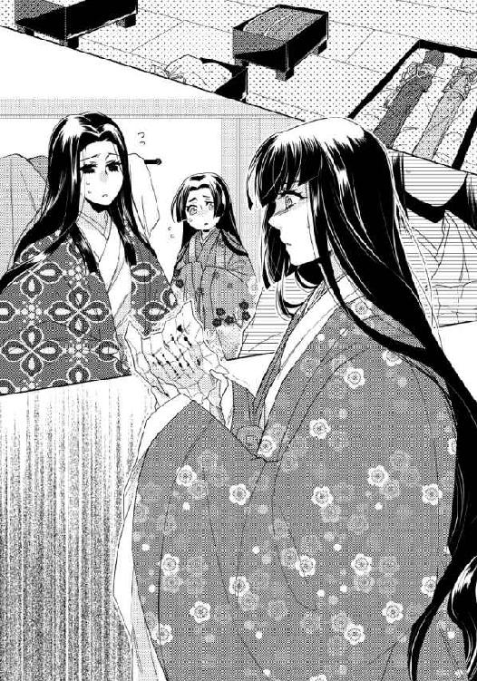
『......あれが祈りなどではなく呪いなのだと、私は露ほども存じ上げていなかったのです。まさか私のせいで日嗣の皇子様が......！ 私が犯した罪は、何を持ってしても償いきれることではございません。あの忌まわしきものに身を任せた時から、すでに心は死んだようなこの身、それならばいっそ......どうぞお赦しください』
紙を持つ手がブルブルと震え出し、真白はその場に伏してしまいそうだった。
「姫様！」
隣に居た常葉が支えてくれたので、かろうじて倒れずに済む。
「大丈夫よ......」
二人に心配をかけないように口には出してみたけれども、その声音はやはりどうしようもなく震える。
もしかしたらと真白が頭の片隅で想像していたような事柄が、そこには疑いようのない事実として書かれており、慄かずにはいられなかった。
祈りを捧げると称して身を捧げる対象が醜悪な化け物であると確認した時から、果たしてこれは本当に『祈祷』なのかと真白は危ぶんでいた。
むしろ生贄を捧げて邪なものに助力を乞い、誰かを殺める『呪い』に近いのではないかと心の中では疑いながらも、誰にも打ち明けることはできなかった。
その考えを事実として肯定された紙片を見つけてしまい、狼狽が止まらない。
「やはり......！」
『斎姫』としてこの地に送られながらもこれまであの忌まわしきものに身体を捧げずに済んでいたことを、今更のようにありがたく思う。
それは真白が自分の身を守れたということもさることながら、真白を捧げることで何者かが何者かにかけようとしていた呪いを阻んだことにもなるのだ。
「よかった......」
口元を手で覆ったものの、堪えきれずに漏れた声には涙が混じる。
この紙片を残した過去の『斎姫』はおそらく、化け物にその身を穢されたからというばかりでなく、彼女のその祈祷のせいで誰かの命が失われたと知ったため、自ら命を絶ったのだ。
同じ道を歩むはずだった自分の境遇と照らし合わせ、悼む気持ちが募る。
（なんで？ ......どうしてこんな......）
己の目的のために『斎姫』の制度を利用し、誰かを呪い殺さんとする者がどこかにいるのだ。今も昔も──。
（いったい誰が？）
その答えもまた、悲運な『斎姫』が残したその紙片が教えてくれた。
「日嗣の皇子様......」
かつての『斎姫』が自分のせいで失われてしまった命として、その名を上げていることが怖ろしかった。
帝に次ぐ地位である東宮を弑すことは、当然殺した本人も死罪になるほどの大罪だ。それが『斎姫』とあの忌まわしき化け物を使うことで、誰にも知られることなく秘密裏に断行されたのかと思うと、その狡猾さに身震いする。
紙片に書かれた文字はおそらく、以前命婦に見せてもらった十五年前の『斎姫』の筆跡と同じ。だとすれば、『斎姫』を使った東宮暗殺が行われたのもまた十五年前ということになる。
「十五年前！」
その数字が持つ意味を理解し、真白は更に戦慄した。
十五年前、東宮の地位にあったのは須王より四つ年上の今上帝の第一親王だった。それが不幸にして幼くして亡くなったため、現在の東宮がその地位に就いた。
東宮の交替で得をした者は誰であるかを考えれば、『斎姫』制度を利用して前東宮を弑した人間の正体は自ずと推測できる。
（東宮様の外戚の大納言様？ その親族？）
そしておそらく同じ一派の者たちが、今また『斎姫』を利用して誰かに呪いをかけようとしているのだ。犯人が同じ一派だとするならば、今命を狙われているのはいったい誰なのか。
事態は真白自身にも深く関わってくるような怖ろしい方向を向いていると気が付く。
（狙われているのは......主上？ それとも......まさか！）
そこまでを推測すると、真白はいたって冷静に、その紙片と命婦から借りた書を書き写した紙、そして庭で見つけた文の燃え残りを、もう一度その打乱筥の二重底の中に隠した。
震える手を励まして打乱筥を布で包み、常葉に渡す。
「これを持って京に帰りなさい、常葉」
「え？」
常葉も早代もかなり驚いた顔で真白を見た。その顔を真っ直ぐに見つめ返しながら、真白は声を潜めて言葉を続ける。その声音は低く真剣だった。
「京で今、須王様が『斎姫』について調べておられます。これがあればきっと大きな助けになるはず。それに急がなければ、もっと大変なことが起こるかもしれない」
「............！」
言葉も出せずに大きく瞳を見開いた常葉に、真白は頷いた。言葉は交わさなくとも生まれた時からずっと傍に居た常葉には、それで真白の真意が通じたらしい。常葉は呆けていた顔を引きしめ、たちまち真顔になる。
「三日かかるところを、二日で駆けてみせます！」
「いいのよ、そこまで急がなくても。それよりもどうか気を付けて」
「はい！」
心が不安に押し潰されてしまいそうな状態でも、真白はいつも常葉の明るさに救われる。その常葉を一人きりで行かせることは心配であり不安でもあったが、他に手立てはない。真白には今、この地には常葉と早代しか味方が居ない。
その早代は、姉と真白の間で交わされた約束をおろおろしながら見ていた。自分たちより二つも年下の早代の両手を握りしめ、真白はできるだけ優しく瞳を覗き込む。
「早代、常葉が無事に京に辿り着くまでせめて三日間は、居なくなったことを誰にも気付かれないように隠さなければならないわ。そうでなければ常葉が危ない。だからどうか力を貸してね」
「は......はい！」
涙を流しながらも頷いた早代に、真白はあえて自分のことは言及しなかった。
常葉を京に返したと知られたならば、当然真白自身の身も危うい。しかし安心させるかのように、最悪の事態ではなく上手くいった時のことを、早代には話して聞かせる。
「常葉が打乱筥を無事に須王様か直輔に渡せたら、『斎姫』の任ももう解かれる。その時は私たち、あの山裾の邸に帰れるのよ。萩乃もきっと喜んで迎えてくれるわ」
「はい！」
自分はどうなっても、せめて自分のせいでこんなところまで連れてこられた常葉と早代だけは元の生活に戻してあげたいと、心に秘めた決意は言葉にはしなかった。
「宮様。頼まれていた鏡の修復、できましたよ」
淑景舎を訪ねた直輔が真新しく磨かれた鏡面を須王に誇らしげに見せたのは、話半ばで須王が帝の御前を辞した四日後のことだった。
あれ以来再三にわたり須王は帝の見舞いを願い出ているのだが、東宮と右近中将がまったく取り合ってくれない。
『もう少し加減がよくなられましたら』と同じ文を書かれた書も見飽きていたところに直輔が現れ、須王は大きく息を吐いた。
「そうか。早かったな」
真白が阿敷に行った後に参内を再開した直輔は、今は神祇官府で祭器の管理をしているというので、須王はこっそりと焼けた銅鏡を見せてみた。
これならば直せると胸を張られてから三日と経っていないのに、まるで新しいもののように磨かれた鏡を持参され、その腕の良さに舌を巻く。
「神祇省は暇か？」
冗談のつもりで言ったのに、直輔には真顔で返された。
「暇ですね。基本、春と秋の大祭の前後以外は......」
「そうか」
せっかく神祇省に居るのだからと、『斎姫』についても秘密裏に調べてもらったが主だった成果はない。直輔が言うには、『斎姫』はやはり神祇省の中でもごく限られた一族しか、代々関われないものなのだそうだ。
（大納言家か......）
それが東宮の外戚であることを除いても、須王にはあまり良い印象がない。特に東宮の祖父である大納言は、何を考えているのかわからない、どこか得体の知れないような人物だった。
（直接話すしかないだろうか？）
須王が重い気分で考え込んでいると、直輔が「あれ？」と声を上げる。
「どうした？」
「いえ......鏡面を磨いたついでに、裏もできるかぎり綺麗にしたんですけど、ここに彫られているのが『阿敷神宮』って読めると思って......」
「何？」
直輔の手から取り上げた八稜鏡を、須王も裏返して見てみた。
花や鳥を図した紋様の隅に、前後が焼けて潰れてしまっているが確かに『阿敷神宮』と読める文字が刻まれている。
（神宮の名を冠しているということは......まさかこれは御神体？）
須王ははっとしたように顔を上げると、急いでその銅鏡を布に包んだ。
その一連の動作を見ていた直輔が恐る恐る尋ねてくる。
「あの、宮様？ その鏡ってそもそもどこから持ってこられたんです？ 阿敷神宮って......まさか、常葉たちが姫様について行っているあの『阿敷』の神宮じゃないですよね？」
須王が真白の許を訪れていることは常識で判断するならば禁忌で、そのため滅多な者には明かすことはできない。直輔は信頼できる男だが厄介ごとに巻き込みたくない一心で、須王はその推測を笑い飛ばした。
「そんなはずないだろう。ははは」
「そうですよね。ハハハッ」
できることなら直輔だけは、その明るさを失わないままに近く帰ってくる真白を迎えてやってほしい。酷い経験をしたあの地を離れ、次に京に帰る時こそ、彼女は幸せになれるはずなのだから──。
心の中でそう念じると、須王は直輔に真顔を向けた。
「時に直輔、急用を思い出した。私はこれから仕事に行かなければならない」
「あ、そうですか。それじゃ私も仕事に戻ります。また来ますね、宮様」
「ああ、ありがとう」
簀子から階を下りようとしている直輔に、須王はもう一度礼を言っておく。
「ありがとう直輔」
直輔はふり返って首を傾げたものの、すぐに笑顔になり、須王に頭を下げると今度こそ階から前庭へと下りて行った。
その背を見送り、須王は先ほど決めた覚悟のために大極殿へと向かう。
（今宵、この鏡を持って真白のところへ行こう。そのために明日の分の仕事まで進めておかなくては......）
鏡の思いがけない謂れを早く真白に伝えたい。少なくともこの鏡を持っていれば身を守るのに役立つと思った。
その後、通常の倍もの速さで仕事を済ませた須王が、夜になりこっそりと真白の許に向かう準備をしていた時、急な来訪者が来たと上総が車宿りまで呼びに来た。
「客？ こんな時間にか？」
須王が呆れるのももっともで、夕餉の時刻もとうに過ぎ、宴の帰りであっても人を訪問するのはどうかと憚られるような時間である。
「はい。ぜひお会いしたいと......」
須王がこれから出かけるつもりだったと知る上総も、困った顔でそうくり返す。須王は仕方なく廂に設けた座でその人物に応対することにした。
簀子に現れたのは見覚えのない若者だった。他の者に見られては困るというので廂の中に招き入れたが、よく見ればまだ殿上していないような少年で、誰の小舎人かと尋ねてもそれは答えられないと言う。
今上帝の第三皇子である須王を前にしても物怖じしない様子はなかなか堂々としたもので、身のこなしも隙がなく、実はよほどの身分のある貴族の子息なのではないかとも思ったが、今は詮索しないでおく。人には教えられない行為ばかり行っている須王にとっても、今はその方が都合がよかった。
「それで私に何の用だ？」
少年は恭しく須王に礼をしてから「これを」と背後から一振りの刀を取り出した。
「これは......！」
両手を出して受け取りながら、須王の背筋は自然と伸びた。
鞘に納められ刀袋に入れられているが、それでもかなりの名刀であることは武術を得意とする須王には手にしただけでわかる。しかも袋の色は黄櫨染。帝のみが着用できる袍の色と同じで、それだけで少年を遣わした人物が誰なのかを推し量ることもできる。
「その方は、私にこれをどうしろと？」
居住まいを正し声音を変えた須王に、少年は軽く頭を下げる。
「宮様の思うがままにお使いくださいとのことです」
長い沈黙の末に、須王は重く短い言葉を返した。
「............わかった」
少年が挨拶をして帰って行ってからも、しばらくはその刀を手にしたまま、須王はその場に座っていた。
静かな時が流れる。これから自分はどうするべきか、父帝は自分に何を望んでいるのか、深慮しなければならない事柄がいくつもあるのに、微動だにしない体と裏腹に、須王の頭の中はたった一つの事柄で埋め尽くされてしまっている。
（真白！）
その顔を、声を、眼差しを、温もりを、どうしようもないほどに思い出し、須王はその場に立ち上がった。
「出かけてくる」
「はい」
心得ているとばかりに、上総が馬で出かける準備を始める。
つまりはそういうことなのだ。他の何も考えられないほどに真白のことしか思い浮かばない時、それは真白の許に行けという何者からかの暗示であり、彼女の身に危険が迫っているという警鐘でもある。
そこに父帝から神気漲る刀を手渡されたということは、それを用い、真白を救えということに違いない──。
これまで一度も違えたことのない勘に従い、須王は夜も更けた頃、真白の待つ阿敷に向かい京の内裏を出立した。
その数刻前、真白と早代は常葉が阿敷を出てからようやく三日目の夜を迎え、安堵と共に眠る準備をしていた。
「姉様、そろそろ京に着かれたでしょうか？」
「そうね。気の早い常葉のことだからやっぱり早足で駆けて、もう着いたでしょうね」
「きっとそうですよね」
ここまで無事に常葉の不在を隠し通せたことが嬉しく、真白と早代の表情は明るかった。
元々、東宮が付けてくれた女房たちとは別に、常葉と早代だけ真白と共に西の対で生活しているので、他の者と顔を合わせる機会は極端に少ない。
食事の準備などで向こうの女房たちと会うこともあるが、その役目はこれまでも早代が行うことが多かったので、常葉の姿が見えなくとも特に怪しまれることもなかった。
息の詰まるような三日間が終わり、いよいよここから帰る日が近付いたのだと実感したその晩、予期せぬ来訪者は三度、夜半に真白の塗籠の枢戸を開けた。
「姫様......お訊きしたいことがあるのですが」
凍りつくような命婦の声を背後に聞き、真白は本当に身も凍るかと思った。
「なんでしょう？」
精一杯平静を取り繕ってふり返ったのに、すぐにその表情が崩れる。
「早代！」
いつものごとく命婦の左右に従った二人の女房のうちの一人が、腕に早代を抱え上げていた。真白が呼びかけても動きもせずぐったりと四肢を投げだしているところを見ると、どうやら意識を失っているらしい。
慌てて駆け寄ろうとした真白は、もう一人の大柄な女房に後ろから羽交い絞めにされた。
「あと一人、常葉とかいうあの小生意気そうな娘はどこです？」
「............」
真白は答えないまま目の前に立った命婦から顔を背けたが、どうやらそれは答えを言ったのと同じだったようだ。ぱーんと大きな音を響かせて頬を叩かれた。
「............！」
後ろから押さえつけられているので、勢いに押され倒れ込むこともできない。叩かれた弾みで口の中が切れたらしく、ほのかに血の味がした。
「やんごとなき身の上のか弱い姫君が、よくもやってくれましたね！」
掴みかからんばかりの形相で真白を睨みつける命婦は、完全に理性の箍が外れてしまっている。これまではせめて表面上は敬意をもって接していた真白に手を上げたばかりか、次々と暴言を浴びせかける。
「祈祷なんて一度もやり遂げてないじゃありませんか！ いったいどうやったのかはわからないけれど、奉仕するべき荒神様を勝手に退けて！」
命婦に小突かれるまま、真白の華奢な身体は左右に揺れた。
それでも彼女は呻き声一つ上げない。奥の歯を噛みしめて俯き、ただじっと耐えている。
「姫様なんて呼ぶのもおこがましい！ あなたなどただの贄です！ 素直にそのお綺麗な身体を荒神様に捧げていれば、今頃私たちだってとっくにお役御免になっていたはずなのに！」
どんと肩の下を叩かれた弾みで息が詰まったが、胸に食い込んだ命婦の言葉の方が真白にはよほど痛かった。
（わかってる......わかってるつもりだった）
それでも他人の口からはっきりと、お前は贄だと言い切られれば心が軋む。自由にならない腕の先でこぶしを握りしめる真白を、嘲るような顔で命婦は見下ろす。
「もう後はない。あの娘が助けを呼んで帰ってくる前に、今晩のうちに祈祷を遂行してもらいますよ！ 縛りつけてでもやらせます！」
衣を翻した命婦の後を追い、真白も腕を縛められたまま歩かされた。
着替えも化粧もせず今宵はもうそのままに、いつものあの糸毛車に押し込められる。
気を失ったままの早代も共に乗せられたことに、真白は息を呑んだ。
「早代......」
驚いた真白の顔を見据え、命婦はほんの少し嬉しそうに口の端を上げる。
「あなたが逆らったり逃げたりしたら、今宵はこの娘に代わりに贄になってもらいます。斎の力を持つあなたが適任なのだと宮様はおっしゃってましたが、この際もう構いません。若い女ならば誰でもいい！」
滅茶苦茶な道理で怖ろしいことを言ってのける命婦を、眼差しを強くして真白は睨んだ。
しかし狭い屋形の中、命婦と二人の屈強な女房を敵に回し、早代を人質に取られれば、その要求に従うことしか真白にできることはない。
「............」
「どうぞよろしくお願いいたしますよ、姫様。あはは」
唇を噛みしめて俯いた真白を、馬鹿にしたように嘲笑する命婦の声が腹立たしかった。
やはりこうなる前に、せめて早代だけでも常葉と共に逃がしておかなかったことを、真白は後悔した。
「初めからそうやって従順にしていれば、こんなに時間がかかることも、私が何度も宮様に叱られることもなかったんです」
両腕を背中で縛られたまま御帳台の中に横たえられた真白を、簾を捲った隙間から命婦は覗き込む。
先ほどからくどくどと恨み言をくり返しているが、自分がもう何度もこの怖ろしい計画の首謀者を暴露してしまっていることには気が付いているのだろうか。ひょっとすると気が付いていないのかもしれないし、どちらにしてもこれで最後なのだから、もう真白にぐらい聞かれても構わないと思っているのかもしれない。
しかし命婦の言葉の端から計画の首謀者を予想した真白は、深く落ち込まずにはいられなかった。
やはり真白を『斎姫』に選定し、忌まわしきものへの生贄とすることで、何者かへの呪いを成就させ命を奪おうとしていたのは東宮──その人なのだ。
そして命を狙われていたのはおそらく須王か帝。
十五年前に現東宮をその地位に据えるため前東宮が呪い殺された経緯を見ると、この儀式は遥か以前からくり返し行われてきたものなのかもしれない。東宮の外戚である大納言家の闇の歴史の一面を、真白は垣間見たような気がしてならなかった。
「せいぜいこれまでの分もしっかり御奉仕してください。あなたができなければ、もう一人のあの娘に代わってもらうしかありませんから」
改めて念を押すと、命婦は御帳台の置かれたその場所を出ていった。
すぐにでも見えない無数の手が襲いかかってくるのではと真白は息を詰めたが、しばらくは何も起きないままだ。不気味なほどの静けさがかえって怖ろしい。
これまでは真白が一人きりにされるとそれとほぼ時を同じくして、手は襲いかかってきた。今宵はいつ現れるのかわからない緊張感と焦燥感で、いつも以上に胸の鼓動が速くなる。薬を盛られたわけでもないのに、はあはあと熱くなる息を真白は気持ちだけで必死に制した。
ふと一つの手が袴の腰紐にかかった気配がする。するするとまるで腰紐が勝手に動いているかのように宙を舞い、瞬く間に結び目を解かれる。
緋袴が大きく引き下げられ脚から完全に取り去られても、真白は抵抗するどころか声一つ上げられなかった。自分が祈祷を遂行できなかったならば、その時には代わりに早代をと言われれば、もう抗うことはできない。
しかしそれと同時に、このまま祈祷が成就されてしまえば、その時は須王か帝の命が奪われてしまうのではという危惧に心が揺れる。そのような悪行は、断固阻止しなければならない。ならばこのままあの化け物に身を任せるわけにはいかない。
心は千々に乱れたまま、決意のつかない真白の小袖は大きくはだけられ、両の肩から二の腕の半分ほどまで下げられる。前半身は何も身に着けていない裸に剥かれた。
（いや......いや......！）
声に出すことはできない言葉を、心の中だけでくり返す真白の胸の膨らみに、すぐさま目には見えない手が触れてくる。初めは一本だった手はすぐに十本、二十本とその感覚を増したが、どれほどおぞましくともどれほど悔しくとも、呻き声一つ上げず真白は必死に耐えた。
脇腹を擦られ、乳房を揉まれ、太腿を撫で上げられる恥辱も、唇を噛みしめて堪える。両腕は後ろ手に縛られたまま、どこを隠すことも抗うこともできない。
つんと上向いた胸の先端の蕾を執拗に弄っている手の感触がある。太腿を上から下へと、脚の付け根際を掠めて撫で続けている手もある。腹を撫でるもの、尻肉を掴むもの、それぞれがまたそれぞれに違った刺激を真白に与え、不思議な感覚に陥らせる。
（私......どうなるのかしら？）
固く閉じた瞼の端から、白い頬を伝って涙が幾筋も流れ落ちた。このままこの忌まわしいものに犯されるくらいなら、いっそのこと身体を穢される前に自ら命を絶ってしまいたい。
そうすればせめて呪いの成就だけは阻むことができるだろう。
しかしもし真白がそういった逃避行動に出ても、その時もやはり命婦は早代に代わりをさせるのかもしれない。だとすれば真白が自ら命を絶ったとしても、守れるものは自分の自尊心以外にはほぼないと言ってもいい。早代は化け物に襲われ、それで呪いは成就するのだろう。
（じゃあどうすれば？）
惑うばかりの真白の身体に、おぞましい手の感触がいよいよ執拗に絡みつく。脚を膝立たされ、左右に大きく開かされる。
（あ......）
これまでにもそういう体勢を取らされたことはあったが、いずれも秘めたる部分にあの忌まわしいものの手が伸びる前に、真白は須王の手によって助け出された。しかし今日は傍に須王は居ない。
（逃げるわけにもいかない？ このまま受け入れるしかない？）
いくつかの手が太腿を脚の付け根の方へと下りていく感覚を感じながら、真白は絶望に震えていた。そこは須王にしか触れられたことはない、たった一人の愛する人にだけ開かれる場所だったはずだ。決して見るも恐ろしい化け物に蹂躙され、無残に引き裂かれる場所ではなかったはず。
（助けて......誰か......！）
そう呻く少女の声に導かれ、夢の中でこの場所に辿り着いたあの日が、もうまるで遠い日の出来事のように思われる。
あの時ここに足を踏み入れなければと思う反面、意を決して立ち向かったからこそ、これまで何度も最悪の事態は回避できたのだと考える。
（ううん、違う......そうじゃない......）
無数の手に全身を弄ばれ、思考がはっきりしない。だが確かそうではなかったはずだ。いつも真白の最大の危機を救ってくれたのは夢の中の自分自身ではなく──。
（そう......違う......！）
彼自身の危険も顧みず駆けつけてくれた。呼べば必ず現れてくれた。それは真白が自分でそうと意識していない時でも必ず成就される約束で、おそらく無意識のままに本当はどんな時でも彼を呼び続けているからに他ならない。
『そなたの声はどこに居ても必ず私には聞こえる』
その不思議な現象を、彼はまるで何の疑問も感じていないかのように教えてくれたではないか。
『私の助けが必要になったならいつでも呼べ。たとえどこに居ても、すぐにそなたの許へ来る』
約束してくれたではないか。他の何を疑っても怪しんでも、その言葉だけは信じていい。どれほど諦めようとしても、それでも彼をずっと慕い続けている、心の中では呼び続けている自分の一途な想いだけは捨てないでいい。
『真白』
耳の奥に名を呼ぶ声が甦り、胸が締めつけられるように苦しくなり、固く引き結ばれていた真白の唇からその名が零れ落ちた。
「須王様......助けて......」
「真白！」
瞬間、御帳台の天井となっていた明障子が吹き飛ばされるほどの突風が吹いた。
否、突風と思われたのは刀が振り抜かれた際に生じた刀風だったようで、真白を押さえつけていた無数の手が本体である黒い渦から切り離され、ぼとぼとと茵に仰臥する真白の上に降ってくる。
「きゃああああああっ！」
「真白！」
絶叫した真白を逞しい腕が攫い、その恐ろしい残骸から引き離すかのように御帳台の外に抱え出す。
「いや！ いやあっ！ あああ！」
気が狂れたかのように叫ぶ真白の頬を軽く叩き、顔を自分の方に向けさせたのは須王だった。
「真白！ 真白！ 無事か？」
その間にも、須王は追い縋ってくる腕を手にした刀で次々と切り落とす。
本体に繋がっている間は目には見えない無数の手が、切り離された瞬間姿を現し、刀を振るう須王の前で山となっていく光景は、とても正視できるようなものではなかった。
眦が引き攣るほどに目を見開いてそれを凝視してしまう真白を、須王は何度も自分の方に顔を向け直させる。
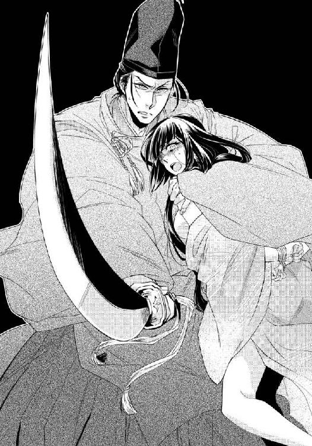
「真白！」
数回それをくり返した末にようやく真白の大きな瞳が焦点を結び、須王の姿を目の前に認めた。
「須王様......？」
ぽろぽろと涙を流す真白は両手を後ろで縛められており、思うように動けない。よろけるように須王の胸に顔を埋める。
手の襲来の合間を縫って須王が縛めの縄を切ってくれ、それでようやく真白は須王に縋りつくことができた。
「大丈夫か？」
「はい」
約束通り、須王は呼んだ瞬間に来てくれた。だから真白はあの化け物にどれほど全身を撫でまわされようとも最後の一線だけは越えられることなく守られた。
だから無事だし、大丈夫だ。これまでもこれからも、憂えることなくただ須王だけを想っていられる。
「大丈夫です」
答えた真白を腕に抱き直し、須王は絶え間なく刀を振り続けた。
「須王様......」
その疲労の色が濃いことは確かだった。
襲い来る目には見えない無数の手は、止まることを知らない。本体から切り落とされた腕の残骸は二人の前で山となっているけれども、それがあとどれほど残っているのかは未知数だ。
このまま永遠に襲われ続ければ、いかに須王といえども疲弊し、そのうち刀を振ることも適わなくなる。
そうはさせまいと、真白は辺りに落ちていた明障子の壊れた破片を手に取った。須王の真似をして振ろうとすると即座に止められる。
「よせ。何でもあれが切れるわけではない」
「ではそれは？」
須王が手にしている見事な長刀は、先ほどからどれだけ化け物の腕を切り落としてもその切れ味が損なわれることもなく、刃こぼれすることもない。
不思議に思って真白が問いかけると、須王が神妙な面持ちになった。
「これは神刀だ。父上が貸してくださった」
「父上......」
須王がそう呼ぶ人物は、京で最も貴き方──今上帝であると気が付き、真白は息を呑む。
「おそらくこれでしか切れない。これは破魔の刀だ」
「破魔の......」
しかしいかに特別な刀であっても襲いかかる手の方に終わりがなければ、いつかは須王が力尽きてしまう。惑う真白に須王が懐から取り出した平たい布の包みを押しつけた。
「開いてみろ。例の鏡だ」
「あ！」
真白は急いでその包みを解いた。中から出てきたのは輝く八稜鏡。裏面はあちこち焼けてしまいせっかくの彫刻も損なわれてしまっているが、表面は真新しく銀と錫の鏡面を張られ、真白と須王の上に浮かぶ醜悪な化け物の姿をはっきりと映し出す。
思わず目を背けたくなるその姿を、気を取り直してしっかりと見据え、真白は須王に囁いた。
「須王様、もっと右。右に目玉が」
真白の指示に従い須王が刀を右に突き上げると、確かな手ごたえと共に何か巨大なものが上から圧し掛かってくる感じが強くなる。
須王には見えないその姿を、鏡の中でつぶさに確認しながら、真白は彼に更なる指示を出した。
「そこから左に一直線に切り裂いたなら、もう一つの目玉がそこに！」
「わかった！」
真白の言葉に全幅の信頼を置いた須王が両手を刀の柄にかけ、自らの体重を乗せるようにして宙を切り裂いていく。
耳を塞ぎたくなるような雄叫びが耳をつんざき、それが須王に両目を抉られた化け物が発したものなのだとわかる。
もう一度刀を持ち直した須王が宙に向かって二、三度刀を振り、それで空気を震わすような叫びも、部屋の上部を全て覆いつくしていた禍々しい空気も全てが祓われた。
真白がおそるおそる鏡の中を覗き込んでみれば、そこにはもう何も映らない。
「終わった......？」
ぽつりとひと言漏らした瞬間、須王がしな垂れかかるように抱きついてきた。
「す、須王様？」
ふざけて抱きつかれたのかと真白は焦ったが、どうやらそうではないらしい。
持てる力を全て使い果たし身体に力が入らないふうの須王と体勢を入れ替え、真白は自分の代わりに彼を茵の上に寝かせる。
二人の前にあれほど山積みになっていたはずの黒い腕は、今はもうどこにもなかった。代わりに小さくて細い木の枝のようなものが無数に床に散らばっている。
「何かしら？」
一つを拾い上げて見てもそれが何かはわからなかったが、全てをてのひらに拾い重ねてみるとその元の形が推測できるようになった。
「あ......櫛？」
真白が呟いた瞬間、最奥に設けられた祭壇の中央で、何かがカタンと音をたてて倒れる。
決して大きな音ではなかったが、嵐のような喧騒の後のしんと静まり返った時間のことで、真白は跳び上がらんばかりに驚いた。
どきどきと落ち着かない胸を押さえ、ついでに小袖の前をしっかりと合わせながら、用心深く祭壇へと近付く。
北側の壁面一面を使った巨大な祭壇の中央に祀られ、いつもそこで青白い光を放っていたのは、意外なことにてのひらに載るほどの小さな櫛だった。見事な彫刻が施されているにもかかわらず、その歯はぼろぼろに欠けてしまっている黄楊の櫛。
「あ......」
知らない間にてのひらに握り込んでいた櫛の歯を、真白は開いてもう一度眺めてみた。色合いといい長さ、太さといい、それは祭壇に飾られた櫛から抜けた歯だと見て間違いない。
「そんな......！」
ということは、真白を再三襲ったあの化け物の正体がこの小さな櫛だというのだろうか。俄かには信じ難い事実を目の当たりにし、真白の心は大きく乱れる。
「そんなことって......？」
しかしその時真白の心の大半を占めていたのは、化け物の正体に関する驚きばかりではなかった。
「そう......やっぱり......」
どこかで違っていてほしいとも願っていたことが、やはりそうであったのだと確認した悲しみ。自分ばかりではなく自分の大切な人をも、騙され裏切られたことへの堪えられない怒り。その思いに支配され、瞳に涙が浮かんでくる。
祭壇に祀られていたのは、真白のよく知る櫛だった。
──それはこの阿敷に出立する際執り行われた『発遣の儀』で、東宮自らが真白の髪に挿してくれた『別れの御櫛』。
「真白？」
問いかけてきた須王の方を、指で涙を拭ってふり返った。
「はい」
「どうした？」
自分はもう起き上がるのさえ辛そうな状態であるのに、こういう時まで真白の心配をする須王を、彼女としても是非守りたいと思う。少なくとも彼が自分のためにしてくれたのと同じくらいには、自分も彼の助けになりたい。
それほど真白は須王のことを想っているし、何からも守りたい思いが強い。
「京へ戻りましょう、須王様」
まさか自分からその言葉を口にする日が来るとは、真白は考えたこともなかった。
むしろもう二度と戻らないつもりで、京からは遠く離れたこの地で、これからは帝の回復と須王の幸せを祈りつつ残る人生を送ろうと決意してここまで来た。しかし──。
「戻って全てを明らかに致しましょう」
その真白の願いを脅かす者が京に居る。それを排し、須王の未来から憂いを取り除かなければ、どれほど祈りを捧げても真白の願いが叶うことはない。
──須王様には幸せになってほしい。
その願いを現実のものとするためには、今ここに引き込んではいられない。
「私、京に帰ります」
固い決意を胸にその夜一晩だけ、真白は禁を破って『斎姫』の邸に須王を招き入れた。
完全に祈祷の場を壊してしまった事実はもうこれ以上隠し通すことができず、命婦と二人の女房は須王に捕らえてもらい、阿敷神宮に縛っておくしかなかった。
一両日中にでも着くに違いない常葉が呼んでくれるであろう京からの使者に、後のことは任せることとする。
助け出した早代に手伝ってもらい、真白は細心の注意を払って『斎姫』の邸まで帰り、須王を自分の塗籠に案内した。
初めて彼を自分から招き入れることに眩暈がするほどの緊張を感じたが、須王本人はいたっていつもの調子だ。
「いいのか？ 私を寝所に入れて」
深い響きの声で問いかけられ、更に心臓が弾む。
「はい」
「もう遠慮はしないぞ。そなたの方から呼び入れたのだから、言い訳も待ったも聞かない」
「............」
これまでもほぼ、真白の制止の声に須王が止まることなどなかったのだが、今はまだそれには言及しないでおく。そうでなければ意地になった須王に、どれほど追い詰められるのだかわかったものではない。
「覚悟しろ、真白」
「............」
心なし頬を熱くしながらも、真白は先に茵に横になった須王に背を向け、枢戸を閉めた。口調は乱暴でも、須王の声には甘さと悪戯心が滲み、隠しきれない喜びに充ちている。
ふり返った先に待っているのは、自分が本音に反して長いこと背を向け続けていた温かな腕だということは、真白自身にもわかっていた。
（須王様......）
部屋の隅に灯されていた燭台の灯りをそっと消し、真白は横たわる須王に寄り添った。
第五章 未来の帝
夢を見ていた。
そこは正面九間の広大な母屋の周りに廂が巡らされ、さらにその外側には高欄の付いた簀子が配された瀟洒な建物。母屋の中央には御帳台が据えられており、中には椅子、入り口には左に獅子、右に狛犬の重石が置かれている。
中の椅子に坐しているのは黄櫨染の袍を纏った束帯姿の人物であり、その色目が唯一無二の人物にしか許されないものであることと、御帳台の独特な設えから、ここがどこでその人物が誰なのか、真白には容易に想像がついた。
（ここはおそらく主上が儀式などに臨まれる紫宸殿。そして御帳台の中にいらっしゃるのはその主上......）
しかし床にひれ伏す真白にかけられる声が、彼女が知る今上帝のそれとは異なっている。
実際に御前に出たのはまだ父宮が存命であった幼い頃以来であり、記憶もおぼろげではあるが、それを抜きにしても声音がまったく違う。
むしろ更なる驚きを真白に与えていたのは、その声が彼女のよく知る人物のものであったからだ。
「面を上げよ」
年を重ねた重々しさはあまり感じられず若々しい響きでありながら、決して軽薄な印象はない。むしろ威厳に満ち、心にゆっくりと染み渡るような深い響きの声を耳にし、思わず目頭が熱くなる。
（そんな......ううん。でもやっぱりそうだわ......）
伏せていた上体を起こし、面を上げ、更にその人物を見上げるように視線を上向けるまでの時間の中で、真白は全てを理解し、そしてそれに充分に納得がいった。
御帳台の中から真白を見据える視線は、どんな苦境にあっても決して揺るがず、彼女をすぐ傍で支え続けてくれた愛情溢れる眼差し。
「須王様......」
その人が栄えある帝位に就く姿をしっかりと瞼に焼きつけ、真白は短い夢から覚めた。
温かな胸に頬を寄せるようにして、大好きな人の腕に抱かれ初めて目覚めた朝であったのに、頬を伝う涙が止まらない。
「真白？」
身じろぎした真白に気が付き、抱きしめてくれていた須王の方も目覚めてしまったようだ。泣いているとは知られたくなく、真白は須王の腕の中で深く俯く。
「どうした？」
それでも鋭く問いかける須王は、こと真白に関してのみは怖ろしく敏感で、適当な嘘を吐いてもはぐらかせるはずもない。それなので、ありのままを伝える。
「夢を見ました」
「例の先読みか？」
「おそらく......」
そのまま須王が次の言葉を待っている気配を感じ、意を決してその内容を説明する。
「須王様が黄櫨染の袍をお召しになって、紫宸殿の御帳台に......」
軽く息を呑んだ気配はしたがひどく驚いた様子はなく、須王は淡々とその言葉の真偽を確かめてきた。
「本当か？」
「はい、本当です」
なぜだか全てが終わってしまったような寂寥感に苛まれながら、それでも真白はしっかりと頷いた。
堂々としたその表情までしっかりと記憶しているほどにたった今見たばかりの夢だ。それに真白にとって須王だけは、他の誰とも間違いようがない。
「確かに須王様でした」
詰めた息を吐きだすようにひと息に言い切ると、抱きしめる腕に力が込められた。
「そなたが夢に見るのは、近く実現する未来だったか......どれほど先のことだ？」
「それは夢によって異なるのですが、今の夢は須王様の面差しから見ておそらく、一年以内には現実になるかと......」
真白が慎重にそう答えると、須王がふっと息を吐く。
「それは主上の病も完治され、本人の希望での譲位なのだろうか？ それとも......」
「あ......」
自らが帝位に就くと知らされても無防備に喜ぶのではなく、代わりに帝位を辞すことになる父帝の心配をする須王の気持ちに思いを馳せ、真白はいつになく声を張った。
「もちろん今上帝は本人の意志で譲位なさり、後のことを安心して須王様に任されるのです。そうでなければ帝位にある須王様が、あれほど晴れがましい顔をされているはずがありません！」
威厳と喜びに満ちた須王の表情を思い出し、真白が熱く語ると、ふいに須王がその体を腕に抱き直す。
「ありがとう、真白」
「え？」
夢に真白の意志が関係することはなく、それはもう既に決まった事柄として、未来の景色を一方的に見せられるばかりだ。決して礼を言われるようなことではないのだと頭を振ると、その頭を胸に強く抱き込まれる。
「いや、これから困難なことが山積みだと気落ちしていたところに、それは何よりもの朗報だ。真白の夢が、何も躊躇わずに前に進めばいいと私の背中を押してくれる」
珍しく涙混じりの声で頭を抱きしめながら囁かれる言葉に、思わず真白まで目頭が熱くなった。目の前にあった須王の単の襟元に額を付けると、真白の目からは再び涙が零れ落ちる。
「須王様......」
幼い頃よりくり返し見た未来を映す夢は、いつも真白にとっては悲しい内容ばかりだった。このような夢など見なくていいのに、どうして自分にばかり見えるのか、その不条理に悩み苦しんだことは数えきれない。
その中にあって、夢の内容を須王に喜んでもらえたことが嬉しい。
特に彼について不吉な夢を見ることが怖ろしく、これまで意に反して遠ざかろうとし続けていた真白にとっては、これでようやく長い呪縛から解き放たれたかのような思いだった。
「ありがとう真白、ならば私はその日に向かって、何事も一つずつ必ずやり遂げてみせる」
「はい」
須王の声は力強く、その宣言は頼もしい。それを嬉しく聞いていた真白だったが、その気持ちのどこかに、なぜだかほんの少し悲しみの感情が混じることに気が付いた。
初めは僅かな点のようなものでしかなかったその気持ちが、次第に大きく広がっていくことも、真白にはどうしようもない。
「信じております。応援しております」
その言葉に嘘はなくとも、夢の中で見た帝姿の須王に寄り添うべきはやはり自分ではないという杞憂が、次第に真白の心を蝕んでいく。
「その日を心からお待ちいたしております」
「ああ、ありがとう」
今この腕が抱きしめてくれているのは自分だが、未来はおそらく他の人物となるのだろう。それを思うと、たった今須王の華々しい未来を喜んだ感情よりも、いつかは憂える感情の方が勝ってしまいそうで、そんな自分が真白は悔しくてならなかった。
『斎姫』の邸で一晩を過ごした須王は誰に気付かれることもなくその日のうちに、馬を駆って無事京へと戻った。昨夜は真白も共に帰ると誓ってくれたが、ひとまず諸々の片がつくまでは、阿敷の地で待たせておくことにする。まずは十五年前の『斎姫』が残してくれた品々を京に持ち帰った常葉と、できるだけ早くに合流することが第一の目標だった。
須王が阿敷に行っていたこともあり、すれ違いとなった常葉は兄である直輔に大切な打乱筥を預けたようだ。須王が帰るとすぐに、直輔から会いたい旨の言伝があった。
「宮様！」
念のために検非違使庁で別当の立会いの下、須王は無事直輔と再会することができた。すでに検非違使庁を統括する左衛門府には事の次第が伝えられ、阿敷には命婦らの捕縛の遣いが送られているらしい。
『斎姫』の制度を悪用し、十五年前に時の東宮を呪詛したとして現東宮の祖父である大納言も大極殿で身柄を拘束。残るは現在帝の病床に付き添っているため、その退出の時が待たれている東宮のみであると聞き、須王はその役を自分に任せてほしいと願い出た。
「ですが......」
その権利を有していない須王に捕縛を任せると、後々右大臣側に悪い感情を残すのではと左大臣派の左衛門督は憂える。
そこで須王を後押ししてくれたのは思いもかけない人物だった。
「須王様に任せて大丈夫だと思いますよ、伸満様」
大柄でがっしりとした左衛門督の背後から聞こえてきたのは、まだ声変わりも終わっていないようなあどけなさを残した少年の声。昨夜須王の許に破魔の刀を持って現れた少年とよく似ていると考えたのも束の間、髪をみずらに結ったその男童が、本当にひょっこりと顔を出す。
「そなたは......！」
「雪斉様！」
須王と左衛門督の驚きの声はほぼ同時だった。左衛門督が思わず口にした名前に思い当たり、須王はようやく彼が何者であるかを悟る。
「雪斉？ なるほど......ではそなたが左府殿の......」
天才と噂に聞く左大臣家の子息なのだと思い当たった。まだ元服もしていない子供なのだが、今上帝の覚えもめでたく、これで左大臣家は安泰だと朝廷で囁かれている噂は須王の耳にも入っている。
（確かに......）
得心したかのように頷く須王に向かって頭を下げ、男童は再び声を発した。
「昨日は名乗りもせず、失礼いたしました」
「いや。こちらこそ、おかげで助かった」
女性かと見紛うほどに美しい顔をした雪斉という男童は、須王の返答に微かに頬を綻ばせる。
「それでは万事うまく？」
「ああ。あとは、大元を正すだけだ......」
そこで胸の苦しさに耐えきれなくなり須王が言葉を切ると、黒髪を揺らして小首を傾げた雪斉が何かを受け取ろうとするかのように両手を出してきた。
「御用がお済みでしたらお預かりして、私の方からお返しいたしましょうか？」
それを見た須王は、毅然と首を横に振る。
「いや」
短くもはっきりとした返答をし、次いで射るような眼差しを雪斉に真っ直ぐに向けた。
「もしよければ、私の手でお返ししたいと思うのだが......いいだろうか？」
「よいと思います」
須王同様、雪斉の返答も早く、口調にも声音にも一切の迷いは感じられない。
（不思議だ......）
女性的な外見の雪斉といかにも男性らしい須王とでは、外見上は似ても似つかない。しかし目に見えない内面が、かなり自分と似ているような印象を須王は受ける。
それにまだ二度目の対峙であるのに、お互い何故かどこか相手をわかっているような雰囲気がある。
（彼は左府の秘蔵子......これからの左大臣家を背負って立ち、未来の国政の根幹を担うに違いない人物。その人物とこうまで通じる気持ちを持てるということは......すなわち真白が夢に見た通り、本当にそういうことなのかもしれない）
須王自身にも自分の未来に、遥かな帝位が垣間見えたような気がした。
「ならば行ってくる」
内裏に向かって視線を向け直した須王に、左衛門督ももう反対を唱えることはない。
帝が療養しておられる清涼殿に向かい歩き始めた須王の横顔には、これまで以上に迷いがなかった。
布でくるんだ長く細いものを携え、女房たちには奇異の目を向けられながら、清涼殿の母屋へと足を踏み入れた須王だったが、そこは相変わらず彼にとっては過ごし難いことこの上なかった。
「何をしに来られたのですか？」
廂には右近中将が控えており、あからさまに嫌な顔を向けられる。
「父上にこれをお返しせねばと思い......」
ところがその顔が、須王が背後から取り出した一振りの刀を前にし、瞬く間に凍りつく。
「そ、それは！」
刀袋を目にしただけで中が何であるかに思い当たったのだろう。さすがに中将の任を賜っているだけのことはある。
それを帝が須王に預けていた以上は、もうこの場から退ける口述もないと理解したらしく、右近中将は悔しげに顔を背けながらも、須王が母屋の中へと入って行くことを黙ったまま見過ごす。
彼以上に顔色を変え、須王の姿を見るや座っていた円座から腰を浮かしたのは、帝の枕元に坐していた東宮だった。
「す、須王！ ひえええっ！ な......なぜ？」
すっかり取り乱した兄に対し、須王は真顔のままほんの少しその表情に凄みを加える。
「なぜとは......なぜですか？」
動揺を隠すことは、東宮にとって今は非常に困難であるようだった。
「な、な、なんでもないわ！」
手にしていた扇を投げつけられるも軽くかわし、須王は真摯な眼差しを東宮に向け続ける。
挑むような思いを受け止めきれず、あちらこちらと視線を彷徨わせる様子を見れば、彼が『斎姫』を使って呪いをかけようとしていたのは、おそらく自分だったのだとひとまずの推測はできた。
真白を邪心の生贄として呪い殺したつもりの弟と、またこうして見えることとなり、おそらく腰を抜かしてしまいそうに驚いたのに違いない。自分に対する仕打ちはともかく、真白への扱いを思い返せば、須王は今すぐ飛びかかりたいほどの怒りを必死に堪えた。
ここは穏やかに、肉体的にではなくもう少しだけ心理的に追い詰めることを選ぶ。
「本来はもう、見るはずのない顔でしたか？」
「な、なにを！」
腹の内を探るつもりで投げかけた言葉への返答で、推測は更に確信へと変わる。
「もう一人、兄上の予定ではもう見るはずもなかった顔も、阿敷の地で元気に過ごしておられます」
真白のことを揶揄され、東宮はますます激昂した。
「ど......どういうことだ、この不埒者！ よくも『斎姫』を......」
「『斎姫』？ さて何のことでしょう？」
精一杯嘯いて、須王は表情を崩さぬままにそう言い切る。
「何のことってお前......あ！」
苛立たしげに罵ろうとし、そこで初めて東宮は自分の口が過ぎたことに気が付いたようだ。
両手で口元を覆い、これ以上は話してなるものかと首を激しく左右に振っている。
いよいよ言葉ではなく腕の力で、自分がどれほど酷いことを行っていたのかを思い知らせる時が来たと兄に詰め寄りかけた須王だったが、思いがけない声がそれを遮った。
「『斎姫』だと......？ それだけはならぬ」
須王でさえも眠りに就いているとばかり思っていた帝に不意に話しかけられ、東宮の顔色が青いを通り越し、すでに透き通っているかのように見える。
「その実情を何も知らず、任命を許した十五年前の愚行を私は今でも悔いている。そのせいであのような事態になったのだと、後から知ってももうどうすることもできず......ましてやその者たちを厳罰する証拠も、手立てもなく......失われた尊き命は何を以てしても決して取り戻すことはできない。そのような手段を用いて誰かを陥れんとする者たちは、必ずやその返しで身を滅ぼす」
静かだが思っていたよりしっかりとした帝の声に、須王は安堵の息を吐いた。しかし東宮の方は動揺を隠せず、ひとまずこの場から逃げようとする。
「せ、せっかく須王が見舞いに来たのですから、私はしばらく席を外すことにいたします......」
とうに母屋の隅から姿を消していた右近中将に追随するように、この場を辞そうとする東宮に須王は待ったをかけた。
「その前にぜひ私の奏上にお付き合いください、日嗣の皇子様──いいえ、兄上」
東宮としての華々しい呼び名をわざわざ否定され、それから兄弟間の呼称に言い直された東宮は怒りの視線を須王に向けたが、その眼差しに強さはない。隠れて悪事ばかり働いている者たちのように、どこかおどおどと怯えたような色が濃い。
「主上、『斎姫』を任命し、何者かに呪詛をかけようとした一派のほとんどは既に検非違使によって捕らえられました。十五年前の同じような事件の真相を記した書も発見され、その時の首謀者も捕らえることができたことをここにご報告申し上げます。長く心を痛めておられた事柄がこれで解決の運びとなれば、必ずやお身体の方も元気を取り戻されることでしょう。不幸にして犠牲となった魂の弔いは、これから私が共に行って参ります。心を込めて祈りを捧げましょう」
「そうか......そうだな、今となってはもう、そうするしかない......」
「はい......かくなる上は、今回の件の中心となった人物が、一人残るのみなのですが......私としましてはその方に僅かでも良心が残っていることを願い、自ら贖罪を誓ってはくれないかと祈るばかりです......」
「そうだな」
須王と帝の穏やかなやり取りを黙って聞いていた東宮は、遂に我慢ができなくなったようでぶるぶると震えながらその場に立ち上がろうとした。
「失礼いたします！」
しかしびくりとしたように肩を震わせ、その途中の体勢で身動きできなくなってしまう。
「どうしました、兄上？」
問いかけた須王に東宮が返事をすることはなかったが、その答えは一目瞭然だった。右肩を押さえた東宮はよほどそこが痛むらしく、苦しげな呻き声を漏らす。
ほんの今までそのような様子はなかったことを考えれば、その急な不調はいかにも人智を超えた力が働いているかのように感じられた。
「同じですね」
懐から小さな布の包みを取り出し、須王は東宮に手渡した。それを掴みきれず落とした東宮の足元で、右側の歯がぼろぼろに欠けた黄楊の櫛が布から転び出る。
「ひえええっ！」
今度こそ完全に怯えきり、東宮はその場所から後退ろうとしたがそれすらできないらしい。
「うわああっ！」
遂には右肩を押さえうずくまってしまった兄宮に、須王は淡々とした声で問うた。
「祓いましょうか？ 主上からお借りしたこの刀で」
痛みでか悔しさでか顔を歪めた東宮は、「頼む」と小さな声で須王に頭を下げる。
それが全ての決着の瞬間だった。
罪を認めたも同然の兄宮の上に、須王は黄櫨染の刀袋から輝く長刀を取り出し、降り下ろす。
「お祓いいたします、兄上。澱んでしまったその心も、あなたが犯した罪も」
刃の前に頭を垂れ、東宮はその場に力なくうずくまった。皇太子のみに許された色である黄丹の袍がもの悲しい。
「幼い頃より、いつも須王と比べられてばかりいた......私の方が東宮となり、その勝敗は喫したはずなのに、今度は須王をこのまま臣下に下らせ、左大臣家と繋がりを持たせるのはよくないと言われる。私の方はいつまで経っても、実家と右大臣一派の意向に逆らえないままだ。須王を排するには、証拠も残らない良い呪詛の方法があると、皆が口を揃えて言う。私に選択権など初めからまったくない......」
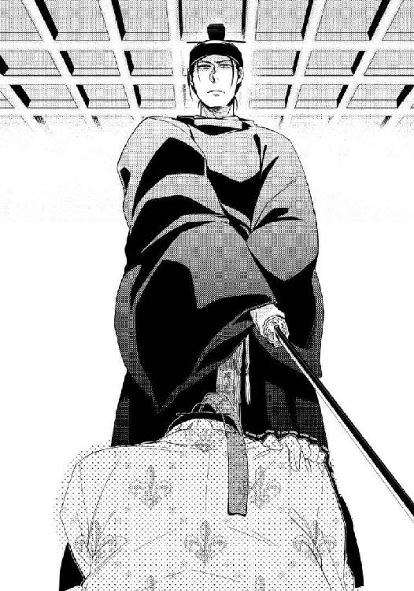
肩の痛みは須王の一振りで治まってしまったのだろう。それまで肩を押さえていた左手を力なくおろし、東宮──否、元東宮は、脱力気味に覇気の感じられない言葉を零した。
それとは好対照な声が、彼の頭上で凛と響く。
「それでも心を強く持ち、突っぱねることはできたはずなのです。兄上は東宮だったのですから」
きっぱりと言い切る須王の顔を眩しげに見上げ、元東宮は苦しげに顔を歪めた。
「誰もがお前のように自分の足だけで地に立ち、揺るぎない信念を持っているわけではない。かえってお前のような存在が稀有なのだ、須王」
深々と彼が吐いたため息は、長く背負い続けた一族の期待と、それに縛られた雁字搦めの生活から、ようやく抜け出せた安堵の息のようにも聞こえた。
こうして長きにわたり大納言家に脈々と受け継がれてきた禍々しい儀式は明るみとなり、東宮は廃嫡、大納言はじめ『斎姫』を悪用した呪いに関わった全ての者は京からの追放、流罪となり、真白を最後に、この先永劫『斎姫』の制度が遂行されることはなくなったのである。
「姫様！ これでいいですか？」
玉砂利が敷き詰められた前庭から聞こえてくる明るい声を耳にし、廂で祭器を磨いていた真白は背後をふり返った。
眩いほどの真昼の陽光の中、それにも負けないほどの笑みを浮かべた直輔が、男衆と共に草取りを終えた庭を自慢げに指差している。
他の者の目もあることから、「いいのではないでしょうか」と常葉が御簾越しに澄ました返事をしてくれたが、真白はできることなら直輔の許に駆け寄り、自分でそう伝えたい思いだった。
「兄様嬉しそうですね」
早代は丸い顔を綻ばせて、自分こそ嬉しそうな顔をしている。
「当たり前よ。やっと自分も姫様の許に呼ばれたんだもの。私が京まで駆けた時だって、顔を見るなりまず第一声は『姫様は？』よ？ 妹のことも少しは心配してほしいものだわ」
常葉がわざと大袈裟に身振り手振りを交えて語ってくれ、真白は素直に面白かったのだが、早代は少し複雑そうな顔をした。
「え？ ひょっとしてお兄様って姫様のこと......？」
余計な気を回して焦る妹に、常葉は顎で庭の光景を示して見せる。
「そんなはずないじゃない。ほら、兄様が姫様と同じくらい慕ってる方が来られたわよ」
早代と共に常葉に促されるまま庭に再び視線を向けた真白は、思わずドキリと胸を跳ねさせた。
「あ......」
以前とは別の場所と見間違えるほどによく手入れされた神宮の前庭を、須王が神殿に向かって歩いてくるところだった。
「真白！」
誰に気兼ねすることもなく大きな声で自分の名を呼び、手を振る姿を見ていると気恥ずかしくて頬が熱くなる。しかし迷いなど微塵も感じさせず悠々と歩く姿を見ていると、ずっと見つめていたくなる。
どちらにしても、須王が現れれば視線も思考も全てが彼に引き寄せられずにはいられない真白の隣から、「あ、私用事を思い出しちゃった」「あ、私も」と常葉も早代も早々に居なくなってしまった。
果ては庭の掃除をしていた直輔も、男衆を皆引き連れて居なくなってしまう。
祭壇のある神殿の廂と、その前に広がる庭に須王とたった二人きりで残され、真白は妙な緊張を覚えるのに、須王にはそういった素振りはまったくない。
躊躇いもなく階を上がり、真白が坐する廂とは御簾一枚で仕切られた簀子に座り込んだ。
「ずいぶん綺麗になったな」
「はい、直輔も京から来てくれましたから......」
「庭だけじゃなく、中も片付けたのか？」
「はい」
御簾越しにちらちらと須王が神殿の中を気にしている様子が感じられ、真白はそっと簾を捲った。
「どうぞ、ご覧になられますか？」
「ああ」
簀子から立ち上がった須王が御簾を潜り抜けながら、当然のように真白の手を取る。手を引かれて歩くことに胸の鼓動を速くしながら、真白も須王と共に祭壇のある最奥の間に足を踏み入れた。
そこはつい先日までは、禍々しい神を祀った呪詛のための間だった。
乙女を捧げることで誰かを呪い殺すという荒神の生贄に選ばれ、真白は『斎姫』としてこの地に連れてこられた。しかし忌まわしき神は須王が帝から借り受けた神刀によって祓われ、神宮は本来の姿を取り戻した。
即ち、神鏡を祀り国家の安寧を護る、真の神宮に戻ったのである。
祭壇の中央には、須王が直輔に頼んで磨き直させたあの神鏡が祀られている。元々ここは、それを祀るために建立された神宮だったのではないかと須王は語っていた。それがいつしか、とある一族によって呪いのための場と変えられ、長きにわたって忌々しい儀式が秘密裏に行われてきたのだ。
長い時を経て正しき姿に戻った神宮を掃除し、見事にその役目を果たせる清浄な場所にすることを、真白は最近の楽しみとしていた。そのため、『斎姫』の制度はなくなりその任を解かれた今も、それを理由にこの地に止まっている。
対する須王の方は、今回の件に関わった東宮がその地位を追われてからというもの、実に慌ただしい日々を送っていた。
親王から臣下へと下る日が目前だったというのに、次の東宮となることが決まり、周囲の対応は気持ちが悪いほどに変化したようだ。てのひらを返したようにすり寄ってくる者たちに辟易して、時間が空けば馬を駆ってこの阿敷の地を訪れてばかりいる。
足繁く通っている理由は、自分がなかなか京に戻らないからだと真白は申し訳なくも思っていたが、しかしどうしても踏ん切りがつかない。
「綺麗に片付いたな」
「はい」
祭壇の間を見渡した須王は、真白の髪をそっと撫でた。昔から変わらないその仕草に安堵する一方、仄かに薫った黒方に似た香の香りに、気持ちではなく身体が反応する。思わず身体を強張らせてしまい須王に苦笑された。
「そんなに緊張するな。取って食ったりはしない」
「............はい」
赤く染まった顔を見られまいと、真白は面伏せた。その頬をそっと撫でながら、須王が尋ねる。
「それでどうだ？ そろそろ京に戻る気になったか？」
「それは......」
この地を訪れる度に同じ質問をさせてしまうことを申し訳なく思いながら、それでも真白は素直に頷くことができなかった。
元より自分は須王には不釣り合いだと思っていたが、彼が東宮となったことでその思いはますます大きくなった。
将来帝となる須王は、これから幾人もの妻を娶るだろう。第一の妃と最初は胸を張っていられても、そのうちには他の妃を妬み、寵愛が移ったことを嘆く日々が来るかもしれない。それでも数多い妃の一人として、帝の寵を争いあう。それが帝の妃というものだ。
もしも須王がただ人で、生涯真白一人を愛すと誓ってくれるのなら、真白はとうに彼と生きる覚悟を固めていた。しかし多くの妃の中の一人になるのだと思えば、どれほど内心は須王のことを想っていても、なかなか思い切ることができない。
「私はもう少しここで過ごしたいと思います。じきに雪が降り始めますから、それが融けてまた山の往来が容易くなるまで......」
そうこうする間に須王が真白のことなど忘れてくれれば、自分はこのままこの地で須王の御世の安寧を祈りながら静かな生活を送るのにと思う。
今日もまた結論を先延ばしにするような答えを返していると、不意に名前を呼ばれた。
「真白」
ふり返った瞬間、唇に唇が重なってくる。手首を掴まれ須王の方に引き寄せられながら上から覆い被さられるような口づけは、真白に平静さを忘れさせるのに充分だった。深く舌を絡めながら何度も吸い上げられ、身体から力が抜けて後ろに倒れそうになる。
「んっ......んんっ」
首を振って逃れようとしても、顎を固定され、執拗に唇を重ねられた。ふらふらと頼りない背中を抱きしめられ、熱くなり始めた身体を須王に密着させられる。
「んふぅ......んン」
そのまま肩から袿を滑り落とされそうになってしまい、真白は慌てて須王の胸を突いた。
「やっ......あ......」
「真白」
軽く息を切らした須王が、目元をほんのりと赤くしながら見つめてくる。そのまま腕の中にしな垂れかかってしまいそうな衝動を堪え、真白は後ろに身体を引いた。
「いったいどういうつもりだ？」
問いかける声に詰問するような色を感じ、胸はどきどきと落ち着かなくなる。
「どういうって......」
「事態が収束するまでと言った、その後は兄上たちの処遇が決まるまで......神宮を綺麗に整えたら、次はまだ降りもしていない雪が融けるまでか？ 正直に言ったらどうだ」
「正直に？」
「あなたの妻になるつもりはないと」
「............！」
「その通りか」
息を呑んだ真白の表情を見つめ、ひどく切なげな表情になった須王と向き合い、真白の方こそどうしようもなく胸が痛かった。
「なら初めからそう言えばいい。私は十年以上も見込みのない片恋をしていたのか？ そなたの優しさを勘違いしていたのか？ そして激情に任せて無理やりそなたを......」
「須王様！」
悲愴な表情でありもしないことを並べ立てられるのに耐えきれなくなり、真白は彼の名前を呼んだ。
しかし呼んだはいいものの「何だ？」と傷ついたふうの目を向けられると、答えられることは何もないということをまた思い出し、何も話せなくなる。
「憐みならばもういらない、真白」
その場に座り込んだ須王の、拒むように自分と向けられた背中を見ていたなら、涙が込みあげてきた。
──好きな人にただ気持ちのままに好きと告げることは、どうしてこれほどまでに難しいのだろう。
須王のすぐ後ろに真白も座り込み、その背中にそっとてのひらを当てたなら、ぴくりと狩衣に包まれた肩が跳ねる。
「真白？」
ふり返られようとするから、「どうぞそのままで」と願い、息を吸いこむ。口から飛び出してきそうに暴れる心臓を落ち着かせることは、なかなか容易ではなかった。
「ずっと以前からお慕いしている方が居ます」
震える声で語り始めた真白の話に、全身全霊を傾けて集中している須王の様子が背中だけ見ていてもよくわかる。だからなるべく誤解のないように、ありのままの想いを伝えられるように、懸命に言葉を選びながら真白は話を続けた。
「とても強い方で、私にとっては眩い方で、見ているだけで私まで強くなれるのです。できることならずっと見ていたいのです。でも眩しすぎて時々怖くなります」
「............」
「その方が思ってくださっているほど、私は綺麗ではありません。醜い感情もいっぱい持ちあわせています。それを知られたら嫌われてしまうのではないかと、それが怖い」
「真白。私は......」
須王が顔だけふり返り何かを言いかけたが、真白は首を左右に振る動作でそれを制した。背中に当てた両手の間に顔を埋め、須王の背に頬を押し当てる。
「能力に対して不遇だったその方の境遇が華々しいものになり、これからもっと多くの人に素晴らしい方だとわかってもらえるでしょう。それが嬉しかった半面、私は寂しくなりました。私だけに向けられていた優しさがもっと多くの人に向けられるようになり、たくさんの人がその方の許に集まるようになったら、いつか私のことなど忘れられてしまうのではないかと......私はそんなことばかり考えて、一歩が踏み出せない情けない人間です。できることならこれまでのような狭い世界で二人きりで生きていきたかったなどと、できもしないことを今更願ってしまうような小さな人間なのです。それをその方に知られ、失望されることが一番怖い」
震える声で真白が気持ちを語り終えても、須王はしばらく身動き一つしなかった。
しかし大きな息を一つ吐くと同時に身体ごと後ろに向き直り、再び真白の手首を掴んだ。まるでどこにも逃がさないとでも言わんばかりに──。
「そなたの気持ちはわかった。ならば私は全てを捨てて、ただの一人の男としてこの地でそなたと共に過ごしてもいい」
「え？」
「ここでなくとも、どこでもいい......帝位も身分も特に必要ではない。ただそなたが居ればいい。真白」
瞳を真正面から見つめられ、心に染み入るような声でひと言ひと言言い含めるように語られ、真白の瞳から涙が溢れだした。
「そのような......ことっ......」
頬に手を伸ばした須王が、真白の涙を指先で次々と拭っていく。
「ダメだろうか？ 本気なのだが......」
須王には確かに以前からこういう危うさがある。ただ真白のためだけに全てを投げだしてしまいそうな──。
それが恐くて本音を隠して遠ざけようとするのに、身を切られるような思いで背中を向けるのに、その真白の努力をひと息に跨いで、須王は何度でも真白の目の前に現れ、彼女が一番欲しがっているものをくれる。見つめるだけで嫌なことも忘れられる笑顔も、天まで舞い上がってしまいそうな気持ちになる言葉も、溢れんばかりの愛情も、何度も何度も。
だから諦めきれないのだ。どうしても捨てきれずに手を伸ばしてしまう。自分が隣に居ることは彼にとっての最善ではないとわかっているのに。
「ダメです。須王様は京に居られなくては、次の帝となられる方なのですから......」
「ならば真白も共に来てくれ。そなたが居ない京でなど暮らせない」
「ですから私は......」
「私がいやだ。真白でなければいやなのだ」
「須王......様......」
手首を引かれ、再び唇を重ねられる。僅かに重なり離れそうになったそれを、真白の方からも微かに追った。瞬間、頭の後ろに手を廻され、そのまま深く口づけられる。あまりに深すぎて、どこまでが自分でどこからが彼なのか、その境界線さえもうよくわからない。
「んんっ......んぁ......っあ」
気が付けばお互い、奪い合うように衣を脱がしあっていた。
言葉で確かめあった想いを、肌を重ねることで確認しようとするかのように、もっと触れたくて合わせたくて堪らない。自分の中にそういった感情があるとは真白は今まで思ったこともなく、戸惑うばかりだった。
真白の袿を全て脱がせた須王が、床に身体を横たえることもなくそのままの格好で、小袖の襟を大きく広げ肩から下ろしていく。たわわに揺れる胸の膨らみまでを露わにされた真白は背後に逃げようとしたが、すぐに背中が柱に当たる。それをいいことに上から圧し掛かるような格好になった須王が、二つの膨らみを掌中に収めた。弾みをつけて大きく交互に捏ねられ、真白は小さな悲鳴を上げる。
「や、あっ、ああっ」
その顔をわざわざ間近で覗き込みながら、須王は長い舌を乳房に這わせた。
「あ、あ......」
赤い舌が上下に動き、胸の先端の蕾を巧みに転がす。唾液に塗れ怪しく光るしこりは舐め転がされる度にますます硬くなり、ツンと天に向かって頭をもたげる。
「あんっ、やっあ」
己の身体が淫らに変化するのを正視していることに耐えられず、真白が顔を背けると、罰だとばかりに蕾が唇に咥えられ、強く引っ張られる。
「っ......ああっ」
反対の蕾も同じようにいたぶられ、強引に立ち上がらされた。
「んっ......はあ、っぁ......あ」
琴をつま弾くように指先で何度も弾かれ、熱い疼きが身体の奥に蓄積していく。もっと大きな刺激が欲しいなどと、はしたないことを強請ってしまいそうになる。
腰紐を解かないままに真白の肩と胸だけを露出させた須王は、袴の紐を解く時も小袖の紐は解かなかった。そのため袴を取り払われた真白は、腹部だけを小袖に覆われ、まるでこの場所で忌まわしきものに襲われた夢の中の自分と同じ格好になる。
「やっ、あ......あ」
忘れかけていた恐怖の記憶が甦り、粟立てた肌をねっとりと舐められた。乳房だけに這わされるのかと思っていたその舌は、首筋も腹部も同じように舐め上げ、身体の全てが須王に浸食されているかのような錯覚に陥る。
「やめっ...や......ぁ......」
腕も脚も万遍なく舐められ、まるで猫の仔にでもなったかのようだ。大きく開かされた脚を膝から内腿に向かって舌を這わされ、緊張に腰が揺れる。
「やっ、やあ」
既に濡れてしまっているに違いないその場所は、まだ明るい昼間の室内で以前よりもはっきりと須王の目にも映るだろうと考えると、それだけで身体の奥から熱い蜜が滲みだしてきそうだった。
ところが丹念に真白の脚を辿っていった須王の舌は、身体の中央に辿り着こうかというところにさしかかると、そこを飛び越えて反対の脚へと移動する。
「えっ？ ......あ」
初めのうちこそ緊張に全身を強張らせていた真白だったが、何度もそれをくり返されるうちに気が付いてしまった。おそらく須王は意図的にその場所には触れずにいるのだ。そうしておいてどうしようもなく濡れていく様を眺め、真白が無様に腰をくねらせる様子を観察している。
「やっ......やあっ」
みっともない姿を見られていると感じ、真白は自制しようとするのだが、思うようにいかない。特に太腿からぎりぎりのところまでちろちろと舌を這わされ、濡れた部分に息を吹きかけられると、触れられる前からもう既に蕩けきってしまっているその場所に、多少強引にでも今すぐ押し入ってきてほしいとさえ願ってしまう。
「はっ、はあ......っ」
苦しげに息を吐き、悩ましげに腰を揺する自分を、須王はいったいどうしようとしているのか、真白の中から思考する気力さえ次第に奪われていく。
「あんっ......あ......あっ」
与えられない刺激を求め、身体をくねらす真白を悠然と眺め、須王が口を開いた。
「どうした？」
素知らぬふりで問いかけられ、顔を赤くしながら真白は俯く。
「いえ......なんでもありませ......ん......」
しかし舌の代わりに今度は手が全身を巡り始め、同じように真白の身体の中心だけを巧みに避けていく。
「はっ、はぁ、あ」
誘うように腰が揺れるのを、もう止めることができなかった。須王としてもその様子は充分にわかっているはずなのに、これはなにかの罰なのだろうか。一向に望む刺激を与えられないもどかしさが、真白を常より淫らにしていく。
「あんっ......ぁ......須王様......っ」
「なんだ？」
「も......もうっ......許してくださ......っ」
「なんのことだ？」
「お願......っ、んんっ」
自ら膝を掴んで脚を大きく開き、涙交じりで訴える真白の嬌態にも、須王はまだ知らぬふりを通す。どうやらよほど怒っているか、それとも焦れた真白が悶える様子を完全に楽しんでいるかだ。
「もう......くださ......っ......触って......」
「こうか？」
口に出して願ったことでようやくその部分に触れてもらえた真白は肌を戦慄かせながら閉じていた瞳を開いた。しかし自分の身体に何が起こっているのかを視覚で確認すると、あまりのことに小さな悲鳴を上げる。
「え？ ......や......やあっん」
濡れてひくつくその場所にぴっとりと貼りつくように触れていたのは、彼の指ではなくもっと大きく硬いものだった。
「や......ああっ」
慌てて逃げようとする腰を掴まれ、ますますぴったりと付けられる。真白の腹の中ほどにも届きそうな長さを持つそれを、これまでに何度も胎内に収めたということが信じられない。陽の光の中で見せつけられ、俄かに怖気づく。
「あ......ああ......」
腰が引けながら驚愕の思いで見つめると、「そんなに見るな」と須王に諌められる。
「ちがっ......ち......が」
必死に首を振りながら訂正する真白に、身体に押しつけるという方法で須王は問うてきた。
「欲しいか？」
「え？」
「欲しいのならそう言え」
向きあって座った格好、その上お互いの顔もよく見えるような状態なのに、そのような卑猥な言葉はとても口に出せない。真白は自分では唇を固く結び、首を左右に振ったつもりだった。しかしものの見事に身体に裏切られた。
「欲しい......です......っ」
コクリと喉を鳴らしながら欲望のままに小さな声が漏れた瞬間、ずんと一瞬深く出し入れされる。
「ああっ、あ、あああ」
散々に焦らされ待たされた場所に、いきなり剛直を突き入れられた衝撃は大きく、真白は後方に倒れそうになる。しかし背中は柱に当たっており、それ以上身体を倒すことはできない。
それにたった一度だけ律動を刻んだものはそれ以上真白の胎内に入ってこようとはせず、入り口を思わせぶりに先端で撫でている。望むものを与えられない渇望で、頭も身体もどうにかなってしまいそうだった。
「須王さまぁ......」
甘えた声を上げると、「なんだ？」と聞き返される。普段はあれほど優しいのに、こういう時の須王はどこまでも無情だ。真白が恥ずかしさも甘えも捨てて本音を伝えなければ、おそらく待ち望むものは決して貰えないだろう。
「あっん......欲しぃ......ん......」
羞恥に震えながら言葉にしたというのに、今度はそれでも得られない。
「そうか、ならば自分で挿入れろ」
「え？ っ......ん」
「少し腰を進めるだけだ。できるだろう？」
「そんなっ......あ」
自ら熱棒を胎内に収めるという卑猥な行為を、無理強いされる。今のままではとてもできそうにない真白が堪えきれなくなるように、わざとぬちゃぬちゃと先端を入り口に擦りつけられる。
「あ......あぁ......」
熱棒の動きにつられてゆらゆらと腰を揺らす真白に、「そのまま奥まで咥え込むだけだ」と無情な宣告が下された。
「そんな......こんな......ああっ」
「できないのならばずっとこのままだ」
「このま......ま......？」
いたずらに身体の熱を煽られたまま、劣情は決して充たされることなく、表面だけを浅く嬲られ続けるのだろうか。それを深く受け入れた時の得も言われぬ快感を知ってしまっている身体には、とても耐えられることではない。
真白の腰の動きは自然と大きくなっていった。そこにあるものを自ら咥え込みに行くように激しく大きく前後に動く。
「はあっ......あっ、ああっ」
「そうだ。ほら、挿入ってきた」
「あっ、ああっん」
自らの身体を動かすことで快感が得られると知ってしまった後はもうなし崩しだった。もっと深くもっと激しくと身体が求めるままに、真白の意志も無視して腰が揺れてしまい、濡れた柔襞が須王のものを当たり前のようにいやらしく呑み込んでいく。
「あんっ、あっ、ああっ」
結合部は丸見えで、太い肉魂が胎内に激しく出入りしている様がありありと見て取れるのに、狂ったように腰を振る動作を止められない。
「ああっ、あああっ」
自らの動きで襞を捲られ、胎内を擦られ、更に快感を昂められていく。
「真白」
ふいに須王の方からも腰を進めてきた。お互いにお互いの方へと腰を突き出した瞬間が上手く重なり、深すぎるほどの結合に真白は涙が零れそうになる。
「ああ、ああああっ」
柱に背中を預けた真白の両脚を抱え上げ、須王が下から突き上げてきた。
「ダメだ。私の方が堪えられない」
たどたどしい動きで真白が腰を振っていた時とは比べものにならない激しい突き上げ。がくがくと身体を揺さぶられるほどの抽挿に、真白はあっという間に頂点に押し上げられた。
「ああん、ああっ......あああ」
しかしぐったりと四肢を弛緩させても、須王はまだ出し入れをやめてくれない。
「須王様......今は......っん、やあ......っ」
首に縋りつき懇願しても、その動きを逆に利用して、きつく抱きしめながら更に奥に押し込まれる。
「やあっ......あっ......ほんとに、ダメなのぉ......」
甘えた声で啼く真白を無視して、須王は激しい抽挿を続け、真白は抱きしめられたまま無理やり二度目の絶頂を迎えさせられた。
「あああ......あ、ああっ」
今度こそ本当に解放してくれと熱を孕んだ目で上目づかいに見つめるのに、須王はあろうことか下から真白を剛直で串刺しにしたまま、その場に立ち上がった。
「え？ え？ ......やあっ」
片足を大きく上げさせられ下から貫かれた真白は、片足ではもう立っていることもできずその場に崩れ落ちそうなのに、突き上げられた剛直のせいでそれも適わない。
「も、抜いて......抜いてくださ......っん」
涙ながらに懇願するのに、まるで聞き入れてもらえない。
「なぜ？ 自分で挿入れるほど欲しかったのだろう？ ずっと咥えていればいい」
「無理......無理です......っん」
「そなたが私と共に京に帰ると言うまでやめない」
「え？」
怖ろしい宣言に瞳を見開いた真白は、かろうじて床に着いていた方の脚も抱え上げられ、完全に須王に抱きかかえられた格好にされる。宣言通り、そういう体位でも結合部は繋がったままで、身体を大きく上下に揺すられることで強引に肉棒を出し入れさせられた。ずりゅっずりゅっと淫らな結合音が大きく室内に響く。
「あっ、あああっ、あんっ」
完全に宙を浮いていることが怖ろしく、腰に腰を叩きつけるようにして打ちつけられる感覚に耐えきれず、「下ろしてくれ」と啼く真白を須王は腕から下ろし、再び床に片足を着かせる。
「もうっ......もう......っ」
咽び泣く真白はこのまま結合を解かずに交わり続けることに限界を感じており、解放してくれと頼むのに、須王は頑ななまでに彼女の中に剛直を突き入れ続ける。
「言っただろう。京に帰ると約束するまでやめない」
「そんな......あ......」
「そなたが壊れるまで、貫き続けることになるかもしれないな」
「いやっ、......や、ああ」
擦られ通しの襞は既に感覚がよくわからなくなっているほどで、絶え間なく頂点に押し上げられ続けた結果、溢れ出た愛液が真白の脚を幾筋も伝い、もう足首にまで垂れている。
ぐしょぐしょに濡らされ、滅茶苦茶にかき混ぜられ、もう止めてほしいと懇願するのに、一刻も待ってもらえない。長く深くこのままずっと須王の欲望を体内の奥深くに打ち込まれたまま──。
「はあっ......あっ......ああん」
苦しくも淫らな想像をしただけで、奥からまた愛液が滲み出てくる。欲望に果てはないのだろうか。胎内に挿入ったままだった須王を奇しくも大きく収縮した襞が抱きしめるように締めつけてしまい、皮肉気に笑われる。
「このままでも構わないと言ってるな。ならばそれでもいい」
「そんなっ、あっ......ああ」
腰骨を掴まれ、胎内をかき混ぜられるように大きくぐるりと回された。がくがくと身体を揺さぶられるような動きではないのに、押しつけられるようにそうされることは腰が砕けそうに心地よくて、かえって精神的に追い詰められる。
「須王様......もうっ、もう......」
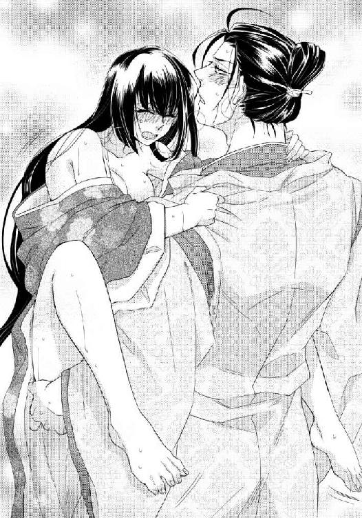
背中に腕を回し抱きつくと、唇を重ねられた。蜜壺は熱棒で埋められ、身体は胸の膨らみがつぶれるほどにきつく抱きしめられ、重ねた唇の隙間からは舌を入れられ、身体じゅうを余すところなく須王に征服される。
それが辛いのかと自分に問えば決してそうではない。これほどまで彼に求められることが嬉しく、誇らしくさえある。
「うんっ、うう......んんっ」
唇を奪われたまま膣壁を突かれ、征服される悦びに身を委ねる。
ぬちぬちと大きく下から突き上げられ、立っていられないほどの衝動に声もなく喘ぐ。
「ふぅ......っん、んうっ」
必死につま先立っていた方の脚まで浮き上がってしまうほどに貫かれ、真白の最も奥で須王は欲望を爆発させた。
「んっ......ううっ......んふぅ」
舌を絡め取られたまま飛沫を浴びせかけられ、出せない嬌声の代わりに蜜壺が大きく戦慄く。一滴残らず搾り取らんとするかのような蠕動に自分の浅ましさを自覚し、ようやく口づけを解いてくれた須王の唇に、真白は自分から軽く唇を寄せた。
「帰ります。京に......須王様と一緒に」
「真白」
喜びに顔を輝かせた須王が、まだ息も整わないまま強く真白を抱きしめる。真白もその背に手を回し、負けないほどに強く須王を抱きしめた。
「だって、誰にも渡したくない......好きです。私では相応しくないと何度諦めようとしても、どうしてもできない......初めて会ったあの日から、本当はずっとお慕いしておりました！」
それこそがもう何年も真白がひた隠しにしてきた、変わることのない本当の想いだった。
吹く風が心地よさよりも肌寒さを感じさせるようになった晩秋。真白は阿敷を旅立ち京へと帰った。およそ二カ月ぶりの帰郷だった。
「おかえりなさいませ」
萩乃が待つ山裾の家は出かける前と何ら変わらぬ様相で、真白たちの帰郷を待っていてくれた。古く狭い邸だが、崩れかけた築地さえ懐かしい。
萩乃が作ってくれた熱物と漬物、道中立ち寄った市で買った鮑と鯛、干鳥、心づくしの料理を萩乃たち親子と共に食べるのは久しぶりだ。主人と従者というより実の家族のように、貧しくとも皆で楽しく過ごした日々が甦る。
しかしこの懐かしい日々も、あとひと月足らずで終わることが既に決まっていた。
年が改まり須王が正式に東宮として立つ時、真白は東宮妃として入内すると決めた。その後についての憂いが消えたわけではないが、一番譲れない須王を好きだという気持ちを、今は何より優先することにした。
他の妃のことも寵愛争いも、まだ競い合う相手も居ない時から気にすることではない。今はまだたった一人の須王の妻として、その愛情を長く繋ぎ止めておくことにだけ心を向けていればいい。
「真白」
ちょうど彼のことを考えていた時に庭の奥から須王の声がして、真白は我知らず笑顔になった。寝殿へと近付き、階を上った須王が簀子に腰を下ろすので、真白も隣に寄り添う。
以前と変わらぬ光景にも見えるが、異なるのは須王に呼ばれる前に真白が自分から彼に寄り添うようになったということだ。
自分は須王に相応しくないと頑なに背を向けていた頃は、とてもできる行為ではなかった。
それでも須王と共にありたいと、自分の気持ちを優先することにしてようやく、真白の行動や言葉から過ぎた遠慮や自重が消えた。おかげでよく笑うようになったと、須王も嬉しそうに褒めてくれる。
「何をしていた？」
「庭を見ていました」
「そうか......」
真白が何気なく目を向けていた方向に須王も目を向けてくれるので、最近よく見る不思議な夢について語ってみたくなる。
「近頃、同じような夢をよく見るのです」
「夢？ 例の私が黄櫨染の袍を着ているというあれか？」
「いえ。そちらはもう全然......おそらくもう現実となったようなものなのでしょう」
「そういうものか？」
「はい。それではなく、小さな男の子ともう青年にも近い大人びた少年が、庭で仲良く遊んでいる夢なのです。私は廂でそれを見ていて、近くには常葉や早代も居て、するとそこに須王様が来られて、大きな方の少年は刀を渡して去って行くのです」
「刀？」
「はい。立派な刀袋に入った長刀です」
「ほう......」
興味深げに須王が返事をしたことが、真白には意外だった。
「あの少年たちは誰なのでしょう？」
「ああそれは......」
答えかけてそこから逆に須王が尋ねてくる。
「大きな方の少年は、利発そうな面差しだったか？ 髪をみずらに結ってはいなかったか？」
なぜわかったのかと真白は驚くばかりだったが、須王が阿敷に神刀を携えてきた際、今上帝からの使者として刀を持ってきた少年なのだそうだ。
「童殿上している左大臣の息子なのだと後で知った。あれは絶対に将来大物になる」
「そうですか」
その少年が夢でまで須王の刀持ちをしていたということは、将来彼は帝となった須王を支えてくれる忠臣となるのかもしれない。心強かった。
「でしたら、もう一人の小さな少年は？」
女の子と見紛うほどの愛らしい少年だった。皆に見守られ庭の中央で、健やかに伸びやかに輝くように笑っていた。──そう、まるで須王のように。
真白がそう説明をすると、須王がそれは嬉しそうに笑った。
「ならば、それはおそらく......」
しかし言いかけた言葉を途中で止め、軽く頭を左右に振って口を噤む。
「いや、よそう。まだわからぬことだ......」
「............？」
真白も考えてみようとしたが、その前に頬に手を添えられた。顔を上向けられて唇を重ねられれば、もうそれ以上は何も考えられなくなる。
「真白」
「須王様」
阿敷から帰って変わったこと、その中には、須王の訪れが昼ではなく夜になったこともある。慌ただしく用を済ませて帰っていくのではなくて、一晩ゆっくりと真白と共に過ごし、あくる日の朝、京へと帰って行く。時にはこの山裾の邸から、いったん淑景舎に帰ることもなく出仕することもある。
ごく自然に塗籠まで入ってくるようにもなった。
ところ構わずこうして真白に口づけるので、常葉たちが困ってしまうほどだ。
どれも些細なことだが幸せな変化で、だからこそ忘れることなく一つ一つ大切に見つけて集めていきたいと真白は思う。ただ須王の傍に居られる──それだけでも夢のようなことなのだから。
「今宵は寒いな」
「もう冬の方が近いくらいですので」
「冬になったら、そなたは私の花嫁だ」
「はい」
赤く染まる頬に添えられた手が肩に下り、衣の上から真白の背を撫でる。
「身体が寒い、温めてくれないか？」
「火鉢を準備いたしましょうか？ 綿の入った袿をお持ちいたします？」
「いや、そなたが温めてくれればいい」
「私が？」
「そう。こうやって」
背中を支えられたまま、ゆっくりと仰向けに倒された。真白を見下ろす須王の肩越し、御簾を巻き上げた簀子の向こうには輝く月が見える。
「このようなところでは誰かが来てしまいます」
「大丈夫。しばらくこちらには来なくていいと申し伝えてきたので、誰も東の対から出てこない」
一枚ずつ衣の合わせを解かれていく毎に、色とりどりの衣が真白の周りに華やかな茵をつくり出していく。
「ですが、外からも見えて......」
「誰も通らない山裾ではなかったか？ ここは」
重ねた袿と単をまとめて腕から抜かれ、小袖姿になった真白は、それ以上言葉で抵抗することを諦めた。それよりも月光を背に受けて表情に憂いを帯びた須王に、自分も触れたい、触れられたい気持ちに正直になる。
「私も温めてください、須王様」
「ああ」
袍と衵を脱いで衾代わりに肩に掛けた須王が、真白の上に身体を重ねてきた。小袖と単をずらし肌と肌を合わせれば、どのような衣よりも温かい。
「寒くはないか？」
「はい」
実を言えば冬が近い夜の空気はかなり肌寒く、しかもここは庭も見える廂で、真白はかなり寒かったのだが無理してそう答えた。須王は何もかもお見通しだったようで、真白の首筋に唇を押し当ててくる。
「もっと熱くしてやる」
「あ......」
一点に灯された火は、瞬く間に真白の身体じゅうに広がった。重ねた素肌も、唇を当てられた場所も、手で触れられたところも、全てが熱い。あまり身体を離さないように抱きしめられているため、須王の唇が這う範囲はいつもより狭まっているが、その分丹念に舌を這わされる。
耳朶を甘噛みされ耳孔に舌を入れられ、びくびくと身体が跳ねた。
「なんだ？ ここもいいのか？」
「わからな......っん」
まるで面白い玩具でも見つけたかのように、須王は執拗に真白の小さな耳を舐めしゃぶった。ぴちゃぴちゃという音が直接耳に響き、巧みな舌の動きと相まって、真白の羞恥心を大きく煽る。
「やっ、いや......ぁ」
自分の声さえ頭の中でくぐもって聞こえ、それを打ち消さんと首を振り抗った。
「逃げるな」
真白の頭と首を押さえた須王が、尖らせた舌を耳の孔にねじ込んでくる。思いもかけない場所に押し入られ、征服され、息を荒らげながら真白は首を竦める。
「いや......あっ」
逃げようと暴れる真白を押さえ込もうと須王が重ねた上半身に体重を乗せ、それが甘美な接触を招き、真白は思わず熱い声を漏らした。
「ああっ......あ」
いつの間にか硬く尖っていた胸の先を、須王の逞しい胸板に擦られ、大きく揺り動かされたのだ。
「どうした？」
何が真白に大きな声を上げさせたのか本当はわかっているのだろうに、須王は素知らぬ顔のまま、もう一度真白の上で上半身を動かす。
「つっ......っあ」
敏感になった器官を乱暴に擦られる感覚は、快感に痛みが混ざり、これまでとは違う声を真白の中から引きだした。
「ひっ、あ......あ」
それが楽しいらしく、須王はますます肌を密着させたまま、真白の上半身を揺り動かす。よく鍛えられた分厚い胸で、柔らかな膨らみを押し潰され、千切れんばかりに乳首が擦られ捏ね回され、真白は悲鳴を上げて逃げ出そうとする。
「やっ、あ......たっ......いたいっ......んん」
ふいに須王が密着を解き、高い位置から真白を見下ろしてくる。月光を背に受けたその表情はよく見えないが、目に涙を浮かべた真白の胸元へその顔が下りてくる。
「かわいそうに、こんなに赤く熟れて」
「............あ」
じんじんと痺れるほどに尖り立っている乳首を、ねっとりと口に含まれた。舌で包まれきつく吸い上げられ、労られているのだかいたぶられているのだかわからないような愛撫を、もういいと真白が音を上げるまでくり返される。
ようやく解放された時には、赤い蕾は尚更大きく硬くなっており、唾液に濡れててらてらと怪しく輝いていた。
「あんっ、あっ......あ」
すぐに逆の蕾も須王の口に捕らわれる。その間も解放された側の胸の膨らみは須王の手に包み込まれ、柔らかく捏ねるように揉みしだかれていた。
肌はあまり夜風の中に露出させないように、あくまでも寒くないように身体を温めあうという初めの約束は、最後まで揺るがさないつもりらしい。
「ずいぶん感じやすくなったな」
濡れた蕾に息を吹きかけられながら囁かれ、真白は羞恥に目が眩んだ。
「そんな......そんなことっ......」
「あるだろう。ほらもうこれほどに硬くなっている」
指の腹で捕まえられた胸の先端が、指と指の間に挟まれ、双方同時に上下に激しく揺さぶられる。そうかと思えば交互に軽く口内に含まれる。
「やめて......やめ......やあっ」
首を振って嫌がろうとも双方が中央に寄せられ、二つ並べて舐められた。
「やっ、あん......ああ」
自在に蹂躙される上半身とは裏腹に、ぴたりと重ねあったままの下半身の中心、真白の太腿にはひどく熱いものが当たる。
「............っ」
「気が付いたか？」
腰紐を解いた須王が真白の袴を下げ、既に指貫と下穿きをずらして取り出していた自分のものを、直に真白の脚の間に当てた。
「もっと熱いものをやる」
「あ............」
まだ指でも触られていない場所に、ゆっくりと静かに太くて硬いものが挿入れられていく。そうされることに慣れた真白の秘所は、抗うこともなくそれに押し開かれ充たされる。
「あ、ああ、あ......あああ」
存分に胸を愛撫されていたこともあり、奪うような激しさはなくともそこに確かに須王のものが押し入ってくると実感させられるような挿入は、ただそれだけで頂点を極めてしまいそうなほどの快感を真白に与えた。
寒くないように気遣ってくれたのか、上半身も再び重ねられたので、須王と一つになったことを尚一層ありありと実感させられる。
奥までゆっくりと押し入り、真白の胎内を充たした後は、特に動くこともなく須王はずっとそうしている。
「今宵はこのまま寝てしまおうか？」
耳元で囁かれ、真白の胸は大きく跳ねた。
「このまま？」
「ああ、このまま」
身体に知らしめるように僅かに胎内をかき混ぜられ、それがほぼ初めての動きであるにもかかわらず、真白は大きく肌を粟立たせる。
「ああ......ぁ」
「よいのか？」
またぐるりと大きく円を描きながら尋ねられ、思わず須王の腕を握りしめた。
「あっ......はい......」
「たまには静かなのもいい。真白の顔がよく見える」
「あ......！」
すぐ近くで見つめられているのだと気が付き、真白は慌てて両手で顔を覆った。
「隠すな。見せよ」
熱のこもったような声で命じられるので、恐る恐る手を下ろす。その瞬間緩やかにではあるが胎内のものを出し入れされ、蕩けるような声が口から漏れた。
「ああっ......あぁ......」
「感じている顔が綺麗だな」
「やっ......見ないでください......」
「いやだ。もっと見る」
「ああっん、そんな......ぁ......」
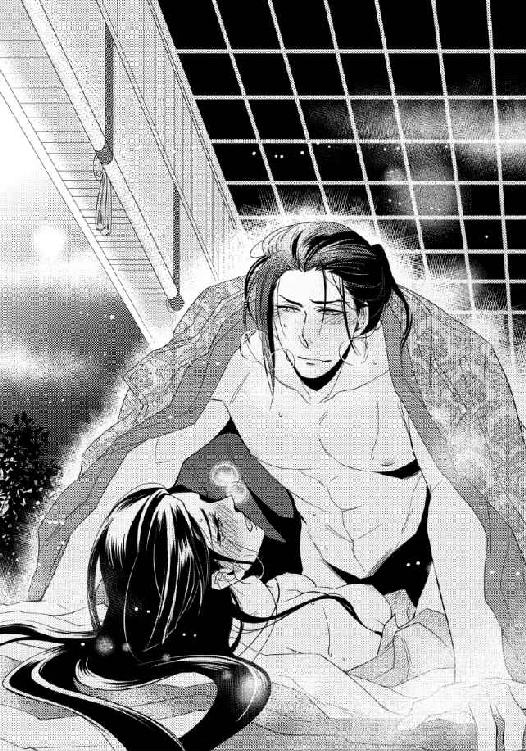
間近でじっと見つめてくる鋭い眼差しと、緩やかにではあるが確実に真白の弱いところを突いてくる胎内の熱棒に、実を言えば激しい情交の時と変わらないほどに真白は感じきっていた。
蜜壺から溢れる愛液が多く、須王の細かな動きまで容易にしてしまっている。
「ここがいいのか？ それともここか？」
「ああっ、あああんっ」
奥をぐりぐりと押され、その少し手前の上部を強く突かれる。どちらとも答えずただ甘い声を漏らすばかりなのに、腰を使いながら真白の顔をしっかりと見据えている須王は、その表情の方で答えを読み取ってしまっているようだ。
「そうか、ここだな」
軽く押されただけで何故か身体が跳ねてしまうような場所を連続で突かれ、真白はびくびくと四肢を引き攣らせた。
「あっ、あ、あああっ」
「蕩けそうな顔をしている」
「やぁ......見ないで......ぁ......ああっ」
「いやだ。見る」
集中的に弱いところを突かれ、今にも極めてしまいそうな顔を須王に見られている。その恥ずかしさで、真白の快感はますます昂まる。
「ダメ......ダメですぅ......ああっ」
「駄目？ いいの間違いだろう、ほら」
「あんっ、ああっ......あああっ」
連続で突き上げられ、須王に顔を凝視されたまま、真白は頂点を極めた。
力の抜けた四肢も、はしたない表情をしているに違いない顔も、おそらく月の明かりの下にはっきりと映し出されていることだろう。
「いやらしい顔をして......」
半開きだった唇をこじ開けるようにして舌を挿しこまれ、口腔内をゆっくりと嬲るように舐められた。
「こちらもほら、ひくひくといやらしく襞が動いてる」
「ああ......ああっ......ぁ」
極めたばかりの蜜壺をかき混ぜられ、ぴちゃぴちゃと淫らな水音が耳を打つ。中がいつまでも蠕動をくり返しているのは、真白自身にもよくわかっていた。
「もっと乱してしまいたくなる」
太腿が胸に付くほどに下半身を折り曲げられ、露わになった秘所に突き立てられる熱棒がこれまでよりも荒くなる。
「乱れきった顔が見たい」
「いや......や、ダメェ......ああっん」
両脚を抱え込むようにして、これまでの緩やかさが嘘のように滅茶苦茶に激しく突き上げられる。
「あっ、あんっ、ダメ、ダメです......っん、ああっ」
極めたばかりの蜜壺は敏感すぎ、真白はまたすぐに次の波に攫われてしまう。
「見ないで......やっ......あっ......見ないでくだ......あ、あああっ」
首を打ち振って悶える顔を見られているとわかっているのに、抗うことができなくて再び須王の眼下で極める。
「すごくいやらしい......綺麗だ、真白」
「も......やあっ......やめ......」
若干涙交じりの真白の髪を指先で優しく梳きながらも、須王の返事は酷い。
「まだだ。次は私に征服された瞬間の顔を見せろ」
「やっ、やあっ、ああっ」
大きく瞳を見開いた真白はまるで絶望的な宣告でもされたかのように、須王の下から逃げ出そうとした。けれども腰を押さえられていて動くこともままならない。
「やんっ、やめ......っ、はっ、あ」
真白の脚を大きく開かせた須王は、高い位置から深々と大きく何度も熱棒を振り下ろすように打ちつけた。
あまりに何度も連続で極めすぎ、もうずっと極めているような状態の蜜壺を最奥まで充たそうと凶悪な肉杭が埋め込まれてくる。
「ああ、あああっん、あん、あぁ」
頬を赤く染めて瞳を潤ませ、焦点の合わない目で薄く唇を開いた真白は、これでもかと言わんばかりに激しく身体を揺さぶられる。
「ああ、あああっ、あぁ──っ」
ひときわ大きな嬌声と共に、何度目か知れない絶頂を迎えた真白の最奥に、須王も熱い飛沫を浴びせかけた。
「あっ、ああ......あ、ん......ぁ」
奥の奥まで充たされ、最後の一滴まで呑み込まされる顔を、須王にしっかりと見つめられる。
「全て私のものになった顔だ」
嬉しげに微笑んで、優しく頬を撫でられても、真白の恥ずかしさは治まらない。両手で顔を覆って小さな声で啼く。
「やぁ......見ないで......くださっ......」
その手を除けて、須王が真白の頬に頬を寄せてきた。
「真白が見せてくれなければ、誰が見せてくれるんだ。私の妻は生涯そなただけなのに」
「............え？」
思いもかけない言葉に、滲んでいた涙も吹き飛ぶ。
「だって......」
今はまだ考えないようにしようと思いながらも、いつも心のどこかに引っかかっている事柄を真白が口にしようとすると、須王が唇に人差し指を当ててそれを阻んだ。
「私の妻はそなただけだ。その約束で、東宮になることを承知した。父上もわかっておられる」
「そんな......」
反論しようとする度、真白の唇は須王の指に押さえられる。考えるのも口にするのも胸が痛いと思っていた事柄は、口にもしなくていいということらしい。
「そなたを悲しませたくない。これは私が決めたことなのだから、そなたに口を出す資格はない」
わざと冷たい言い方をしながら、それでもこの異例の取り決めは、何よりも真白の気持ちを優先してくれたからこその決断なのだとわかっている。須王の優しさが、胸に痛い。
「その代わりそなたには、普通の妃の何倍も頑張ってもらわなければならない事柄もある。私の子を産めるのはそなたしか居ない」
「あ......」
しかし子を生すというのは本人たちの努力でどうにかなるものでもなく、縁や運など様々な要因が関係してくる事柄だ。そう憂えようとする唇もまた押さえられる。
「大丈夫だ。そなたならきっと」
この上なく嬉しげな顔でそう言い切った須王が、庭の中ほどに視線を向けたのは何故だろう。視線の先を追ってみたけれども、真白には何も見えない。
「大丈夫だ、私の夢見姫」
重なってくる唇を幸せに充ちた心で受け止める。二人の心も身体も温かく、月光に照らされた未来も華やかに光り輝いていた。
あとがき
はじめましての方も、またお会いしましたねの方も、こんにちは。芹名りせです。
このたびは、『斎姫の秘め事─宵闇に愛される純潔─』を手に取っていただきまして、まことにありがとうございます。
本書は、ロイヤルキス文庫様の創刊第二弾ラインナップの一冊であります。創刊おめでとうございます！ また、記念すべき場にお呼びいただき、光栄至極でございます。
平安風の世界を舞台にした本書は、世俗を離れた薄幸な姫君とその姫を幼い頃から支え続けた凛々しい皇子が、様々な困難を乗り越え一途な想いを貫く純愛物語となっております。全編を通して、二人がお互いを思う気持ちで溢れています。
にもかかわらず、どことなく仄暗い雰囲気が付きまとうのは、時代の特性でしょうか？ それとも私が趣味全開で書いたあれやこれやのせい......？
好きなのです。呪詛や生霊は当たり前、物の怪や怨霊が跋扈し、それに呪術で対応する世界。燈台の灯りが届かない部屋の隅なんて、闇の中に何かが潜んでいるに決まっていると思いませんか？
という私の妄想じみた平安愛からできたお話なので、主人公の真白は姫君であるにもかかわらず、あんな目やこんな目にあってしまいます。そもそもこれを乙女の皆様が読む小説で書いていいのか？ と、途中ではっと我に返ってみたり......（笑）。
しかし彼女には頼りになるヒーローの須王がついているので、そこは何があっても大丈夫ということで安心していただければ......はい。
お好きな方は「好きです」とこそっと教えていただければ、また調子に乗って書かせていただくかもしれません。ちょっと特殊なあれやこれ（笑）。妄想......といいますか、ネタでしたらまだまだあるのです。
あれやこれが気になる方は、本編の方でどうぞご確認くださいませ。少し仄暗い平安風世界、楽しんでいただけますと幸いです。
さて、本書に出てくる『斎姫』という役職なのですが、実際の『斎宮』制度を参考に、私が勝手に創作させていただきました。ですので、お仕え内容やあれやこれは完全にフィクションです。（当たり前ですが）
あくまでもファンタジーということで、ハラハラドキドキしながら読んでいただければと思います。ちなみに担当様には「ホラー要素を謎解いていくドキドキ感」と褒めていただきました。
確かにホラーかも......しかしあくまでも艶っぽい雰囲気に溢れたドキドキですので、主役二人の甘い場面と共にそこを楽しんでいただければ！
ぜひ感想などお聞かせくださいませ。首を長くしてお待ちしております。
舞台が平安風ということで、衣装や調度品などノリノリで書かせていただいたのですが（好きなのです和風）、それを絵にしてくださるイラストレーター様はたいへんだなとちらりと思っておりました。ところが、見せていただいたラフは実に見事で！
絵を描かれる方って凄いなと改めて感動しました。担当してくださいました九重千花先生、本当にありがとうございました。表紙の須王の眼差しに悩殺されました（笑）。本編の挿絵も、実際の本になった形で拝見させていただくのを今から楽しみにしております！ ありがとうございました。
さてこのお話は、お出ししたいくつかのプロットの中から担当様に選んでいただいたのですが、奇しくも提示した中で、これまで私が書いてきた作品とは一番雰囲気が異なるものを選んでいただきました。けっこう意外で、「おお、そうくるのか」ととても新鮮な気持ちでした。
すごく書きたいお話でしたのでもちろん大喜びで書かせていただいたのですが、レーベルの創刊が近付き、公式ホームページなどができ、拝見させていただくと背中に変な汗が......。
ロイヤルキス文庫の煽り（？）モットー（？）は「とっておきのキスからはじまる恋 ちょっぴり過激な極上乙女ノベル」です。
（ち、ちょっと待ってください......うちの二人は諸事情により、キスより前にあれやこれやしておりますが!?）
一人で勝手に慌てた結果、加筆したキスシーンはどうぞ本編でご確認ください（笑）。おかげさまで、良いシーンが増えたと自負しております。
最後になりましたが、担当様はじめ、本書が発行されるまでにご尽力くださったすべての皆様、本当にありがとうございました。厚く御礼申し上げます。
そして、本書を手に取ってくださったあなたへ、最大級の感謝を込めて──ありがとう！
またお目にかかることがございましたら、ぜひご贔屓にお願いいたします！
艶色襲
年の瀬も迫り、年が明けるとすぐに行われる須王の立太子礼も、それに伴う真白との婚姻の儀も間近となったある日、山裾の邸ではその年一番の大雪が降った。
「ああ寒い......格子を下げて、屏風や几帳をいくら立てたってちっとも温まらない......姫様も、もっと奥に居ないと風邪をひきますよ」
廂の奥の母屋に置かれた火桶の前から離れない乳姉妹の常葉が、先ほどから何度も呼びかけてくる。どちらかといえば簀子に近い位置で息を白くしながら縫い物をしていた真白は、小さな笑みを返した。
「そうね」
真白の隣で同じように正月用の衣を誂えていた常葉の妹の早代が、主人の代わりとばかりに姉に言い返す。
「姫様は宮様を待ってらっしゃるのよ。ここよりもっと寒い外で私たちのために働いてくださってるのに、自分たちばかり温まるのは申し訳ないって......ねえ、姫様？」
決して言葉にしたわけではないのに、早代に胸の内をほぼ完璧に言い当てられてしまい、真白は動揺しながらも頷いた。
「え、ええ」
「そんなこと私だってわかってるわよ。でも姫様が寒そうだと、宮様がこちらに来られた時心配なさると思って言ってるんじゃない」
常葉の反論に、真白はどきりと胸を跳ねさせた。
「......そうかしら？」
「もちろんそうですよ」
力強く言い切られ、簀子と廂とを隔てている格子に目を向けた。
格子の向こうからは賑やかな声が聞こえてくる。忙しく立ち回っている様子の声々の中に、一際張りのある堂々とした声が響き、真白の胸の音はますます大きくなった。
（須王様......）
彼は真白に会うために内裏から馬を駆り、わざわざ遠いこの地まで来たはずなのに、雪が山と積もった前庭を目にした途端、常葉の兄である直輔を手伝って雪かきを始めてしまった。
次期東宮様にそんなことをさせるわけにはいかないと、誰が止めても聞きはしない。気にするなと力強く頷き、いつも通り己の信念にのみ従って行動する。
その凛とした眼差しと生命力に満ち溢れた姿を頭に思い描いただけで、真白の胸は苦しいほどに痛くなった。もうじき正式に彼の妻になるなど、とても信じられない。未だに幸せな夢の中にいるかのようだ。
頬に朱が上りそうになったことを常葉たちに見つかるまいと、縫いかけの単に慌てて視線を落としたのだが遅かった。
「姫様どうしたんです？ 頬が赤いですよ。やっぱり寒いところにずっと居たせいで、熱が出たんじゃないですか？」
これまで火桶の傍から離れなかった常葉も、さすがに主人の不調と思われる時までそれを貫くことはせず、立ち上がってこちらへとやって来る。
「本当だ。姫様、少し横になります？」
早代まで寝所を整えに塗籠へ行こうとするので、真白は慌てた。
「いいえ、熱があるわけではないの。ただ......」
須王のことを思えば、いつでも温かいを通り越して熱いほどの気持ちになるのだとは言葉にし難い。真白が言い澱んだ瞬間、格子の一画に設けられた出入り用の板戸が音もなく開いた。
「誰が熱を出したのだ？」
簀子から吹き込む冷たい外風と共に現れた、目にも鮮やかな氷襲の狩衣姿の人物は、板間に座り込んでいた真白を瞬く間にその腕の中に抱き締めてしまう。
「いえ、誰も......」
慌てて腕の中で身体を捻る真白の顔を覗き込み、穏やかに緩む表情を見れば、たとえ一瞬前まではその言葉が真実であったとしても、たちまち嘘のようになった。驚きと嬉しさと恥ずかしさで、真白の頬はますます赤く染まる。
「なるほど確かに赤い」
肌を重ねることで熱を確かめようとでもするかのように、こめかみに唇を寄せられ、真白はいっそう頬を熱くした。その熱は傍に居た常葉や早代にも伝播したようだ。
「では宮様、後のことはよろしくお願いしますね」
結婚間近の恋人たちの甘い雰囲気にこれ以上当てられてはたまらないと、常葉も早代も須王に全てを委ね、早々に母屋から退散してしまう。
真白と二人きりになると須王はすぐに、彼女を腕に抱いたままその場に立ち上がった。
「熱があっても少しくらいはいいだろう？ そなたに見せたい物がある。このまま抱いていくから来い」
「はい」
頼りになる胸に頬を埋め、真白は小さく頷いた。
板戸を抜けて簀子に出ると、前庭は朝に見た時よりも更に深い雪に覆われていた。しかし池の前の平地は綺麗に雪除けされており、その雪を使って庭の奥に、山の稜線を描いたような大きな雪山が盛られている。
「今、都で流行している遊びだ。雪が降った日にはそれを集めて庭に山を作る。どれほど大きなものができるかを競うこともある。内裏での遊びになど私はまったく興味はないが、そなたが喜ぶかと思った。どうだ？」
自分のためにこの寒い中でこれだけのものを作ってくれたのだと考えれば、真白は鼻の奥がつんと痛くなるほどに嬉しかった。
「はい、とても綺麗です。ありがとうございます」
喜びを素直に口にすると、腕に抱えたままの真白に須王がそっと頬を寄せる。その肌があまりに冷たく、自分のせいで凍えさせてしまったのではと真白は心を痛めた。精悍な頬を両手で包み込む。
「何だ？」
訊きはするものの答えは待たず、須王は真白に唇を重ねてくる。その口づけさえひんやりと冷たく、温めなければという思いから、真白はいつになく何度も自分の方から唇を重ね直した。
背中を抱き止めていた須王の手に、これまで以上の力が入る。
「積極的だな」
胸によく響く艶のある声で囁かれた次の瞬間、当然のように主導権を奪われる。食むように唇を啄まれ、舌先で輪郭をなぞられ、力の抜けた唇の隙間から須王の舌が真白の口腔内に押し入った。すぐに舌を絡め取られ、そのままきつく吸い上げられ、須王の腕の中、真白の身体からは次第に力が抜けていく。
「ん......んっ......っう」
艶めかしい声を漏らし、口角から泡立った唾液を溢れさせてしまうほどに激しく舌を絡められ、口腔内を余すところなく蹂躙されれば、もう抗う術はない。
力の抜けきった唇を須王がようやく解放し、頬を辿る口づけがそのまま首筋へと移動していっても、真白は熱い吐息を漏らしながら素直に受け止め続けた。
しかし衣の襟の合わせを寛がせかけた須王の手が、真白の喉元でふと止まる。
「さすがに今はまずいか。熱があるのだったな」
労わるように抱き直され、真白は恥ずかしさに頬を染めながらも須王の耳元に口を寄せた。「いえ、実はないのです。ただ須王様のお姿を思い出していたところを、常葉たちが勘違いして......」
熱があるのだと騒ぎだした経緯を伝えると、再び強く唇を吸われた。
「あっ......っん、ん......っ」
大きく音を響かせて口づけを終わらせた須王が、前庭に背を向けもう一度板戸を潜る。
「ならば遠慮はいらないな、もっと熱くしてやろう」
火桶の置かれた母屋の中央まで運ばれ、その場に腰を下ろした須王の膝の上にそのまま座らされた。常葉たちが気を利かせてくれたのか、御座として敷かれた畳の上に広がる茵の色は白。その上に坐す須王の狩衣の色も白とあって、先ほどまで眺めていた前庭の光景を思い出させる。
須王にそう伝えると、茵の上にそっと横たえられた。
「ならばそなたも白だから、これで氷襲の出来上がりだ」
「............？」
真白の衣は白くないのにどういうことだろうかと首を傾げ、名前のことを言われたのだと思い当たった時には、もう袴の紐を緩められていた。全て取り払うことはなく少し下げられ、その中に潜りこんだ須王の手が、幾重にも重なった袿をかき分け素肌に触れてくる。
「ああっ......ぁ......」
須王を受け入れるための孔を迷うことなく探り当てられ、既に蜜で潤んでいた入口を指先で撫でられ、真白ははしたない声を上げてしまった。
須王に黙ったまま見つめられていることに耐えられず、顔を背ければ、その行動を咎めるかのように長い指が胎内に押し入ってくる。
「色目を変えてみせようか？」
「え？ え......あっ、ああっ」
謎かけのような言葉に首を捻るうちにも、真白の内に挿入った須王の指はますます奥へと進み、大きく抜き差ししながらその本数を増していく。
「や......あ、ああ......あっ」
溢れる蜜に空気を含ませるように蜜壺の中を激しくかき混ぜられ、身体の熱が増す。卑猥な水音が大きくなり、何かを考えようとしても思考がまったくまとまらない。
巧みな指技に大きく乱されながら、呼吸を荒げる真白の秘所に突き立てられていた須王の指が唐突に抜き去られた。と思えば、いつの間にか取り出されていた硬く逞しい陽物が、間髪入れずにその空洞に押し入ってくる。
「あ、あああっ！」
凶悪なほどに大きなものに肉襞を引き延ばされる感覚は、いつになっても真白に甘い悲鳴を上げさせる。しかしそれもすぐに快楽の波に?み込まれてしまう。ほぼ衣を着たまま秘所だけを繋げる行為に、大きく肌を戦慄かせ心も体も蕩けさせる真白の上へと、須王が上半身を重ねた。
「ほら、これで梅襲だ」
「え？ え......っあ、ああっ......」
律動を刻まれながら意味深なことを囁かれても、冷静に考えることなどできはしない。縋るように須王の衣の袖を掴み、すっかり征服され尽くした隘路を大きく収縮させる真白の前髪を、須王が優しくかき上げる。
「白の表地に蘇芳の裏地」
「あ......ああっ！」
同じ名の蘇芳色に須王が自らを例えたのだと、その機知に感心する暇もない。すぐに大きく突き上げられ、真白は嬌声を上げさせられる。
「あ、あんっ......あ！」
恥ずかしさに耐えて上げた視線の先、悪戯心を含んで煌めく須王の瞳と、彼が纏った白が表地の狩衣の清々しさは、確かに前庭の雪山と寸分違わぬ真白き美しさだった。
斎姫の秘め事〜宵闇に愛される純潔〜
電子第１版発行 ２０１４年４月１日
著 者 芹名りせ
発行所 株式会社ジュリアン
東京都千代田区九段北１―５―９―３Ｆ
０３―３２６１―２７３５
ＨＰ http://www.julian-pb.com/
※本電子書籍は左記の作品に基づき製作されました。
発行 株式会社ジュリアン
ロイヤルキス文庫『斎姫の秘め事〜宵闇に愛される純潔〜』
（初版発行 ２０１３年12月30日）
(c)Rise Serina/julian Publishing2014
※本書の一部、あるいは全部を無断で複製複写（コピー）、転載、上演、放送することは法律で認められた場合を除き、著作権の侵害となるため、禁止します。